PHYS 210 / FRIDAY OCTOBER 30, 2026
Midterm 2 A focused route through the textbook, tutorials and problem sets, with the working one click away.
24 homework questions33 tutorial questions29 extra textbook solutions
Practice tests & bonus papers ↗ Topic map Solutions Tilt & angle Textbook index LATEST D2L HINTS · OCT 28, 10:29 A.M.
Three problems and two bonuses The announcement says “Choose 3 of the following 4 problems”: charged-particle collision; Gauss’s law and charge distribution; capacitors in combination; capacitor with dielectric. Bonuses: spherical charge distribution and capacitors with dielectric in combination.
Read the instructor’s announcement ↗ D2L coverage verified October 28. Question selections and worked explanations below are Tesselate study preparation. The reported in-class tilted-plate hint is covered in the angle section.
Start with the closest matches Charged-particle collision Energy conservation; distinguish a fixed target from two freely moving particles.
Gauss: charges and field Find induced surface charges first; then write E separately in every region.
Capacitor combination Reduce groups, find total charge, then restore individual voltages and charges.
Capacitor with dielectric Decide what stays constant before choosing an energy equation.
Bonus 1: spherical distribution Integrate spherical shells; check field continuity and maximum.
Bonus 2: dielectric combination Combine electrical topology with the dielectric geometry.
Potential questions: supporting practice Calculate potential, use energy, or differentiate/integrate to connect V and E.
Angle variant: additional preparation Match the diagram: tilted gap, liquid filling, or hanging charged ball.
Study order and the two common traps HW5 23.5 → 23.7 → textbook 22.40 → 22.42 → Tutorial 7 Q1–2 → Tutorial 6 Q47/Q69 → textbook 24.34–36 → 22.50 → HW7 24.66/24.68.
At closest approach two freely moving particles share a velocity; both are at rest only in the centre-of-mass frame. A connected battery fixes the network voltage, not every internal capacitor voltage.
1 2 μ ( v 1 i − v 2 i ) 2 + k q 1 q 2 r i = k q 1 q 2 r min , μ = m 1 m 2 m 1 + m 2 . \frac12\mu(v_{1i}-v_{2i})^2+\frac{kq_1q_2}{r_i}=\frac{kq_1q_2}{r_{\min}},\quad\mu=\frac{m_1m_2}{m_1+m_2}. 2 1 μ ( v 1 i − v 2 i ) 2 + r i k q 1 q 2 = r m i n k q 1 q 2 , μ = m 1 + m 2 m 1 m 2 . This head-on, nonrelativistic closest-approach equation assumes repelling charges and no external work. For a fixed target, use the moving particle’s mass instead of the two-body reduced mass.
Questions & worked solutions Search by topic or printed question number. Homework numbering follows the handout; “Textbook 15e” uses the downloaded book. Cropped original question screenshots appear in each card. Expand the solution sections for 18 posted Tutorial 4–5 solutions and matching textbook-manual screenshots. D2L currently lists solution files for Tutorials 1–5; Tutorials 6–7 have worked explanations here.
Connecting to original textbook solutions…
Sign in / open reference library ↗ After signing in, return here. If the images do not reconnect automatically, reload this page.
Search TopicAll topics Particle collisions Gauss & conductors Capacitor networks Dielectric changes Bonus · spherical charge Bonus · dielectric combinations Potential & energy Charge sharing Angle & tilt preparation SourceAll sources Homework Tutorial Textbook 15e ProgressAll questions Not reviewed Reviewed
Review checks save in this browser.
No matching questions. Change the filters or clear the search.
Homework 4 · 22.15 Excess electrons on a conducting sphere Supporting · Gauss & conductors Original question screenshot Cropped to question 22.15, with its diagrams and any continuation included. Click an image to enlarge.
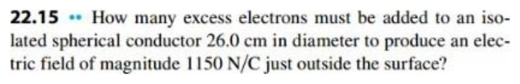
Homework 4 · Original question 22.15 · page 1 · Open full-size screenshot ↗ A spherical conductor has diameter 26.0 cm. How many excess electrons produce a field magnitude of 1150 N/C just outside its surface?
R E points inward Q < 0 R = 0.130 m conductor Reference diagram; arrows show the directions used in the solution. Show worked solution Tesselate explanation
Identify An isolated spherical conductor has its excess charge on the surface. Added electrons make Q negative, so the external field points inward.
Set up For a concentric Gaussian sphere just outside the metal,
∣ Q ∣ = ε 0 E ( 4 π R 2 ) |Q|=\varepsilon_0 E(4\pi R^2) ∣ Q ∣ = ε 0 E ( 4 π R 2 ) and
N = ∣ Q ∣ / e N=|Q|/e N = ∣ Q ∣/ e .
Execute R = 0.260 / 2 = 0.130 m R=0.260/2=0.130\ \mathrm m R = 0.260/2 = 0.130 m ∣ Q ∣ = 4 π ( 8.854 × 10 − 12 ) ( 1150 ) ( 0.130 ) 2 = 2.16 × 10 − 9 C |Q|=4\pi(8.854\times10^{-12})(1150)(0.130)^2=2.16\times10^{-9}\ \mathrm C ∣ Q ∣ = 4 π ( 8.854 × 1 0 − 12 ) ( 1150 ) ( 0.130 ) 2 = 2.16 × 1 0 − 9 C N = 2.16 × 10 − 9 1.602 × 10 − 19 = 1.35 × 10 10 N=\frac{2.16\times10^{-9}}{1.602\times10^{-19}}=1.35\times10^{10} N = 1.602 × 1 0 − 19 2.16 × 1 0 − 9 = 1.35 × 1 0 10 Evaluate The count is positive, while Q = −2.16 nC. Using the diameter as R would give four times too many electrons. Manual problem 22.15 uses a different question.
1.35 × 10¹⁰ excess electrons; Q = −2.16 nC.
No verified matching textbook-manual screenshot is available for this question. Use the worked solution above.
Homework 4 · 22.19 Charge inside a conducting shell Core · Gauss & conductors Original question screenshot Cropped to question 22.19, with its diagrams and any continuation included. Click an image to enlarge.
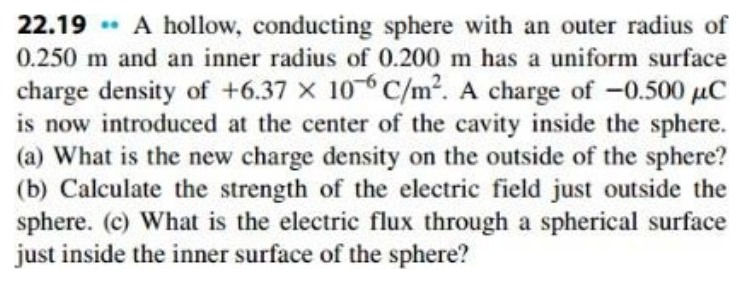
Homework 4 · Original question 22.19 · page 1 · Open full-size screenshot ↗ A conducting spherical shell has outer radius 0.250 m, inner radius 0.200 m, and initial surface charge density +6.37 × 10⁻⁶ C/m². Place −0.500 µC at the centre of its cavity. Find (a) the new outer surface density, (b) the field just outside, and (c) the flux through a sphere just inside the cavity wall.
− Centre: −0.500 µC Inner: +0.500 µC Outer: +4.503 µC E = 0 in the metal Dashed: cavity surface Reference diagram; arrows show the directions used in the solution. Show worked solution Tesselate explanation
Identify Initially the empty cavity has no inner surface charge. The shell is isolated, so introducing the central charge redistributes its charge without changing its total.
Set up Q s = 4 π b 2 σ 0 , Q i = − q , Q o = Q s − Q i = Q s + q Q_s=4\pi b^2\sigma_0,\quad Q_i=-q,\quad Q_o=Q_s-Q_i=Q_s+q Q s = 4 π b 2 σ 0 , Q i = − q , Q o = Q s − Q i = Q s + q σ o = Q o 4 π b 2 , E ( b + ) = Q o 4 π ε 0 b 2 , Φ ( a − ) = q ε 0 \sigma_o=\frac{Q_o}{4\pi b^2},\quad E(b^+)=\frac{Q_o}{4\pi\varepsilon_0 b^2},\quad \Phi(a^-)=\frac{q}{\varepsilon_0} σ o = 4 π b 2 Q o , E ( b + ) = 4 π ε 0 b 2 Q o , Φ ( a − ) = ε 0 q Execute Q s = 5.003 μ C , Q i = + 0.500 μ C , Q o = 4.503 μ C Q_s=5.003\ \mu\mathrm C,\quad Q_i=+0.500\ \mu\mathrm C,\quad Q_o=4.503\ \mu\mathrm C Q s = 5.003 μ C , Q i = + 0.500 μ C , Q o = 4.503 μ C ( a ) σ o = + 5.73 × 10 − 6 C / m 2 (a)\ \sigma_o=+5.73\times10^{-6}\ \mathrm{C/m^2} ( a ) σ o = + 5.73 × 1 0 − 6 C/ m 2 ( b ) E = 6.48 × 10 5 N / C radially outward (b)\ E=6.48\times10^5\ \mathrm{N/C}\ \text{radially outward} ( b ) E = 6.48 × 1 0 5 N/C radially outward ( c ) Φ = − 5.65 × 10 4 N m 2 / C (c)\ \Phi=-5.65\times10^4\ \mathrm{N\,m^2/C} ( c ) Φ = − 5.65 × 1 0 4 N m 2 /C Evaluate The shell still totals +5.003 µC. The cavity Gaussian sphere encloses only the negative point charge, so its outward flux is negative. The manual rounds intermediate values and gives 6.47 × 10⁵ N/C; both agree within rounding.
(a) +5.73 × 10⁻⁶ C/m²; (b) 6.48 × 10⁵ N/C outward; (c) −5.65 × 10⁴ N m²/C.
Show original textbook-solution screenshots · 22.19 Expand to load the cropped original solution from the signed-in reference library.
Textbook solutions manual · problem 22.19 Page 79 ↗ Page 80 ↗ Original solution screenshots require Tesselate sign-in. Homework 4 · 22.21 Uniformly charged insulating sphere Core · Bonus · spherical charge Original question screenshot Cropped to question 22.21, with its diagrams and any continuation included. Click an image to enlarge.
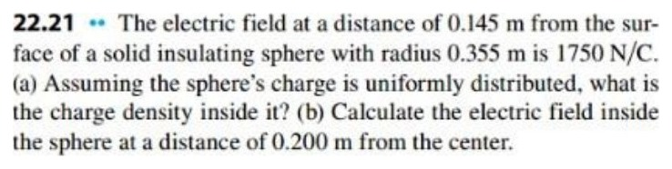
Homework 4 · Original question 22.21 · page 1 · Open full-size screenshot ↗ A solid insulating sphere has radius 0.355 m. The field magnitude 0.145 m beyond its surface is 1750 N/C. Find (a) its uniform volume charge density and (b) the field magnitude 0.200 m from its centre.
r Uniform volume charge R = 0.355 m Inside: r = 0.200 m Outside: r = 0.500 m Einside ∝ r Reference diagram; arrows show the directions used in the solution. Show worked solution Tesselate explanation
Identify Use spherical symmetry. Outside the sphere all its charge is enclosed. Inside a uniformly charged insulator, enclosed charge grows as r³; the electric field need not be zero.
Set up Q = 4 π ε 0 E o u t r o u t 2 , ∣ ρ ∣ = ∣ Q ∣ ( 4 / 3 ) π R 3 Q=4\pi\varepsilon_0 E_{out}r_{out}^2,\quad |\rho|=\frac{|Q|}{(4/3)\pi R^3} Q = 4 π ε 0 E o u t r o u t 2 , ∣ ρ ∣ = ( 4/3 ) π R 3 ∣ Q ∣ Q e n c = ρ 4 π r 3 3 , ∣ E ( r ) ∣ = ∣ ρ ∣ r 3 ε 0 Q_{enc}=\rho\frac{4\pi r^3}{3},\quad |E(r)|=\frac{|\rho|r}{3\varepsilon_0} Q e n c = ρ 3 4 π r 3 , ∣ E ( r ) ∣ = 3 ε 0 ∣ ρ ∣ r Execute r o u t = 0.355 + 0.145 = 0.500 m , ∣ Q ∣ = 4.87 × 10 − 8 C r_{out}=0.355+0.145=0.500\ \mathrm m,\quad |Q|=4.87\times10^{-8}\ \mathrm C r o u t = 0.355 + 0.145 = 0.500 m , ∣ Q ∣ = 4.87 × 1 0 − 8 C ( a ) ∣ ρ ∣ = 2.60 × 10 − 7 C / m 3 (a)\ |\rho|=2.60\times10^{-7}\ \mathrm{C/m^3} ( a ) ∣ ρ ∣ = 2.60 × 1 0 − 7 C/ m 3 ( b ) ∣ E ( 0.200 ) ∣ = 1.96 × 10 3 N / C (b)\ |E(0.200)|=1.96\times10^3\ \mathrm{N/C} ( b ) ∣ E ( 0.200 ) ∣ = 1.96 × 1 0 3 N/C Evaluate Only a field magnitude is specified, so the sign of the charge is not determined. For positive charge the field is outward; for negative charge it is inward. Inside, E grows linearly from zero at the centre, then falls as 1/r² outside.
|ρ| = 2.60 × 10⁻⁷ C/m³; |E(0.200 m)| = 1.96 × 10³ N/C.
Show original textbook-solution screenshots · 22.21 Expand to load the cropped original solution from the signed-in reference library.
Textbook solutions manual · problem 22.21 Page 80 ↗ Page 81 ↗ Original solution screenshots require Tesselate sign-in. Homework 4 · 22.33 Sphere suspended beside a charged sheet Supporting · Angle & tilt preparation Original question screenshot Cropped to question 22.33, with its diagrams and any continuation included. Click an image to enlarge.
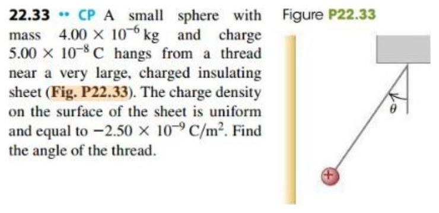
Homework 4 · Original question 22.33 · page 1 · Open full-size screenshot ↗ A sphere of mass 4.00 × 10⁻⁶ kg and charge +5.00 × 10⁻⁸ C hangs beside a very large insulating sheet with surface charge density −2.50 × 10⁻⁹ C/m². Find the thread angle from vertical.
+ − θ Free-body diagram T qE mg Sheet Forces balance Reference diagram; arrows show the directions used in the solution. Show worked solution Tesselate explanation
Identify The positive sphere is attracted toward the negative sheet. Three forces balance: tension along the thread, weight downward, and electric force toward the sheet.
Set up For a very large insulating sheet,
E = ∣ σ ∣ / ( 2 ε 0 ) E=|\sigma|/(2\varepsilon_0) E = ∣ σ ∣/ ( 2 ε 0 ) .
T sin θ = q E , T cos θ = m g , tan θ = q ∣ σ ∣ 2 ε 0 m g T\sin\theta=qE,\quad T\cos\theta=mg,\quad \tan\theta=\frac{q|\sigma|}{2\varepsilon_0 mg} T sin θ = q E , T cos θ = m g , tan θ = 2 ε 0 m g q ∣ σ ∣ Execute E = 141.2 N / C , F e = 7.06 × 10 − 6 N , m g = 3.92 × 10 − 5 N E=141.2\ \mathrm{N/C},\quad F_e=7.06\times10^{-6}\ \mathrm N,\quad mg=3.92\times10^{-5}\ \mathrm N E = 141.2 N/C , F e = 7.06 × 1 0 − 6 N , m g = 3.92 × 1 0 − 5 N θ = tan − 1 ( 0.1801 ) = 10.2 ∘ \theta=\tan^{-1}(0.1801)=10.2^\circ θ = tan − 1 ( 0.1801 ) = 10. 2 ∘ Evaluate The sphere leans toward the sheet. Use the insulating-sheet field σ/(2ε₀), not the conductor-surface value σ/ε₀. This is manual problem 22.31, despite the handout numbering 22.33.
θ = 10.2° toward the negative sheet.
Show original textbook-solution screenshot · 22.31 Expand to load the cropped original solution from the signed-in reference library.
Textbook solutions manual · problem 22.31 Page 84 ↗ Original solution screenshots require Tesselate sign-in. Homework 4 · 22.37 Flux through a slanted box Supporting · Gauss & conductors Original question screenshot Cropped to question 22.37, with its diagrams and any continuation included. Click an image to enlarge.
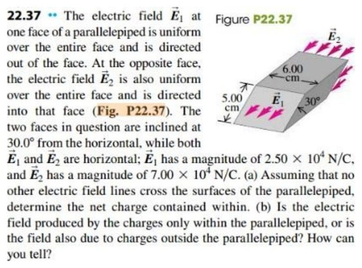
Homework 4 · Original question 22.37 · page 2 · Open full-size screenshot ↗ Two opposite faces of a box each measure 5.00 cm by 6.00 cm and are inclined 30.0° to a horizontal field. E₁ = 2.50 × 10⁴ N/C points out through one face; E₂ = 7.00 × 10⁴ N/C points in through the other. No field crosses the remaining faces. Find (a) the net enclosed charge and (b) what can be concluded about external charges.
E₁ out E₂ in n̂ 30° to plane 60° to normal Φ₁ = +37.5; Φ₂ = −105 N·m²/C Reference diagram; arrows show the directions used in the solution. Show worked solution Tesselate explanation
Identify Apply Gauss’s law to the entire closed box. The other faces contribute zero by the stated assumption.
Set up Each face has
A = 0.00300 m 2 A=0.00300\ \mathrm{m^2} A = 0.00300 m 2 . The acute angle between field and face normal is
60 ∘ 60^\circ 6 0 ∘ .
Φ n e t = E 1 A cos 60 ∘ − E 2 A cos 60 ∘ , Q e n c = ε 0 Φ n e t \Phi_{net}=E_1A\cos60^\circ-E_2A\cos60^\circ,\quad Q_{enc}=\varepsilon_0\Phi_{net} Φ n e t = E 1 A cos 6 0 ∘ − E 2 A cos 6 0 ∘ , Q e n c = ε 0 Φ n e t Execute Φ 1 = + 37.5 , Φ 2 = − 105 , Φ n e t = − 67.5 N m 2 / C \Phi_1=+37.5,\quad\Phi_2=-105,\quad\Phi_{net}=-67.5\ \mathrm{N\,m^2/C} Φ 1 = + 37.5 , Φ 2 = − 105 , Φ n e t = − 67.5 N m 2 /C ( a ) Q e n c = ( 8.854 × 10 − 12 ) ( − 67.5 ) = − 5.98 × 10 − 10 C (a)\ Q_{enc}=(8.854\times10^{-12})(-67.5)=-5.98\times10^{-10}\ \mathrm C ( a ) Q e n c = ( 8.854 × 1 0 − 12 ) ( − 67.5 ) = − 5.98 × 1 0 − 10 C Evaluate (b) The inward net flux proves a negative net enclosed charge. Flux alone cannot determine whether external charges also contribute to the local field: their total closed-surface flux is zero. Do not infer the location of every source from the two field magnitudes; positive and negative charges could both be inside.
Qenc = −5.98 × 10⁻¹⁰ C. External contributions cannot be resolved from net flux alone.
No verified matching textbook-manual screenshot is available for this question. Use the worked solution above.
Homework 5 · 23.1 Work along a two-dimensional move Supporting · Particle collisions Original question screenshot Cropped to question 23.1, with its diagrams and any continuation included. Click an image to enlarge.
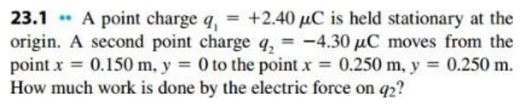
Homework 5 · Original question 23.1 · page 1 · Open full-size screenshot ↗ Fixed q₁ = +2.40 µC at the origin; q₂ = −4.30 µC moves from (0.150, 0) m to (0.250, 0.250) m. Find work done by the electric force.
q₁ q₂ r Separation between charges q₁ fixed at origin ri = 0.150 m rf = 0.3536 m Diagram for 23.1: q₁ fixed at origin; ri = 0.150 m; rf = 0.3536 m. Show worked solution Tesselate explanation
Identify Electric work equals initial minus final potential energy.
Set up r i = 0.150 , r f = 0.250 2 + 0.250 2 ; W = k q 1 q 2 ( 1 / r i − 1 / r f ) r_i=0.150,\ r_f=\sqrt{0.250^2+0.250^2};\ W=kq_1q_2(1/r_i-1/r_f) r i = 0.150 , r f = 0.25 0 2 + 0.25 0 2 ; W = k q 1 q 2 ( 1/ r i − 1/ r f ) .
Execute r f = 0.3536 m ; W = ( 8.988 × 10 9 ) ( 2.40 × 10 − 6 ) ( − 4.30 × 10 − 6 ) ( 6.667 − 2.828 ) = − 0.356 J r_f=0.3536\ \mathrm m;\ W=(8.988\times10^9)(2.40\times10^{-6})(-4.30\times10^{-6})(6.667-2.828)=-0.356\ \mathrm J r f = 0.3536 m ; W = ( 8.988 × 1 0 9 ) ( 2.40 × 1 0 − 6 ) ( − 4.30 × 1 0 − 6 ) ( 6.667 − 2.828 ) = − 0.356 J .
Evaluate Moving unlike charges apart raises potential energy; electric work is negative.
−0.356 J.
Show original textbook-solution screenshots · 23.1 Expand to load the cropped original solution from the signed-in reference library.
Textbook solutions manual · problem 23.1 Page 114 ↗ Page 115 ↗ Original solution screenshots require Tesselate sign-in. Homework 5 · 23.5 Closest approach of repelling charges Core · Particle collisions Original question screenshot Cropped to question 23.5, with its diagrams and any continuation included. Click an image to enlarge.
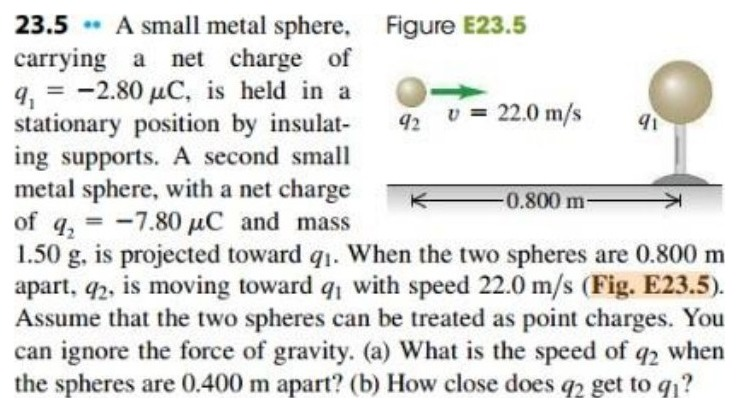
Homework 5 · Original question 23.5 · page 1 · Open full-size screenshot ↗ Fixed q₁ = −2.80 µC; moving q₂ = −7.80 µC, m = 1.50 g, initially 0.800 m away at 22.0 m/s toward q₁. Find speed at 0.400 m and minimum separation.
q₁ q₂ r Separation between charges Both charges negative Approaching: vᵢ = 22 m/s Turning point: v = 0 Diagram for 23.5: Both charges negative; Approaching: vᵢ = 22 m/s; Turning point: v = 0. Show worked solution Tesselate explanation
Identify Repulsion converts kinetic energy into electric potential energy.
Set up 1 2 m v 2 + k q 1 q 2 / r = 1 2 m v i 2 + k q 1 q 2 / r i = E t o t \tfrac12mv^2+kq_1q_2/r=\tfrac12mv_i^2+kq_1q_2/r_i=E_{tot} 2 1 m v 2 + k q 1 q 2 / r = 2 1 m v i 2 + k q 1 q 2 / r i = E t o t .
Execute E t o t = 0.363 + 0.2454 = 0.6084 J E_{tot}=0.363+0.2454=0.6084\ \mathrm J E t o t = 0.363 + 0.2454 = 0.6084 J . At
r = 0.400 r=0.400 r = 0.400 ,
K = 0.1177 J K=0.1177\ \mathrm J K = 0.1177 J , so
v = 12.5 m / s v=12.5\ \mathrm{m/s} v = 12.5 m/s . At turnaround
K = 0 K=0 K = 0 ,
r m i n = k q 1 q 2 / E t o t = 0.323 m r_{min}=kq_1q_2/E_{tot}=0.323\ \mathrm m r min = k q 1 q 2 / E t o t = 0.323 m .
Evaluate The turning point is closer than 0.400 m, so the intermediate speed is real and smaller than 22 m/s.
12.5 m/s; minimum separation 0.323 m.
Show original textbook-solution screenshots · 23.5 Expand to load the cropped original solution from the signed-in reference library.
Textbook solutions manual · problem 23.5 Page 116 ↗ Page 117 ↗ Original solution screenshots require Tesselate sign-in. Homework 5 · 23.7 Two protons approaching head-on Core · Particle collisions Original question screenshot Cropped to question 23.7, with its diagrams and any continuation included. Click an image to enlarge.
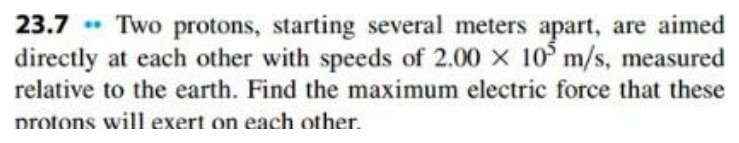
Homework 5 · Original question 23.7 · page 1 · Open full-size screenshot ↗ Two protons start far apart, each moving at 2.00 × 10⁵ m/s toward the other in the Earth frame; mₚ = 1.673 × 10⁻²⁷ kg. Find their maximum repulsive force.
q₁ q₂ r Separation between charges +e → ← +e Both initially 2.00 × 10⁵ m/s Diagram for 23.7: +e →; ← +e; Both initially 2.00 × 10⁵ m/s. Show worked solution Tesselate explanation
Identify Both protons contribute kinetic energy, and both stop momentarily at closest approach.
Set up K t o t a l = 2 ( 1 2 m p v 2 ) = m p v 2 = k e 2 / r m i n ; F m a x = k e 2 / r m i n 2 K_{total}=2(\tfrac12m_pv^2)=m_pv^2=k e^2/r_{min};\ F_{max}=ke^2/r_{min}^2 K t o t a l = 2 ( 2 1 m p v 2 ) = m p v 2 = k e 2 / r min ; F ma x = k e 2 / r min 2 .
Execute r m i n = 3.45 × 10 − 12 m ; F m a x = 1.94 × 10 − 5 N r_{min}=3.45\times10^{-12}\ \mathrm m;\ F_{max}=1.94\times10^{-5}\ \mathrm N r min = 3.45 × 1 0 − 12 m ; F ma x = 1.94 × 1 0 − 5 N .
Evaluate Using only one proton’s kinetic energy would give twice the separation and one-quarter the force.
Maximum force 1.94 × 10⁻⁵ N.
Show original textbook-solution screenshot · 23.7 Expand to load the cropped original solution from the signed-in reference library.
Textbook solutions manual · problem 23.7 Page 118 ↗ Original solution screenshots require Tesselate sign-in. Homework 5 · 23.8 Energy of three equal charges Supporting · Potential & energy Original question screenshot Cropped to question 23.8, with its diagrams and any continuation included. Click an image to enlarge.
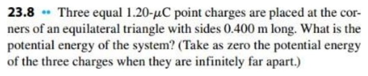
Homework 5 · Original question 23.8 · page 1 · Open full-size screenshot ↗ Three charges q = +1.20 µC occupy an equilateral triangle of side a = 0.400 m. Find the energy relative to infinite separation.
r₁ r₂ base Each q = +1.20 µC All sides a = 0.400 m 3 distinct pairs Diagram for 23.8: Each q = +1.20 µC; All sides a = 0.400 m; 3 distinct pairs. Show worked solution Tesselate explanation
Identify Count distinct pairs once: there are three.
Set up U = ∑ i < j k q i q j / r i j = 3 k q 2 / a U=\sum_{i<j}kq_iq_j/r_{ij}=3kq^2/a U = ∑ i < j k q i q j / r ij = 3 k q 2 / a .
Execute U = 3 ( 8.988 × 10 9 ) ( 1.20 × 10 − 6 ) 2 / 0.400 = 0.0971 J U=3(8.988\times10^9)(1.20\times10^{-6})^2/0.400=0.0971\ \mathrm J U = 3 ( 8.988 × 1 0 9 ) ( 1.20 × 1 0 − 6 ) 2 /0.400 = 0.0971 J .
Evaluate The energy is positive: external work is required to assemble repelling charges.
0.0971 J.
Show original textbook-solution screenshot · 23.8 Expand to load the cropped original solution from the signed-in reference library.
Textbook solutions manual · problem 23.8 Page 118 ↗ Original solution screenshots require Tesselate sign-in. Homework 5 · 23.19 Potentials at two points Supporting · Potential & energy Original question screenshot Cropped to question 23.19, with its diagrams and any continuation included. Click an image to enlarge.
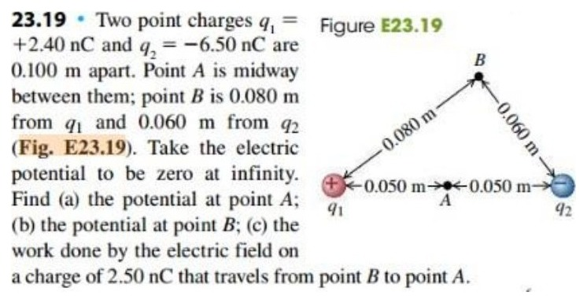
Homework 5 · Original question 23.19 · page 1 · Open full-size screenshot ↗ q₁ = +2.40 nC and q₂ = −6.50 nC are 0.100 m apart. A is their midpoint; B is 0.0800 m from q₁ and 0.0600 m from q₂. Find Vₐ, Vᵦ, and electric work moving +2.50 nC from B to A.
r₁ r₂ base A: 0.050 m from each B: r₁ = 0.080 m B: r₂ = 0.060 m Diagram for 23.19: A: 0.050 m from each; B: r₁ = 0.080 m; B: r₂ = 0.060 m. Show worked solution Tesselate explanation
Identify Potential is a signed scalar sum; work uses start minus finish.
Set up V = k ( q 1 / r 1 + q 2 / r 2 ) ; W B → A = q t ( V B − V A ) V=k(q_1/r_1+q_2/r_2);\ W_{B\to A}=q_t(V_B-V_A) V = k ( q 1 / r 1 + q 2 / r 2 ) ; W B → A = q t ( V B − V A ) .
Execute V A = − 737 V ; V B = − 704 V ; W = ( 2.50 × 10 − 9 ) ( 32.96 ) = 8.24 × 10 − 8 J V_A=-737\ \mathrm V;\ V_B=-704\ \mathrm V;\ W=(2.50\times10^{-9})(32.96)=8.24\times10^{-8}\ \mathrm J V A = − 737 V ; V B = − 704 V ; W = ( 2.50 × 1 0 − 9 ) ( 32.96 ) = 8.24 × 1 0 − 8 J .
Evaluate The positive test charge moves to lower potential, so the field does positive work.
Vₐ = −737 V; Vᵦ = −704 V; W = +8.24 × 10⁻⁸ J.
Show original textbook-solution screenshot · 23.19 Expand to load the cropped original solution from the signed-in reference library.
Textbook solutions manual · problem 23.19 Page 123 ↗ Original solution screenshots require Tesselate sign-in. Homework 5 · 23.27 Electron on a charged ring axis Supporting · Potential & energy Original question screenshot Cropped to question 23.27, with its diagrams and any continuation included. Click an image to enlarge.
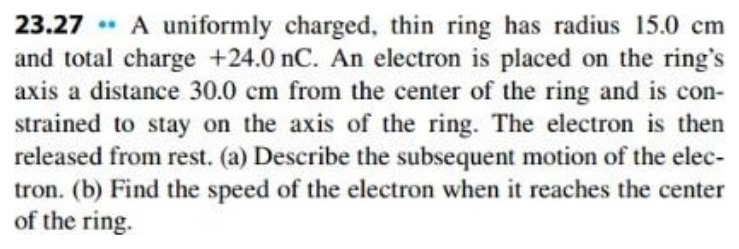
Homework 5 · Original question 23.27 · page 2 · Open full-size screenshot ↗ Ring radius R = 0.150 m, charge Q = +24.0 nC. An electron starts at rest on its axis, x₀ = 0.300 m; constrain motion to the axis. Describe motion and find the speed through the centre.
Ring e⁻ x₀ R R = 0.150 m Q = +24.0 nC Electron at x₀ = 0.300 m Diagram for 23.27: R = 0.150 m; Q = +24.0 nC; Electron at x₀ = 0.300 m. Show worked solution Tesselate explanation
Identify The attractive force restores the electron toward the ring plane.
Set up V ( x ) = k Q / R 2 + x 2 ; 1 2 m e v 2 = e [ V ( 0 ) − V ( x 0 ) ] V(x)=kQ/\sqrt{R^2+x^2};\ \tfrac12m_ev^2=e[V(0)-V(x_0)] V ( x ) = k Q / R 2 + x 2 ; 2 1 m e v 2 = e [ V ( 0 ) − V ( x 0 )] .
Execute V ( 0 ) = 1438 V , V ( x 0 ) = 643 V ; v = 2 e ( 795 ) / m e = 1.67 × 10 7 m / s V(0)=1438\ \mathrm V,\ V(x_0)=643\ \mathrm V;\ v=\sqrt{2e(795)/m_e}=1.67\times10^7\ \mathrm{m/s} V ( 0 ) = 1438 V , V ( x 0 ) = 643 V ; v = 2 e ( 795 ) / m e = 1.67 × 1 0 7 m/s .
Evaluate It oscillates between ±0.300 m, fastest at the centre. This finite-amplitude motion is not simple harmonic because force is not proportional to x.
Oscillatory motion; centre speed 1.67 × 10⁷ m/s.
Show original textbook-solution screenshots · 23.29 Expand to load the cropped original solution from the signed-in reference library.
Textbook solutions manual · problem 23.29 Page 126 ↗ Page 127 ↗ Original solution screenshots require Tesselate sign-in. Homework 6 · 23.44 Electric field from a potential Supporting · Potential & energy Original question screenshot Cropped to question 23.44, with its diagrams and any continuation included. Click an image to enlarge.
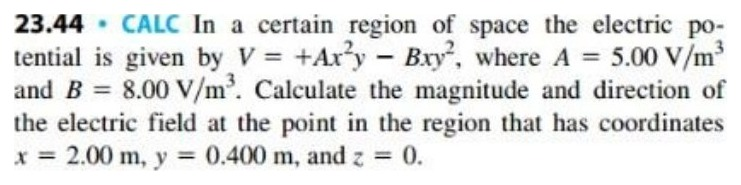
Homework 6 · Original question 23.44 · page 1 · Open full-size screenshot ↗ V = Ax²y − Bxy², with A = 5.00 V/m³ and B = 8.00 V/m³. Evaluate at (2.00, 0.400, 0) m. Find E components, magnitude and direction.
x y z i, j, k right-handed axes Ex = −6.72 V/m Ey = −7.20 V/m Ez = 0 Diagram for 23.44: Ex = −6.72 V/m; Ey = −7.20 V/m; Ez = 0. Show worked solution Tesselate explanation
Identify Take the negative gradient, differentiating one coordinate at a time.
Set up E x = − 2 A x y + B y 2 ; E y = − A x 2 + 2 B x y ; E z = 0 E_x=-2Axy+By^2;\ E_y=-Ax^2+2Bxy;\ E_z=0 E x = − 2 A x y + B y 2 ; E y = − A x 2 + 2 B x y ; E z = 0 .
Execute E x = − 8 + 1.28 = − 6.72 ; E y = − 20 + 12.8 = − 7.20 V / m E_x=-8+1.28=-6.72;\ E_y=-20+12.8=-7.20\ \mathrm{V/m} E x = − 8 + 1.28 = − 6.72 ; E y = − 20 + 12.8 = − 7.20 V/m .
∣ E ∣ = 6.72 2 + 7.20 2 = 9.85 V / m |E|=\sqrt{6.72^2+7.20^2}=9.85\ \mathrm{V/m} ∣ E ∣ = 6.7 2 2 + 7.2 0 2 = 9.85 V/m ; angle
= 226.97 ∘ =226.97^\circ = 226.9 7 ∘ from +x.
Evaluate Both components are negative, so the vector is in quadrant III, not quadrant I.
E = (−6.72 i − 7.20 j) V/m; 9.85 V/m at 227°.
Show original textbook-solution screenshot · 23.44 Expand to load the cropped original solution from the signed-in reference library.
Textbook solutions manual · problem 23.44 Page 132 ↗ Original solution screenshots require Tesselate sign-in. Homework 6 · 23.55 Nonuniform field in a diode Supporting · Potential & energy Original question screenshot Cropped to question 23.55, with its diagrams and any continuation included. Click an image to enlarge.
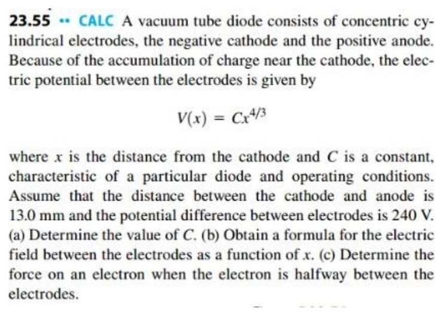
Homework 6 · Original question 23.55 · page 1 · Open full-size screenshot ↗ V(x) = Cx^(4/3); cathode x = 0, anode x = d = 0.0130 m; anode voltage 240 V. Find C, E(x), and electron force at x = d/2.
− + E 0 d Cathode: x = 0 Anode: x = 0.013 m E ← ; electron force → Diagram for 23.55: Cathode: x = 0; Anode: x = 0.013 m; E ← ; electron force →. Show worked solution Tesselate explanation
Identify Differentiate V rather than assuming a uniform 240/d field.
Set up C = 240 / d 4 / 3 ; E x = − d V / d x = − 4 3 C x 1 / 3 ; F x = − e E x C=240/d^{4/3};\ E_x=-dV/dx=-\tfrac43Cx^{1/3};\ F_x=-eE_x C = 240/ d 4/3 ; E x = − d V / d x = − 3 4 C x 1/3 ; F x = − e E x .
Execute C = 7.85 × 10 4 V / m 4 / 3 ; E x = − ( 1.047 × 10 5 ) x 1 / 3 V / m C=7.85\times10^4\ \mathrm{V/m^{4/3}};\ E_x=-(1.047\times10^5)x^{1/3}\ \mathrm{V/m} C = 7.85 × 1 0 4 V/ m 4/3 ; E x = − ( 1.047 × 1 0 5 ) x 1/3 V/m (x in metres). At 0.00650 m,
E x = − 1.954 × 10 4 V / m E_x=-1.954\times10^4\ \mathrm{V/m} E x = − 1.954 × 1 0 4 V/m and
F x = + 3.13 × 10 − 15 N F_x=+3.13\times10^{-15}\ \mathrm N F x = + 3.13 × 1 0 − 15 N .
Evaluate Field points toward the cathode; the negative electron feels force toward the anode.
C = 7.85 × 10⁴ V/m^(4/3); midpoint force +3.13 × 10⁻¹⁵ N.
Show original textbook-solution screenshot · 23.55 Expand to load the cropped original solution from the signed-in reference library.
Textbook solutions manual · problem 23.55 Page 139 ↗ Original solution screenshots require Tesselate sign-in. Homework 6 · 23.59 Hanging charge between plates Supporting · Angle & tilt preparation Original question screenshot Cropped to question 23.59, with its diagrams and any continuation included. Click an image to enlarge.
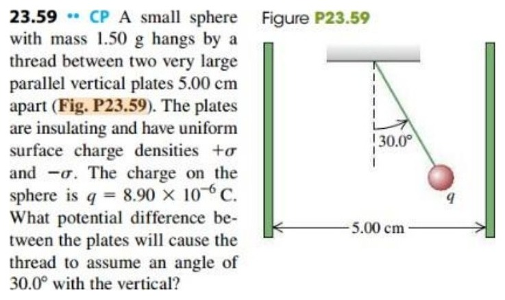
Homework 6 · Original question 23.59 · page 1 · Open full-size screenshot ↗ A 1.50 g ball with q = +8.90 µC hangs at 30.0° from vertical between plates separated by d = 0.0500 m. Find the potential-difference magnitude.
mg qE T θ θ = 30° qE horizontal mg downward Diagram for 23.59: θ = 30°; qE horizontal; mg downward. Show worked solution Tesselate explanation
Identify Divide horizontal by vertical force balance.
Set up T sin θ = q E , T cos θ = m g ; E = m g tan θ / q ; ∣ Δ V ∣ = E d T\sin\theta=qE,\ T\cos\theta=mg;\ E=mg\tan\theta/q;\ |\Delta V|=Ed T sin θ = q E , T cos θ = m g ; E = m g tan θ / q ; ∣Δ V ∣ = E d .
Execute E = ( 0.00150 ) ( 9.80 ) tan 30 ∘ / ( 8.90 × 10 − 6 ) = 954 N / C ; ∣ Δ V ∣ = 47.7 V E=(0.00150)(9.80)\tan30^\circ/(8.90\times10^{-6})=954\ \mathrm{N/C};\ |\Delta V|=47.7\ \mathrm V E = ( 0.00150 ) ( 9.80 ) tan 3 0 ∘ / ( 8.90 × 1 0 − 6 ) = 954 N/C ; ∣Δ V ∣ = 47.7 V .
Evaluate The positive ball deflects along E, toward the lower-potential plate.
47.7 V.
Show original textbook-solution screenshot · 23.59 Expand to load the cropped original solution from the signed-in reference library.
Textbook solutions manual · problem 23.59 Page 140 ↗ Original solution screenshots require Tesselate sign-in. Homework 6 · 24.1 Vacuum parallel plates Supporting · Dielectric changes Original question screenshot Cropped to question 24.1, with its diagrams and any continuation included. Click an image to enlarge.
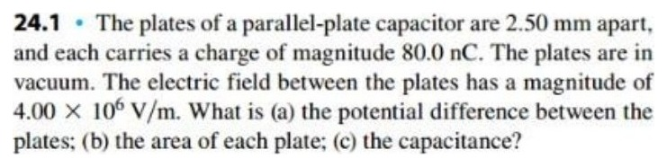
Homework 6 · Original question 24.1 · page 1 · Open full-size screenshot ↗ Plate gap d = 2.50 mm; charge magnitude Q = 80.0 nC on each plate; field E = 4.00 × 10⁶ V/m. Find voltage, plate area and capacitance.
+ − E d Gap d = 2.50 mm Q = ±80.0 nC E = 4.00 × 10⁶ V/m Diagram for 24.1: Gap d = 2.50 mm; Q = ±80.0 nC; E = 4.00 × 10⁶ V/m. Show worked solution Tesselate explanation
Identify Use the field between two oppositely charged plates.
Set up V = E d ; A = Q / ( ε 0 E ) ; C = Q / V V=Ed;\ A=Q/(\varepsilon_0 E);\ C=Q/V V = E d ; A = Q / ( ε 0 E ) ; C = Q / V .
Execute V = 1.00 × 10 4 V ; A = 2.26 × 10 − 3 m 2 ; C = 8.00 × 10 − 12 F V=1.00\times10^4\ \mathrm V;\ A=2.26\times10^{-3}\ \mathrm{m^2};\ C=8.00\times10^{-12}\ \mathrm F V = 1.00 × 1 0 4 V ; A = 2.26 × 1 0 − 3 m 2 ; C = 8.00 × 1 0 − 12 F .
Evaluate C also equals ε₀A/d. Q is the magnitude on one plate, not the sum of magnitudes.
10.0 kV; 22.6 cm²; 8.00 pF.
Show original textbook-solution screenshot · 24.1 Expand to load the cropped original solution from the signed-in reference library.
Textbook solutions manual · problem 24.1 Page 158 ↗ Original solution screenshots require Tesselate sign-in. Homework 6 · 24.3 Capacitor geometry and field Supporting · Dielectric changes Original question screenshot Cropped to question 24.3, with its diagrams and any continuation included. Click an image to enlarge.
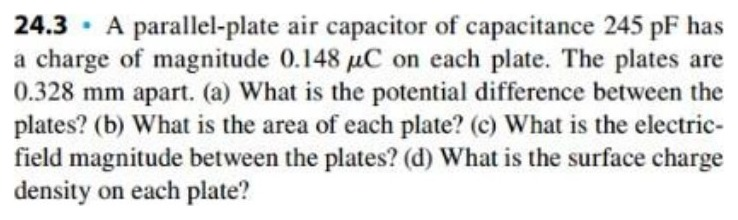
Homework 6 · Original question 24.3 · page 2 · Open full-size screenshot ↗ Air capacitor C = 245 pF, Q = 0.148 µC, separation d = 0.328 mm. Find voltage, area, field magnitude and surface charge density.
+ − E d C = 245 pF d = 0.328 mm Q = ±0.148 µC Diagram for 24.3: C = 245 pF; d = 0.328 mm; Q = ±0.148 µC. Show worked solution Tesselate explanation
Identify Combine Q = CV with C = ε₀A/d.
Set up V = Q / C ; A = C d / ε 0 ; E = V / d ; ∣ σ ∣ = Q / A V=Q/C;\ A=Cd/\varepsilon_0;\ E=V/d;\ |\sigma|=Q/A V = Q / C ; A = C d / ε 0 ; E = V / d ; ∣ σ ∣ = Q / A .
Execute V = 604 V ; A = 9.08 × 10 − 3 m 2 ; E = 1.84 × 10 6 V / m ; ∣ σ ∣ = 1.63 × 10 − 5 C / m 2 V=604\ \mathrm V;\ A=9.08\times10^{-3}\ \mathrm{m^2};\ E=1.84\times10^6\ \mathrm{V/m};\ |\sigma|=1.63\times10^{-5}\ \mathrm{C/m^2} V = 604 V ; A = 9.08 × 1 0 − 3 m 2 ; E = 1.84 × 1 0 6 V/m ; ∣ σ ∣ = 1.63 × 1 0 − 5 C/ m 2 .
Evaluate The two plate densities have opposite signs. Check σ = ε₀E independently.
604 V; 90.8 cm²; 1.84 × 10⁶ V/m; ±1.63 × 10⁻⁵ C/m².
Show original textbook-solution screenshot · 24.3 Expand to load the cropped original solution from the signed-in reference library.
Textbook solutions manual · problem 24.3 Page 159 ↗ Original solution screenshots require Tesselate sign-in. Homework 6 & 7 · 24.7 Changing capacitor separation Supporting · Dielectric changes Original question screenshot Cropped to question 24.7, with its diagrams and any continuation included. Click an image to enlarge.
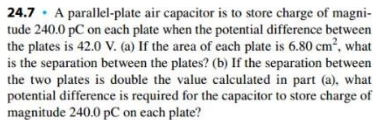
Homework 6 & 7 · Original question 24.7 · page 2 · Open full-size screenshot ↗ Air capacitor: Q = 240 pC, V = 42.0 V, plate area A = 6.80 cm². Find gap d, then voltage for the same Q if d doubles.
+ − E d A = 6.80 cm² Fixed Q = 240 pC d doubles → V doubles Diagram for 24.7: A = 6.80 cm²; Fixed Q = 240 pC; d doubles → V doubles. Show worked solution Tesselate explanation
Identify At fixed charge, doubling separation halves capacitance.
Set up C = Q / V = 5.71 p F ; d = ε 0 A / C ; V ′ = Q / ( C / 2 ) = 2 V C=Q/V=5.71\ \mathrm{pF};\ d=\varepsilon_0 A/C;\ V'=Q/(C/2)=2V C = Q / V = 5.71 pF ; d = ε 0 A / C ; V ′ = Q / ( C /2 ) = 2 V .
Execute d = ( 8.854 × 10 − 12 ) ( 6.80 × 10 − 4 ) / ( 5.714 × 10 − 12 ) = 1.05 × 10 − 3 m ; V ′ = 84.0 V d=(8.854\times10^{-12})(6.80\times10^{-4})/(5.714\times10^{-12})=1.05\times10^{-3}\ \mathrm m;\ V'=84.0\ \mathrm V d = ( 8.854 × 1 0 − 12 ) ( 6.80 × 1 0 − 4 ) / ( 5.714 × 1 0 − 12 ) = 1.05 × 1 0 − 3 m ; V ′ = 84.0 V .
Evaluate The field stays constant because Q/A is unchanged; voltage grows with gap. This question appears in both Homework 6 and 7.
d = 1.05 mm; new voltage 84.0 V.
Show original textbook-solution screenshot · 24.7 Expand to load the cropped original solution from the signed-in reference library.
Textbook solutions manual · problem 24.7 Page 160 ↗ Original solution screenshots require Tesselate sign-in. Homework 7 · 24.8 Design an air capacitor Supporting · Dielectric changes Original question screenshot Cropped to question 24.8, with its diagrams and any continuation included. Click an image to enlarge.
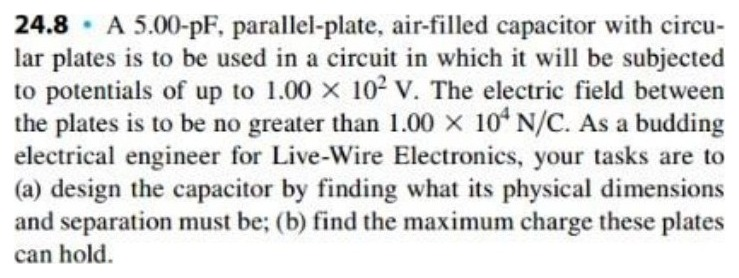
Homework 7 · Original question 24.8 · page 1 · Open full-size screenshot ↗ Circular air capacitor C = 5.00 pF must withstand 100 V while E ≤ 1.00 × 10⁴ N/C. Find minimum gap, minimum plate radius, and maximum charge at 100 V.
+ − E d C = 5.00 pF E ≤ 10⁴ N/C Circular plates: radius r Diagram for 24.8: C = 5.00 pF; E ≤ 10⁴ N/C; Circular plates: radius r. Show worked solution Tesselate explanation
Identify Field limit sets d; required capacitance then sets area.
Set up d m i n = V / E m a x ; r m i n = C d m i n / ( π ε 0 ) ; Q m a x = C V d_{min}=V/E_{max};\ r_{min}=\sqrt{Cd_{min}/(\pi\varepsilon_0)};\ Q_{max}=CV d min = V / E ma x ; r min = C d min / ( π ε 0 ) ; Q ma x = C V .
Execute d m i n = 0.0100 m ; r m i n = 0.0424 m ; Q m a x = 5.00 × 10 − 10 C d_{min}=0.0100\ \mathrm m;\ r_{min}=0.0424\ \mathrm m;\ Q_{max}=5.00\times10^{-10}\ \mathrm C d min = 0.0100 m ; r min = 0.0424 m ; Q ma x = 5.00 × 1 0 − 10 C .
Evaluate Increasing d beyond its minimum requires larger plates to preserve C.
10.0 mm gap; 4.24 cm radius; 500 pC.
Show original textbook-solution screenshots · 24.6 Expand to load the cropped original solution from the signed-in reference library.
Textbook solutions manual · problem 24.6 Page 159 ↗ Page 160 ↗ Original solution screenshots require Tesselate sign-in. Homework 7 · 24.12 Cylindrical capacitor Supporting · Potential & energy Original question screenshot Cropped to question 24.12, with its diagrams and any continuation included. Click an image to enlarge.
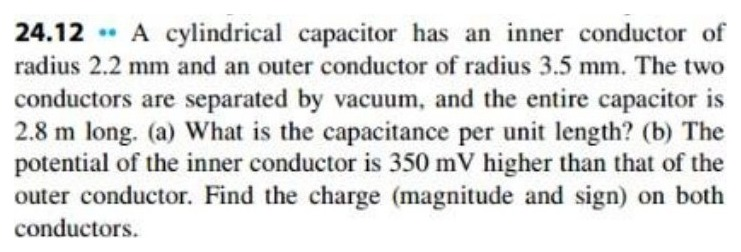
Homework 7 · Original question 24.12 · page 1 · Open full-size screenshot ↗ Coaxial air capacitor: inner radius a = 2.20 mm, outer inner radius b = 3.50 mm, length L = 2.80 m. Inner conductor is 0.350 V higher. Find capacitance per length and charge on each conductor.
a b c / R r a = 2.20 mm b = 3.50 mm L = 2.80 m Diagram for 24.12: a = 2.20 mm; b = 3.50 mm; L = 2.80 m. Show worked solution Tesselate explanation
Identify Integrate the radial field between coaxial conductors.
Set up V = λ ln ( b / a ) / ( 2 π ε 0 ) ; C / L = 2 π ε 0 / ln ( b / a ) ; Q = ( C / L ) L V V=\lambda\ln(b/a)/(2\pi\varepsilon_0);\ C/L=2\pi\varepsilon_0/\ln(b/a);\ Q=(C/L)LV V = λ ln ( b / a ) / ( 2 π ε 0 ) ; C / L = 2 π ε 0 / ln ( b / a ) ; Q = ( C / L ) L V .
Execute C / L = 1.20 × 10 − 10 F / m ; Q = 1.17 × 10 − 10 C C/L=1.20\times10^{-10}\ \mathrm{F/m};\ Q=1.17\times10^{-10}\ \mathrm C C / L = 1.20 × 1 0 − 10 F/m ; Q = 1.17 × 1 0 − 10 C .
Evaluate The inner conductor is positive and the outer negative; use the inner surface radius of the outer cylinder.
120 pF/m; inner +117 pC, outer −117 pC.
Show original textbook-solution screenshot · 24.10 Expand to load the cropped original solution from the signed-in reference library.
Textbook solutions manual · problem 24.10 Page 161 ↗ Original solution screenshots require Tesselate sign-in. Homework 7 · 24.14 Series and parallel capacitors Core · Capacitor networks Original question screenshot Cropped to question 24.14, with its diagrams and any continuation included. Click an image to enlarge.
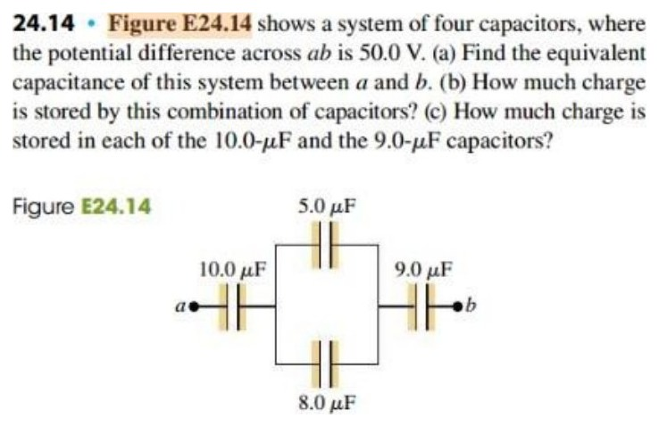
Homework 7 · Original question 24.14 · page 1 · Open full-size screenshot ↗ Network A—10 µF—(5 µF in parallel with 8 µF)—9 µF—B; Vₐᵦ = 50.0 V. Find equivalent capacitance, total stored plate charge, and charges on the 10 and 9 µF capacitors.
10 5 8 9 Capacitances in µF 10 µF 5 ∥ 8 = 13 µF 9 µF Diagram for 24.14: 10 µF; 5 ∥ 8 = 13 µF; 9 µF. Show worked solution Tesselate explanation
Identify Combine the middle parallel group before the series chain.
Set up C p = 5 + 8 = 13 μ F ; C e q − 1 = 10 − 1 + 13 − 1 + 9 − 1 C_p=5+8=13\ \mu\mathrm F;\ C_{eq}^{-1}=10^{-1}+13^{-1}+9^{-1} C p = 5 + 8 = 13 μ F ; C e q − 1 = 1 0 − 1 + 1 3 − 1 + 9 − 1 (capacitances in µF).
Execute C e q = 3.47 μ F ; Q = C e q V = 174 μ C C_{eq}=3.47\ \mu\mathrm F;\ Q=C_{eq}V=174\ \mu\mathrm C C e q = 3.47 μ F ; Q = C e q V = 174 μ C . The series capacitors each carry this charge:
Q 10 = Q 9 = 174 μ C Q_{10}=Q_9=174\ \mu\mathrm C Q 10 = Q 9 = 174 μ C .
Evaluate The 5 and 8 µF branch charges add to the series charge; they are not individually equal to it.
Ceq = 3.47 µF; total, Q₁₀ and Q₉ = 174 µC each.
Show original textbook-solution screenshot · 24.14 Expand to load the cropped original solution from the signed-in reference library.
Textbook solutions manual · problem 24.14 Page 162 ↗ Original solution screenshots require Tesselate sign-in. Homework 7 · 24.24 Work pulling plates apart Supporting · Dielectric changes Original question screenshot Cropped to question 24.24, with its diagrams and any continuation included. Click an image to enlarge.
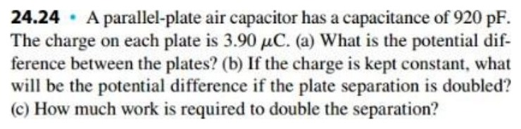
Homework 7 · Original question 24.24 · page 2 · Open full-size screenshot ↗ Isolated capacitor C = 920 pF carries Q = 3.90 µC. Double the gap, keeping Q constant. Find original and final voltages and external work.
+ − E d Isolated: fixed Q d → 2d C → C/2 Diagram for 24.24: Isolated: fixed Q; d → 2d; C → C/2. Show worked solution Tesselate explanation
Identify Use U = Q²/(2C), since charge is fixed.
Set up V i = Q / C ; C f = C / 2 ; V f = 2 V i ; W e x t = U f − U i = Q 2 / ( 2 C ) V_i=Q/C;\ C_f=C/2;\ V_f=2V_i;\ W_{ext}=U_f-U_i=Q^2/(2C) V i = Q / C ; C f = C /2 ; V f = 2 V i ; W e x t = U f − U i = Q 2 / ( 2 C ) .
Execute V i = 4.24 k V ; V f = 8.48 k V ; W e x t = 8.27 × 10 − 3 J V_i=4.24\ \mathrm{kV};\ V_f=8.48\ \mathrm{kV};\ W_{ext}=8.27\times10^{-3}\ \mathrm J V i = 4.24 kV ; V f = 8.48 kV ; W e x t = 8.27 × 1 0 − 3 J .
Evaluate Positive work separates attracting plates; the energy doubles.
4.24 kV → 8.48 kV; external work 8.27 mJ.
Show original textbook-solution screenshot · 24.24 Expand to load the cropped original solution from the signed-in reference library.
Textbook solutions manual · problem 24.24 Page 167 ↗ Original solution screenshots require Tesselate sign-in. Homework 7 · 24.36 Build a paper capacitor Supporting · Dielectric changes Original question screenshot Cropped to question 24.36, with its diagrams and any continuation included. Click an image to enlarge.
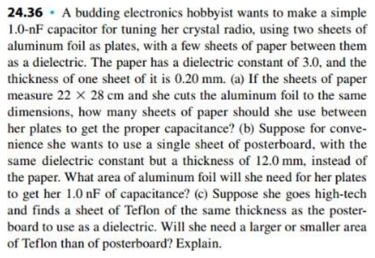
Homework 7 · Original question 24.36 · page 2 · Open full-size screenshot ↗ Target C = 1.00 nF. Paper κ = 3.0, sheet thickness 0.20 mm, plate dimensions 22 cm × 28 cm. Posterboard has thickness 12 mm and the same κ. Find paper-sheet count, posterboard plate area, and how replacing paper with lower-κ Teflon changes required area.
+ − E d Paper stack: d = nt κ = 3.0 A = 0.22 × 0.28 m² Diagram for 24.36: Paper stack: d = nt; κ = 3.0; A = 0.22 × 0.28 m². Show worked solution Tesselate explanation
Identify Stacked paper increases dielectric thickness; use C = κε₀A/d.
Set up n = κ ε 0 A / ( C t ) ; A b o a r d = C d / ( κ ε 0 ) n=\kappa\varepsilon_0 A/(Ct);\ A_{board}=Cd/(\kappa\varepsilon_0) n = κ ε 0 A / ( C t ) ; A b o a r d = C d / ( κ ε 0 ) .
Execute n = 3 ( 8.854 × 10 − 12 ) ( 0.22 ) ( 0.28 ) / [ ( 10 − 9 ) ( 0.00020 ) ] = 8.18 n=3(8.854\times10^{-12})(0.22)(0.28)/[(10^{-9})(0.00020)]=8.18 n = 3 ( 8.854 × 1 0 − 12 ) ( 0.22 ) ( 0.28 ) / [( 1 0 − 9 ) ( 0.00020 )] = 8.18 . Use about 8 sheets (1.02 nF).
A b o a r d = 0.452 m 2 A_{board}=0.452\ \mathrm{m^2} A b o a r d = 0.452 m 2 .
Evaluate An integer number of sheets gives an approximate target. For the same thickness and capacitance, lower κ requires larger area.
About 8 sheets; posterboard area 0.452 m²; Teflon needs more area.
No verified matching textbook-manual screenshot is available for this question. Use the worked solution above.
Homework 7 · 24.66 Half-filled dielectric capacitor Core · Bonus · dielectric combinations Original question screenshot Cropped to question 24.66, with its diagrams and any continuation included. Click an image to enlarge.
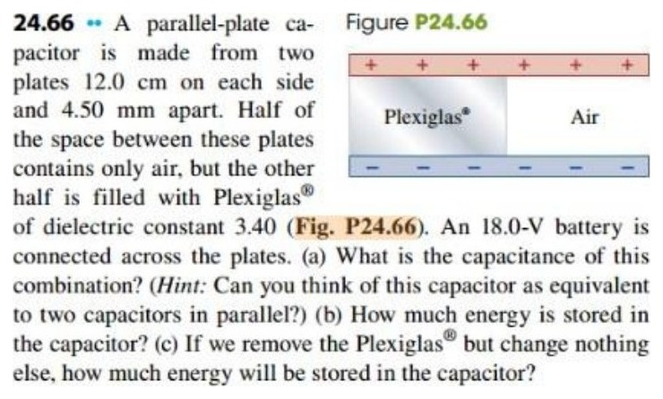
Homework 7 · Original question 24.66 · page 2 · Open full-size screenshot ↗ Square plates 0.120 m on a side, gap d = 4.50 mm; half the area contains Plexiglas κ = 3.40 and half air. Battery stays connected at 18.0 V. Find C, stored energy, and energy after removing the dielectric.
air κ Plate area viewed face-on Half area: air Half area: κ = 3.40 Battery holds 18.0 V Diagram for 24.66: Half area: air; Half area: κ = 3.40; Battery holds 18.0 V. Show worked solution Tesselate explanation
Identify Side-by-side areas are parallel capacitors at the same voltage.
Set up C = ε 0 A ( 1 + κ ) / ( 2 d ) ; U = C V 2 / 2 ; C 0 = ε 0 A / d C=\varepsilon_0 A(1+\kappa)/(2d);\ U=CV^2/2;\ C_0=\varepsilon_0 A/d C = ε 0 A ( 1 + κ ) / ( 2 d ) ; U = C V 2 /2 ; C 0 = ε 0 A / d .
Execute C = 62.3 p F ; U = 1.01 × 10 − 8 J C=62.3\ \mathrm{pF};\ U=1.01\times10^{-8}\ \mathrm J C = 62.3 pF ; U = 1.01 × 1 0 − 8 J . After removal
C 0 = 28.3 p F C_0=28.3\ \mathrm{pF} C 0 = 28.3 pF and
U 0 = 4.59 × 10 − 9 J U_0=4.59\times10^{-9}\ \mathrm J U 0 = 4.59 × 1 0 − 9 J .
Evaluate The battery fixes voltage, not charge. Using a series-dielectric formula would describe a different geometry.
62.3 pF; 10.1 nJ initially; 4.59 nJ after removal.
Show original textbook-solution screenshot · 24.64 Expand to load the cropped original solution from the signed-in reference library.
Textbook solutions manual · problem 24.64 Page 186 ↗ Original solution screenshots require Tesselate sign-in. Homework 7 · 24.68 Capacitive fuel gauge Core · Angle & tilt preparation Original question screenshot Cropped to question 24.68, with its diagrams and any continuation included. Click an image to enlarge.
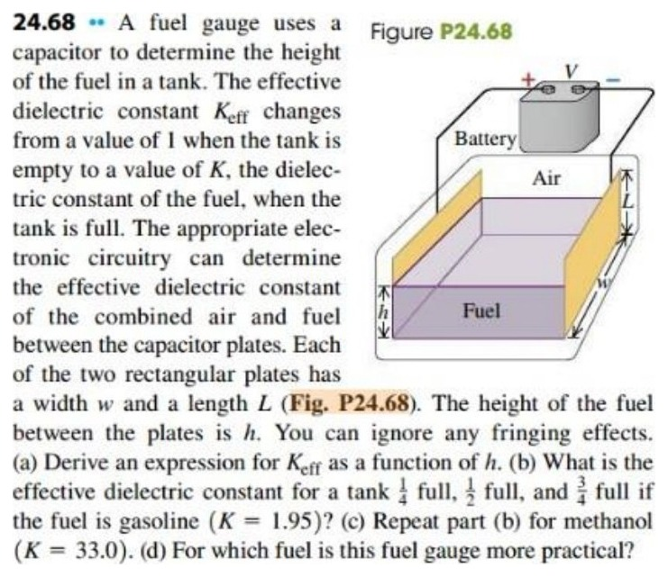
Homework 7 · Original question 24.68 · page 3 · Open full-size screenshot ↗ Vertical plates have width w, height L and gap d. Fuel fills height h; air above it. κ = 1.95 for gasoline or 33.0 for methanol. Derive effective dielectric constant; evaluate quarter, half and three-quarter full; compare sensitivity.
air fuel h L Total height L Fuel height h Air above fuel Diagram for 24.68: Total height L; Fuel height h; Air above fuel. Show worked solution Tesselate explanation
Identify Fuel and air areas contribute in parallel.
Set up C = ε 0 w ( L − h ) / d + κ ε 0 w h / d ; C / C 0 = κ e f f = 1 + ( κ − 1 ) h / L C=\varepsilon_0 w(L-h)/d+\kappa\varepsilon_0 wh/d;\ C/C_0=\kappa_{eff}=1+(\kappa-1)h/L C = ε 0 w ( L − h ) / d + κ ε 0 w h / d ; C / C 0 = κ e f f = 1 + ( κ − 1 ) h / L .
Execute For
h / L = 1 / 4 , 1 / 2 , 3 / 4 h/L=1/4,1/2,3/4 h / L = 1/4 , 1/2 , 3/4 : gasoline gives
1.2375 , 1.475 , 1.7125 1.2375,1.475,1.7125 1.2375 , 1.475 , 1.7125 ; methanol gives
9 , 17 , 25 9,17,25 9 , 17 , 25 .
Evaluate Both are linear in fill height in this ideal model. Methanol gives a larger capacitance change per unit height, making the change easier to resolve.
κeff = 1 + (κ − 1)h/L; methanol is more sensitive.
Show original textbook-solution screenshot · 24.66 Expand to load the cropped original solution from the signed-in reference library.
Textbook solutions manual · problem 24.66 Page 187 ↗ Original solution screenshots require Tesselate sign-in. Tutorial 4 · 1 Field from perpendicular infinite sheets Supporting · Gauss & conductors Original question screenshot Cropped to question 1, with its diagrams and any continuation included. Click an image to enlarge.
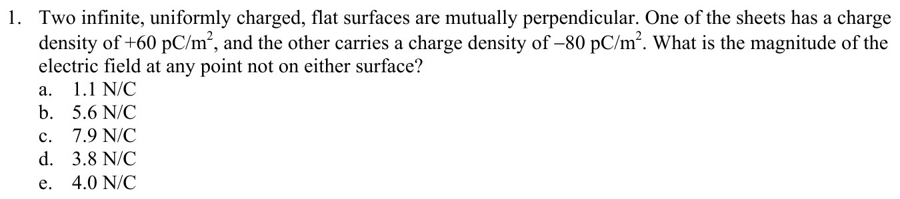
Tutorial 4 · Original question 1 · page 1 · Open full-size screenshot ↗ Two infinite sheets are perpendicular, carrying +60 pC/m² and −80 pC/m². Find the field magnitude away from either sheet.
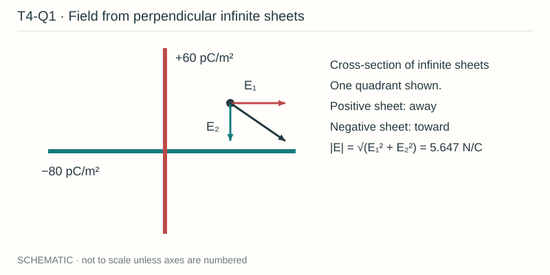
Schematic for field from perpendicular infinite sheets. Read with the worked steps; geometry is not necessarily to scale. Show worked solution Tesselate explanation
Find each sheet’s field A single nonconducting infinite sheet produces |σ|/(2ε₀) on either side.
E 1 = 60 × 10 − 12 2 ϵ 0 , E 2 = 80 × 10 − 12 2 ϵ 0 E_1=\frac{60\times10^{-12}}{2\epsilon_0},\quad E_2=\frac{80\times10^{-12}}{2\epsilon_0} E 1 = 2 ϵ 0 60 × 1 0 − 12 , E 2 = 2 ϵ 0 80 × 1 0 − 12 Add perpendicular components The directions are orthogonal in every region.
E = E 1 2 + E 2 2 = 100 × 10 − 12 2 ϵ 0 = 5.647 N / C E=\sqrt{E_1^2+E_2^2}=\frac{100\times10^{-12}}{2\epsilon_0}=5.647\,\mathrm{N/C} E = E 1 2 + E 2 2 = 2 ϵ 0 100 × 1 0 − 12 = 5.647 N/C E = 5.6 N / C (B) E=5.6\,\mathrm{N/C}\quad\text{(B)} E = 5.6 N/C (B) Signs change component directions across sheets, but the magnitude remains the same.
Show D2L tutorial solution The instructor’s posted solution, cropped to this question. Tutorial 5’s key uses P25.x labels for the matching questions.
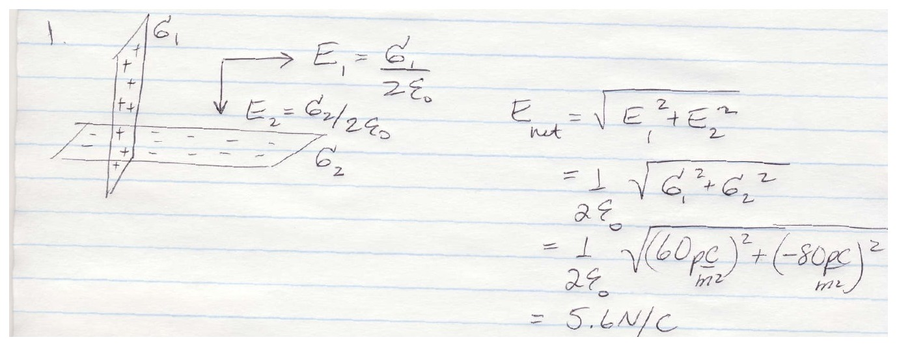
D2L posted Tutorial 4 solution · question 1 · PDF page 1 · D2L source ↗ Tutorial 4 · 2 Field inside a uniformly charged cylinder Supporting · Gauss & conductors Original question screenshot Cropped to question 2, with its diagrams and any continuation included. Click an image to enlarge.
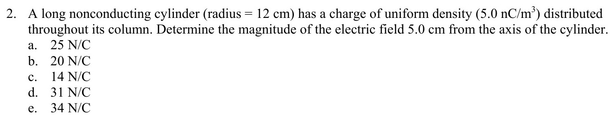
Tutorial 4 · Original question 2 · page 1 · Open full-size screenshot ↗ A long nonconducting cylinder has radius 12 cm and uniform density +5.0 nC/m³. Find E at radius 5.0 cm.
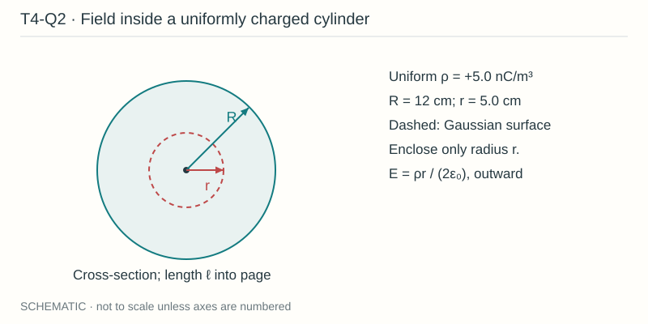
Schematic for field inside a uniformly charged cylinder. Read with the worked steps; geometry is not necessarily to scale. Show worked solution Tesselate explanation
Choose an interior Gaussian cylinder Since r < R, only charge inside radius r is enclosed.
Q e n c = ρ π r 2 ℓ Q_{\rm enc}=\rho\pi r^2\ell Q enc = ρ π r 2 ℓ Apply Gauss’s law Flux passes through the curved side only.
E ( 2 π r ℓ ) = ρ π r 2 ℓ ϵ 0 ⇒ E = ρ r 2 ϵ 0 E(2\pi r\ell)=\frac{\rho\pi r^2\ell}{\epsilon_0}\Rightarrow E=\frac{\rho r}{2\epsilon_0} E ( 2 π r ℓ ) = ϵ 0 ρ π r 2 ℓ ⇒ E = 2 ϵ 0 ρ r Evaluate Use r = 0.050 m.
E = 14.12 N / C E=14.12\,\mathrm{N/C} E = 14.12 N/C E ≈ 14 N / C (C), radially outward E\approx14\,\mathrm{N/C}\quad\text{(C), radially outward} E ≈ 14 N/C (C), radially outward Inside a uniformly charged cylinder the field grows linearly from zero at the axis.
Show D2L tutorial solution The instructor’s posted solution, cropped to this question. Tutorial 5’s key uses P25.x labels for the matching questions.
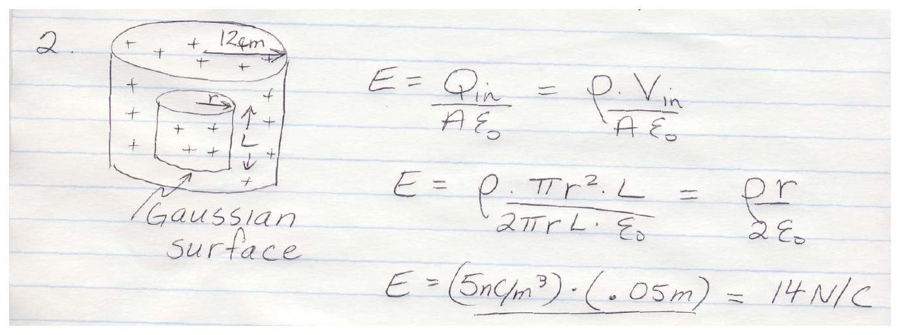
D2L posted Tutorial 4 solution · question 2 · PDF page 1 · D2L source ↗ Tutorial 4 · 3 Field outside a uniformly charged cylinder Supporting · Gauss & conductors Original question screenshot Cropped to question 3, with its diagrams and any continuation included. Click an image to enlarge.
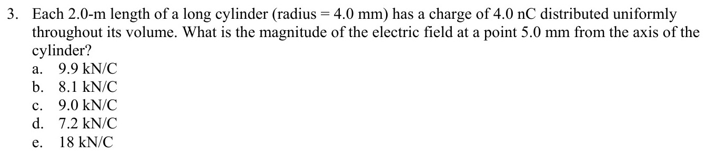
Tutorial 4 · Original question 3 · page 1 · Open full-size screenshot ↗ Each 2.0 m length of a long cylinder of radius 4.0 mm contains +4.0 nC uniformly. Find E at radius 5.0 mm.
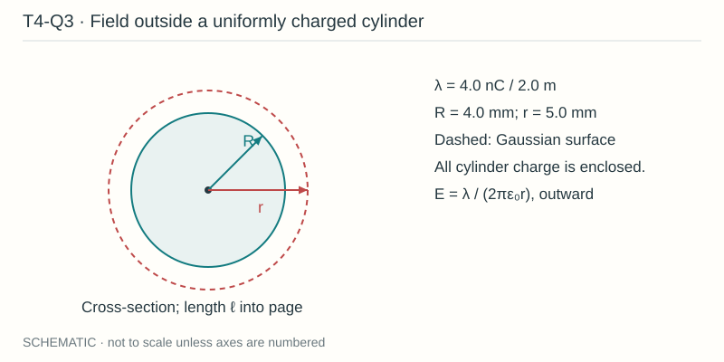
Schematic for field outside a uniformly charged cylinder. Read with the worked steps; geometry is not necessarily to scale. Show worked solution Tesselate explanation
Convert charge to charge per length The observation point is outside the cylinder.
λ = 4.0 n C 2.0 m = 2.0 × 10 − 9 C / m \lambda=\frac{4.0\,\mathrm{nC}}{2.0\,\mathrm m}=2.0\times10^{-9}\,\mathrm{C/m} λ = 2.0 m 4.0 nC = 2.0 × 1 0 − 9 C/m Apply exterior cylindrical Gauss law All charge within the Gaussian length is enclosed.
E = λ 2 π ϵ 0 r = 7.190 × 10 3 N / C E=\frac{\lambda}{2\pi\epsilon_0r}=7.190\times10^3\,\mathrm{N/C} E = 2 π ϵ 0 r λ = 7.190 × 1 0 3 N/C E = 7.2 k N / C (D), outward E=7.2\,\mathrm{kN/C}\quad\text{(D), outward} E = 7.2 kN/C (D), outward The result decreases as 1/r outside the cylinder and does not depend on its radius.
Show D2L tutorial solution The instructor’s posted solution, cropped to this question. Tutorial 5’s key uses P25.x labels for the matching questions.
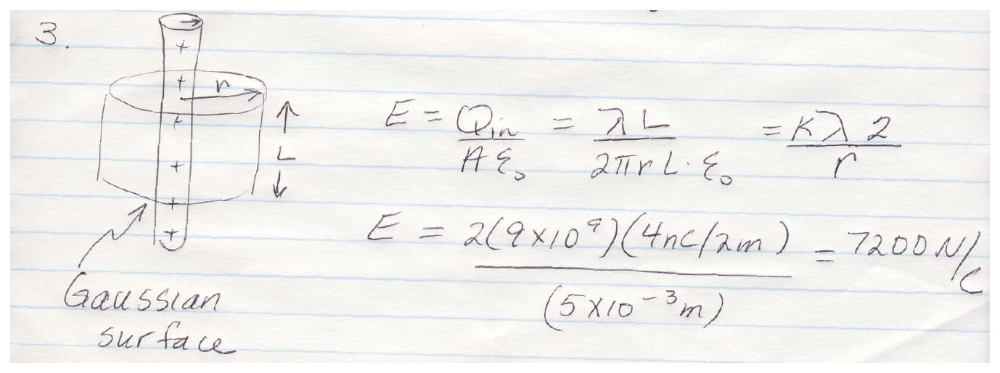
D2L posted Tutorial 4 solution · question 3 · PDF page 1 · D2L source ↗ Tutorial 4 · 4 Field inside a cylinder with quadratic density Supporting · Bonus · spherical charge Original question screenshot Cropped to question 4, with its diagrams and any continuation included. Click an image to enlarge.
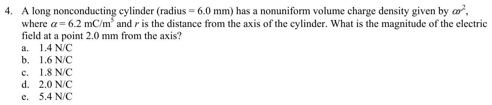
Tutorial 4 · Original question 4 · page 1 · Open full-size screenshot ↗ A long cylinder of radius 6.0 mm has volume density ρ(r) = αr² with α = 6.2 mC/m⁵. Find E at radius 2.0 mm.
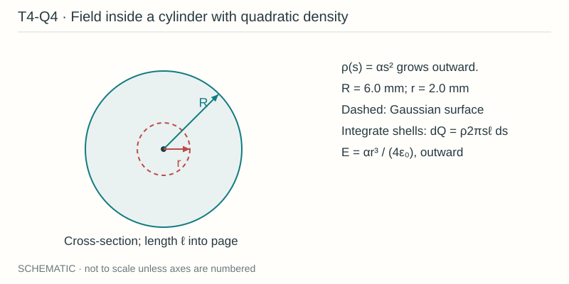
Schematic for field inside a cylinder with quadratic density. Read with the worked steps; geometry is not necessarily to scale. Show worked solution Tesselate explanation
Integrate enclosed charge Use a dummy radius s; density is not constant across the Gaussian volume.
Q e n c = ∫ 0 r α s 2 ( 2 π s ℓ ) d s = π α ℓ r 4 2 Q_{\rm enc}=\int_0^r\alpha s^2(2\pi s\ell)ds=\frac{\pi\alpha\ell r^4}{2} Q enc = ∫ 0 r α s 2 ( 2 π s ℓ ) d s = 2 π α ℓ r 4 Apply Gauss’s law The observation point is inside the cylinder.
E ( 2 π r ℓ ) = Q e n c ϵ 0 ⇒ E = α r 3 4 ϵ 0 E(2\pi r\ell)=\frac{Q_{\rm enc}}{\epsilon_0}\Rightarrow E=\frac{\alpha r^3}{4\epsilon_0} E ( 2 π r ℓ ) = ϵ 0 Q enc ⇒ E = 4 ϵ 0 α r 3 Convert units and evaluate α = 6.2×10⁻³ C/m⁵ and r = 2.0×10⁻³ m.
E = 1.4005 N / C E=1.4005\,\mathrm{N/C} E = 1.4005 N/C E = 1.4 N / C (A), outward E=1.4\,\mathrm{N/C}\quad\text{(A), outward} E = 1.4 N/C (A), outward The r³ dependence follows from enclosed charge proportional to r⁴ and flux area proportional to r.
Show D2L tutorial solution The instructor’s posted solution, cropped to this question. Tutorial 5’s key uses P25.x labels for the matching questions.
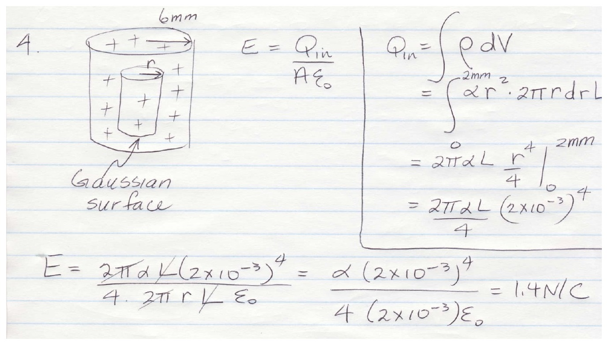
D2L posted Tutorial 4 solution · question 4 · PDF page 2 · D2L source ↗ Tutorial 4 · 5 Field within a charged cylindrical annulus Supporting · Gauss & conductors Original question screenshot Cropped to question 5, with its diagrams and any continuation included. Click an image to enlarge.
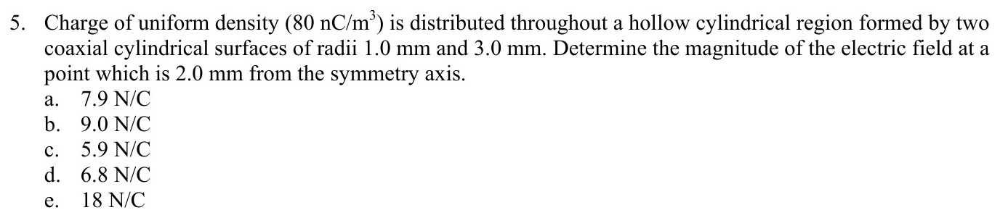
Tutorial 4 · Original question 5 · page 1 · Open full-size screenshot ↗ Uniform density +80 nC/m³ occupies a long cylindrical annulus between radii 1.0 mm and 3.0 mm. Find E at radius 2.0 mm.
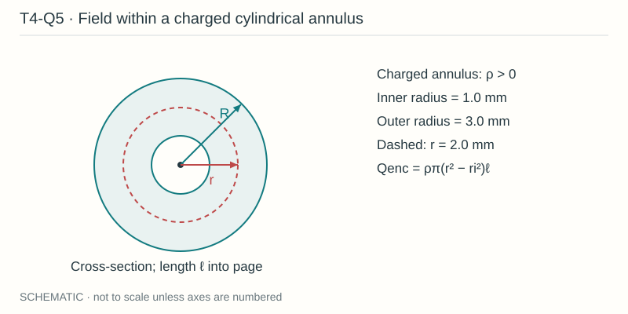
Schematic for field within a charged cylindrical annulus. Read with the worked steps; geometry is not necessarily to scale. Show worked solution Tesselate explanation
Enclose only occupied volume The central hollow region contributes no charge.
Q e n c = ρ π ( r 2 − r i 2 ) ℓ Q_{\rm enc}=\rho\pi(r^2-r_i^2)\ell Q enc = ρ π ( r 2 − r i 2 ) ℓ Apply Gauss’s law The point lies within the charged annulus.
E = ρ ( r 2 − r i 2 ) 2 ϵ 0 r E=\frac{\rho(r^2-r_i^2)}{2\epsilon_0r} E = 2 ϵ 0 r ρ ( r 2 − r i 2 ) Evaluate Use ri = 0.001 m and r = 0.002 m.
E = 6.776 N / C E=6.776\,\mathrm{N/C} E = 6.776 N/C E = 6.8 N / C (D), outward E=6.8\,\mathrm{N/C}\quad\text{(D), outward} E = 6.8 N/C (D), outward The expression tends to zero as r approaches the inner radius.
Show D2L tutorial solution The instructor’s posted solution, cropped to this question. Tutorial 5’s key uses P25.x labels for the matching questions.
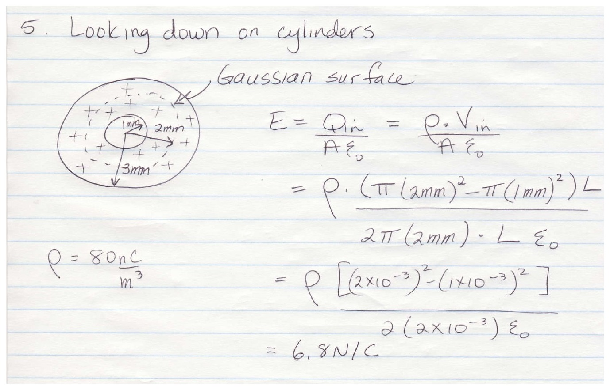
D2L posted Tutorial 4 solution · question 5 · PDF page 2 · D2L source ↗ Tutorial 4 · 6 Exterior field of two charged spherical shells Core · Gauss & conductors Original question screenshot Cropped to question 6, with its diagrams and any continuation included. Click an image to enlarge.
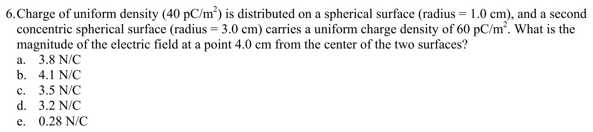
Tutorial 4 · Original question 6 · page 2 · Open full-size screenshot ↗ Concentric spherical surfaces have radii 1.0 cm and 3.0 cm, with uniform densities +40 pC/m² and +60 pC/m² respectively. Find E at r = 4.0 cm.
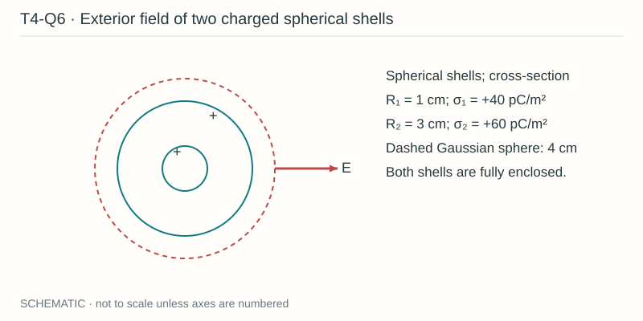
Schematic for exterior field of two charged spherical shells. Read with the worked steps; geometry is not necessarily to scale. Show worked solution Tesselate explanation
Convert surface densities to charges Both complete shells are enclosed.
Q e n c = 4 π ( σ 1 R 1 2 + σ 2 R 2 2 ) Q_{\rm enc}=4\pi(\sigma_1R_1^2+\sigma_2R_2^2) Q enc = 4 π ( σ 1 R 1 2 + σ 2 R 2 2 ) Apply spherical Gauss law The exterior field equals that of the total charge at the center.
E = Q e n c 4 π ϵ 0 r 2 = σ 1 R 1 2 + σ 2 R 2 2 ϵ 0 r 2 E=\frac{Q_{\rm enc}}{4\pi\epsilon_0r^2}=\frac{\sigma_1R_1^2+\sigma_2R_2^2}{\epsilon_0r^2} E = 4 π ϵ 0 r 2 Q enc = ϵ 0 r 2 σ 1 R 1 2 + σ 2 R 2 2 Evaluate Use metres and C/m².
E = 4.094 N / C E=4.094\,\mathrm{N/C} E = 4.094 N/C E = 4.1 N / C (B), outward E=4.1\,\mathrm{N/C}\quad\text{(B), outward} E = 4.1 N/C (B), outward Both positive shells contribute outward fields; surface area must be included before summing charges.
Show D2L tutorial solution The instructor’s posted solution, cropped to this question. Tutorial 5’s key uses P25.x labels for the matching questions.
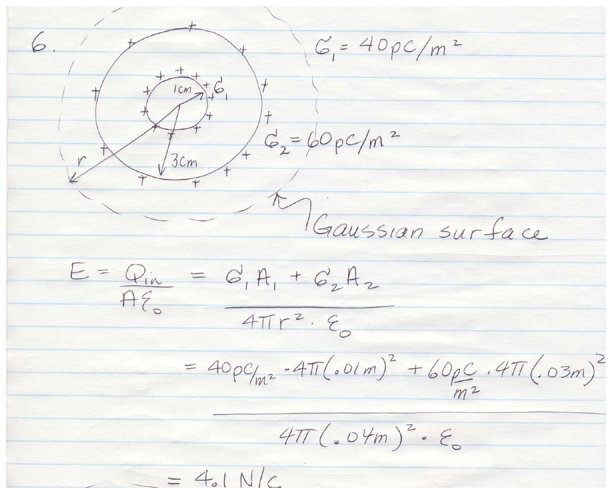
D2L posted Tutorial 4 solution · question 6 · PDF page 3 · D2L source ↗ Tutorial 4 · 7 Exterior field of a charged conductor with a central charge Core · Gauss & conductors Original question screenshot Cropped to question 7, with its diagrams and any continuation included. Click an image to enlarge.
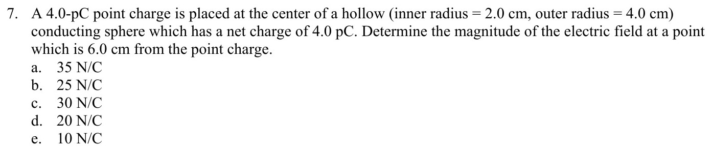
Tutorial 4 · Original question 7 · page 2 · Open full-size screenshot ↗ A +4.0 pC point charge lies at the center of a conducting spherical shell (inner radius 2.0 cm, outer radius 4.0 cm) whose net charge is +4.0 pC. Find E at r = 6.0 cm.
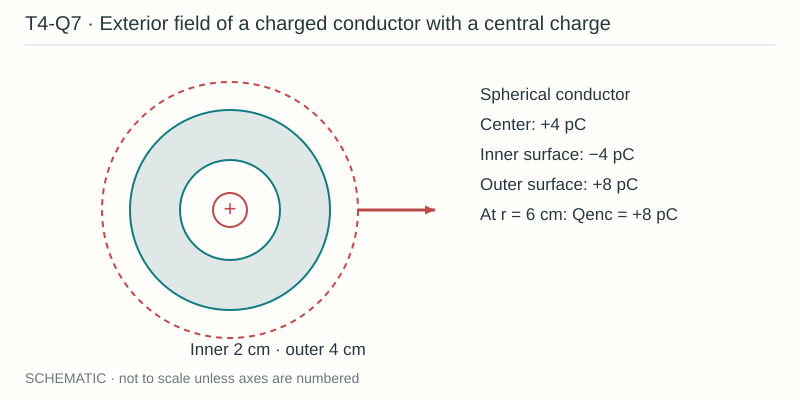
Schematic for exterior field of a charged conductor with a central charge. Read with the worked steps; geometry is not necessarily to scale. Show worked solution Tesselate explanation
Track induced charges The inner surface has −4.0 pC so the metal’s field vanishes. The outer surface then has +8.0 pC.
Find total enclosed charge The external Gaussian sphere contains point charge plus shell net charge.
Q e n c = 4.0 + 4.0 = 8.0 p C Q_{\rm enc}=4.0+4.0=8.0\,\mathrm{pC} Q enc = 4.0 + 4.0 = 8.0 pC Calculate the exterior field Use spherical symmetry.
E = k ( 8.0 × 10 − 12 ) 0.060 2 = 19.97 N / C E=\frac{k(8.0\times10^{-12})}{0.060^2}=19.97\,\mathrm{N/C} E = 0.06 0 2 k ( 8.0 × 1 0 − 12 ) = 19.97 N/C E = 20 N / C (D), outward E=20\,\mathrm{N/C}\quad\text{(D), outward} E = 20 N/C (D), outward Surface charges −4 pC and +8 pC sum to the specified +4 pC conductor charge.
Show D2L tutorial solution The instructor’s posted solution, cropped to this question. Tutorial 5’s key uses P25.x labels for the matching questions.
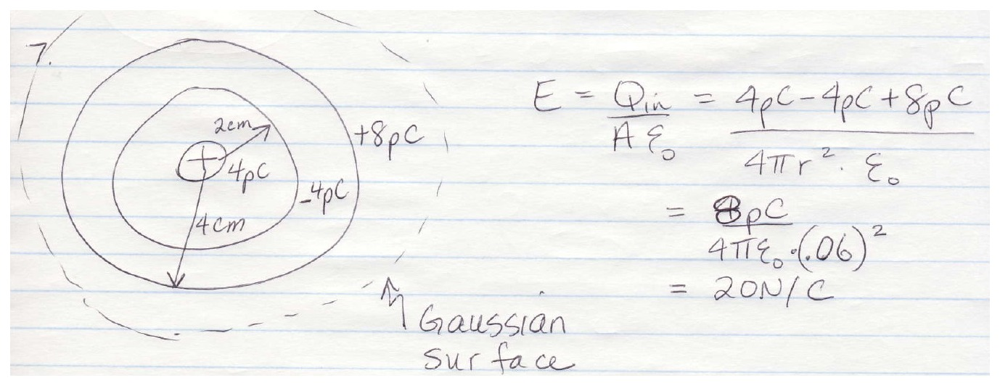
D2L posted Tutorial 4 solution · question 7 · PDF page 3 · D2L source ↗ Tutorial 4 · 8 Exterior field of a wire and conducting cylindrical shell Supporting · Gauss & conductors Original question screenshot Cropped to question 8, with its diagrams and any continuation included. Click an image to enlarge.
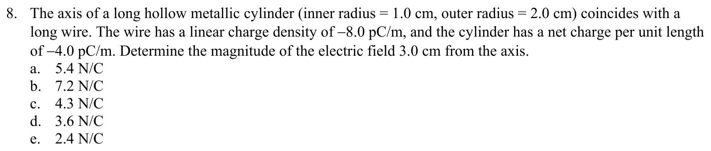
Tutorial 4 · Original question 8 · page 2 · Open full-size screenshot ↗ A long central wire has λw = −8.0 pC/m. A coaxial metallic shell (inner radius 1.0 cm, outer radius 2.0 cm) has net λshell = −4.0 pC/m. Find E at radius 3.0 cm.
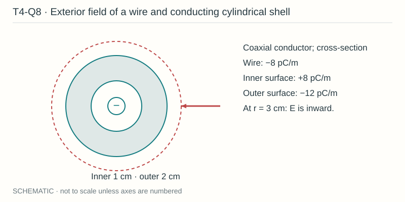
Schematic for exterior field of a wire and conducting cylindrical shell. Read with the worked steps; geometry is not necessarily to scale. Show worked solution Tesselate explanation
Add all enclosed charge per length The observation point is outside both wire and shell.
λ e n c = − 8.0 − 4.0 = − 12.0 p C / m \lambda_{\rm enc}=-8.0-4.0=-12.0\,\mathrm{pC/m} λ enc = − 8.0 − 4.0 = − 12.0 pC/m Apply cylindrical Gauss law Use the magnitude for the requested field strength.
E = ∣ λ e n c ∣ 2 π ϵ 0 r = 7.190 N / C E=\frac{|\lambda_{\rm enc}|}{2\pi\epsilon_0r}=7.190\,\mathrm{N/C} E = 2 π ϵ 0 r ∣ λ enc ∣ = 7.190 N/C Determine direction The enclosed charge is negative, so the field points toward the axis.
E = 7.2 N / C (B), radially inward E=7.2\,\mathrm{N/C}\quad\text{(B), radially inward} E = 7.2 N/C (B), radially inward The induced inner-surface charge is +8 pC/m and outer-surface charge is −12 pC/m, preserving net shell charge −4 pC/m.
Show D2L tutorial solution The instructor’s posted solution, cropped to this question. Tutorial 5’s key uses P25.x labels for the matching questions.
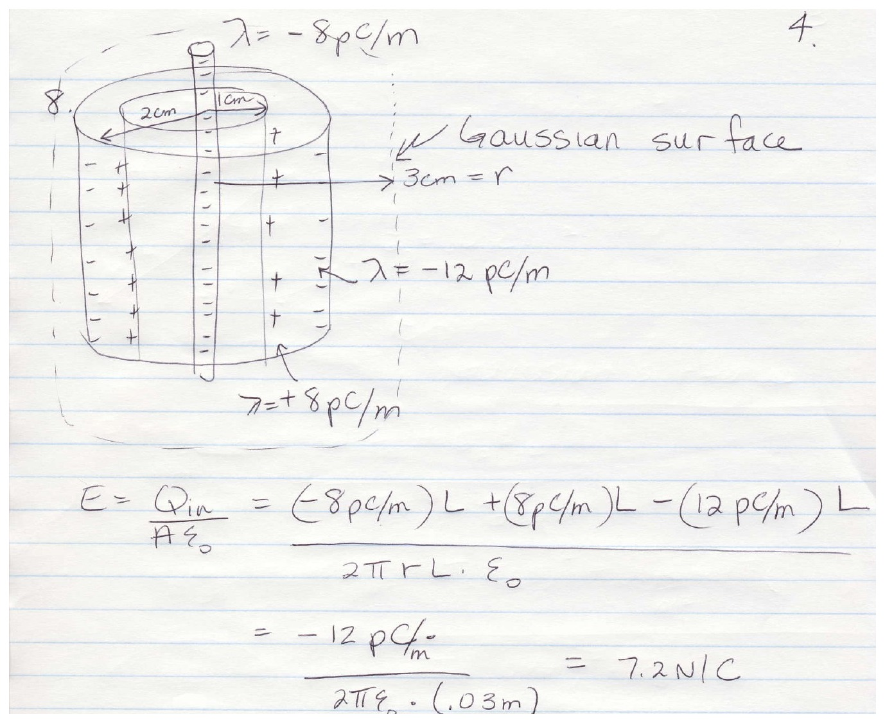
D2L posted Tutorial 4 solution · question 8 · PDF page 4 · D2L source ↗ Tutorial 4 · 9 Induced charge density on a conductor’s inner surface Core · Gauss & conductors Original question screenshot Cropped to question 9, with its diagrams and any continuation included. Click an image to enlarge.
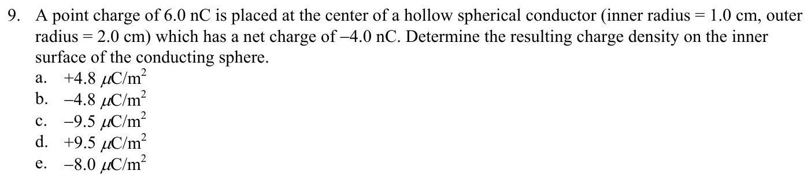
Tutorial 4 · Original question 9 · page 2 · Open full-size screenshot ↗ A +6.0 nC point charge lies at the center of a conducting spherical shell with inner radius 1.0 cm, outer radius 2.0 cm and net shell charge −4.0 nC. Find the inner-surface charge density.
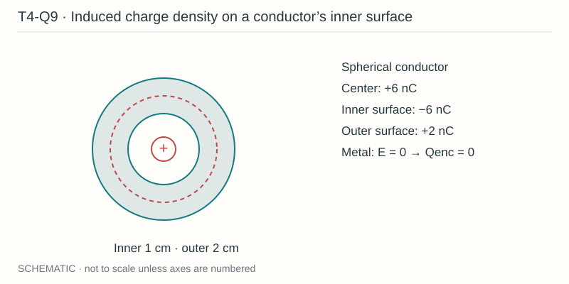
Schematic for induced charge density on a conductor’s inner surface. Read with the worked steps; geometry is not necessarily to scale. Show worked solution Tesselate explanation
Use zero field in the metal A Gaussian surface within the conductor encloses zero net charge.
Q i n n e r = − 6.0 n C Q_{\rm inner}=-6.0\,\mathrm{nC} Q inner = − 6.0 nC Divide by the inner surface area The central charge gives spherical symmetry, so density is uniform.
σ i n n e r = − 6.0 × 10 − 9 4 π ( 0.010 ) 2 = − 4.7746 × 10 − 6 C / m 2 \sigma_{\rm inner}=\frac{-6.0\times10^{-9}}{4\pi(0.010)^2}=-4.7746\times10^{-6}\,\mathrm{C/m^2} σ inner = 4 π ( 0.010 ) 2 − 6.0 × 1 0 − 9 = − 4.7746 × 1 0 − 6 C/ m 2 σ i n n e r = − 4.8 μ C / m 2 (B) \sigma_{\rm inner}=-4.8\,\mu\mathrm{C/m^2}\quad\text{(B)} σ inner = − 4.8 μ C/ m 2 (B) The outer surface carries +2.0 nC, so −6.0 + 2.0 = −4.0 nC equals the specified shell net charge.
Show D2L tutorial solution The instructor’s posted solution, cropped to this question. Tutorial 5’s key uses P25.x labels for the matching questions.
D2L posted Tutorial 4 solution · question 9 · PDF page 4 · D2L source ↗ Tutorial 5 · 3 Accelerating a proton and an electron Supporting · Potential & energy Original question screenshot Cropped to question 3, with its diagrams and any continuation included. Click an image to enlarge.
Tutorial 5 · Original question 3 · page 1 · Open full-size screenshot ↗ Find the speed of (a) a proton accelerated from rest through 120 V and (b) an electron accelerated through the same potential-difference magnitude (also taking its initial speed as zero).
Both particles start at rest and gain 120 eV. Schematic; not to scale. Show worked solution Tesselate explanation
Convert electrical energy to kinetic energy Acceleration increases kinetic energy by the charge magnitude times the potential-difference magnitude. The proton moves toward lower potential; the electron moves toward higher potential.
1 2 m v 2 = e ∣ Δ V ∣ , v = 2 e ( 120 ) m \tfrac12 mv^2=e|\Delta V|,\qquad v=\sqrt{\frac{2e(120)}m} 2 1 m v 2 = e ∣Δ V ∣ , v = m 2 e ( 120 ) Insert each particle mass Use e = 1.602 × 10⁻¹⁹ C, proton mass 1.673 × 10⁻²⁷ kg and electron mass 9.109 × 10⁻³¹ kg.
v p = 1.5162 × 10 5 m / s , v e = 6.4971 × 10 6 m / s v_p=1.5162\times10^5\ \mathrm{m/s},\qquad v_e=6.4971\times10^6\ \mathrm{m/s} v p = 1.5162 × 1 0 5 m/s , v e = 6.4971 × 1 0 6 m/s (a) 1.52 × 10 5 m / s ; (b) 6.50 × 10 6 m / s \text{(a) }1.52\times10^5\ \mathrm{m/s};\qquad\text{(b) }6.50\times10^6\ \mathrm{m/s} (a) 1.52 × 1 0 5 m/s ; (b) 6.50 × 1 0 6 m/s Both particles gain 120 eV. The lighter electron is faster by √(mp/me) ≈ 42.8; both speeds are nonrelativistic.
Show D2L tutorial solution The instructor’s posted solution, cropped to this question. Tutorial 5’s key uses P25.x labels for the matching questions.
D2L posted Tutorial 5 solution · question 3 · PDF page 1 · D2L source ↗ Tutorial 5 · 37 Potential and field from a linear function Supporting · Potential & energy Original question screenshot Cropped to question 37, with its diagrams and any continuation included. Click an image to enlarge.
Tutorial 5 · Original question 37 · page 1 · Open full-size screenshot ↗ V(x) = 10.0 − 7.00x volts for 0 ≤ x ≤ 6.00 m. Find (a) V and (b) the magnitude and direction of E at x = 0, 3.00 and 6.00 m.
Slope of potential determines the direction of electric field. Schematic; not to scale. Show worked solution Tesselate explanation
Evaluate the potential Substitute each coordinate in the given linear function.
V ( 0 ) = 10.0 V , V ( 3 ) = − 11.0 V , V ( 6 ) = − 32.0 V V(0)=10.0\ \mathrm V,\quad V(3)=-11.0\ \mathrm V,\quad V(6)=-32.0\ \mathrm V V ( 0 ) = 10.0 V , V ( 3 ) = − 11.0 V , V ( 6 ) = − 32.0 V Differentiate Electric field is the negative spatial derivative. The constant slope gives the same field throughout the stated region.
E = − d V d x x ^ = + 7.00 x ^ V / m \mathbf E=-\frac{dV}{dx}\hat{\mathbf x}=+7.00\hat{\mathbf x}\ \mathrm{V/m} E = − d x d V x ^ = + 7.00 x ^ V/m V = ( 10.0 , − 11.0 , − 32.0 ) V ; E = 7.00 x ^ V / m at all three points V=(10.0,-11.0,-32.0)\ \mathrm V;\qquad\mathbf E=7.00\hat{\mathbf x}\ \mathrm{V/m}\ \text{at all three points} V = ( 10.0 , − 11.0 , − 32.0 ) V ; E = 7.00 x ^ V/m at all three points Potential decreases toward +x, so the field points +x. Endpoint values use the field within the stated region.
Show D2L tutorial solution The instructor’s posted solution, cropped to this question. Tutorial 5’s key uses P25.x labels for the matching questions.
D2L posted Tutorial 5 solution · question 37 · PDF page 2 · D2L source ↗ Tutorial 5 · 16 Symmetric charges: zero field, nonzero potential Supporting · Potential & energy Original question screenshot Cropped to question 16, with its diagrams and any continuation included. Click an image to enlarge.
Tutorial 5 · Original question 16 · page 1 · Open full-size screenshot ↗ Two +2.00 μC charges lie at x = −0.800 m and +0.800 m. A positive test charge q = 1.28 × 10⁻¹⁸ C is at the origin. Find (a) its net force, (b) E at the origin and (c) V at the origin relative to infinity.
Fields cancel as vectors; potentials add as scalars. Schematic; not to scale. Show worked solution Tesselate explanation
Add the fields as vectors Equal positive charges at equal distances produce equal, opposite x-directed fields at the origin.
E = k Q r 2 x ^ − k Q r 2 x ^ = 0 \mathbf E=\frac{kQ}{r^2}\hat{\mathbf x}-\frac{kQ}{r^2}\hat{\mathbf x}=0 E = r 2 k Q x ^ − r 2 k Q x ^ = 0 Find the test-charge force The force is the test charge times the net external field.
F = q E = 0 \mathbf F=q\mathbf E=0 F = q E = 0 Add potentials as scalars Both source charges give positive potential; their potentials do not cancel.
V = 2 k Q r = 2 ( 8.988 × 10 9 ) ( 2.00 × 10 − 6 ) 0.800 = 4.49 × 10 4 V V=\frac{2kQ}{r}=\frac{2(8.988\times10^9)(2.00\times10^{-6})}{0.800}=4.49\times10^4\ \mathrm V V = r 2 k Q = 0.800 2 ( 8.988 × 1 0 9 ) ( 2.00 × 1 0 − 6 ) = 4.49 × 1 0 4 V (a) F = 0 ; (b) E = 0 ; (c) V = 44.9 k V \text{(a) }\mathbf F=0;\quad\text{(b) }\mathbf E=0;\quad\text{(c) }V=44.9\ \mathrm{kV} (a) F = 0 ; (b) E = 0 ; (c) V = 44.9 kV A zero potential gradient at the symmetry point does not require the potential itself to be zero.
Show D2L tutorial solution The instructor’s posted solution, cropped to this question. Tutorial 5’s key uses P25.x labels for the matching questions.
D2L posted Tutorial 5 solution · question 16 · PDF page 2 · D2L source ↗ Tutorial 5 · 17 Recovering a point charge from E and V Supporting · Potential & energy Original question screenshot Cropped to question 17, with its diagrams and any continuation included. Click an image to enlarge.
Tutorial 5 · Original question 17 · page 1 · Open full-size screenshot ↗ At a point near a single charge, |E| = 500 V/m and V = −3.00 kV relative to infinity. Find (a) the distance from the charge and (b) its magnitude.
A negative source produces inward field and negative potential. Schematic; not to scale. Show worked solution Tesselate explanation
Eliminate charge Divide the point-charge potential magnitude by field magnitude.
∣ V ∣ = k ∣ Q ∣ r , E = k ∣ Q ∣ r 2 ⇒ r = ∣ V ∣ E = 3000 500 = 6.00 m |V|=\frac{k|Q|}{r},\quad E=\frac{k|Q|}{r^2}\quad\Rightarrow\quad r=\frac{|V|}{E}=\frac{3000}{500}=6.00\ \mathrm m ∣ V ∣ = r k ∣ Q ∣ , E = r 2 k ∣ Q ∣ ⇒ r = E ∣ V ∣ = 500 3000 = 6.00 m Recover charge Use the potential equation. Negative potential means the source charge is negative.
∣ Q ∣ = ∣ V ∣ r k = 3000 ( 6.00 ) 8.988 × 10 9 = 2.00 × 10 − 6 C |Q|=\frac{|V|r}{k}=\frac{3000(6.00)}{8.988\times10^9}=2.00\times10^{-6}\ \mathrm C ∣ Q ∣ = k ∣ V ∣ r = 8.988 × 1 0 9 3000 ( 6.00 ) = 2.00 × 1 0 − 6 C (a) r = 6.00 m ; (b) ∣ Q ∣ = 2.00 μ C ( Q < 0 ) \text{(a) }r=6.00\ \mathrm m;\qquad\text{(b) }|Q|=2.00\ \mu\mathrm C\quad(Q<0) (a) r = 6.00 m ; (b) ∣ Q ∣ = 2.00 μ C ( Q < 0 ) Substitution into k|Q|/r² returns 500 V/m.
Show D2L tutorial solution The instructor’s posted solution, cropped to this question. Tutorial 5’s key uses P25.x labels for the matching questions.
D2L posted Tutorial 5 solution · question 17 · PDF page 2 · D2L source ↗ Tutorial 5 · 18 Where field and potential vanish Supporting · Potential & energy Original question screenshot Cropped to question 18, with its diagrams and any continuation included. Click an image to enlarge.
Tutorial 5 · Original question 18 · page 1 · Open full-size screenshot ↗ A charge +q is at x = 0 and a charge −2q is at x = 2.00 m. Find every finite x for which (a) E = 0 and (b) V = 0.
Field cancellation and zero potential occur at different locations. Schematic; not to scale. Show worked solution Tesselate explanation
Locate possible field cancellation Between the charges both fields point right. To the right of −2q its field is stronger. Cancellation is possible only at x < 0, outside the smaller charge.
k q x 2 = 2 k q ( 2 − x ) 2 ( x < 0 ) \frac{kq}{x^2}=\frac{2kq}{(2-x)^2}\quad(x<0) x 2 k q = ( 2 − x ) 2 2 k q ( x < 0 ) Solve the field equation in its valid region For x < 0, distances are −x and 2−x. Take the positive square root and solve.
2 − x = 2 ( − x ) ⇒ x = − 2 ( 1 + 2 ) = − 4.83 m 2-x=\sqrt2(-x)\quad\Rightarrow\quad x=-2(1+\sqrt2)=-4.83\ \mathrm m 2 − x = 2 ( − x ) ⇒ x = − 2 ( 1 + 2 ) = − 4.83 m Solve the scalar potential equation Potentials cancel when the distance to −2q is twice the distance to +q. The absolute-value equation has one root between the charges and one to their left.
k q ∣ x ∣ − 2 k q ∣ x − 2 ∣ = 0 ⇒ ∣ x − 2 ∣ = 2 ∣ x ∣ ⇒ x = − 2.00 m , 2 3 m \frac{kq}{|x|}-\frac{2kq}{|x-2|}=0\quad\Rightarrow\quad |x-2|=2|x|\quad\Rightarrow\quad x=-2.00\ \mathrm m,\ \frac23\ \mathrm m ∣ x ∣ k q − ∣ x − 2∣ 2 k q = 0 ⇒ ∣ x − 2∣ = 2∣ x ∣ ⇒ x = − 2.00 m , 3 2 m (a) x = − 4.83 m ; (b) x = − 2.00 m , + 0.667 m \text{(a) }x=-4.83\ \mathrm m;\qquad\text{(b) }x=-2.00\ \mathrm m,\ +0.667\ \mathrm m (a) x = − 4.83 m ; (b) x = − 2.00 m , + 0.667 m Neither charge location is allowed. Checking field directions removes the spurious positive root of the squared field equation.
Show D2L tutorial solution The instructor’s posted solution, cropped to this question. Tutorial 5’s key uses P25.x labels for the matching questions.
D2L posted Tutorial 5 solution · question 18 · PDF page 3 · D2L source ↗ Tutorial 5 · 34 Energy of a four-charge rectangle Supporting · Potential & energy Original question screenshot Cropped to question 34, with its diagrams and any continuation included. Click an image to enlarge.
Tutorial 5 · Original question 34 · page 2 · Open full-size screenshot ↗ At the corners of a rectangle of height a = 0.200 m and width b = 0.400 m are +q (upper left), −2q (upper right), +2q (lower left) and +3q (lower right), with q = 6.00 μC. Find the quasistatic assembly energy from infinity.
Assembly energy includes six distinct pairs. Schematic; not to scale. Show worked solution Tesselate explanation
Count all six distinct charge pairs There are two vertical pairs, two horizontal pairs and two diagonal pairs; count each once. Each diagonal has length D = √(a²+b²).
U = k q 2 [ 2 − 6 a + − 2 + 6 b + 3 − 4 a 2 + b 2 ] U=kq^2\left[\frac{2-6}{a}+\frac{-2+6}{b}+\frac{3-4}{\sqrt{a^2+b^2}}\right] U = k q 2 [ a 2 − 6 + b − 2 + 6 + a 2 + b 2 3 − 4 ] Evaluate the sum Vertical terms are attractive overall; horizontal terms are repulsive overall; diagonal terms are attractive overall.
U = ( 8.988 × 10 9 ) ( 6.00 × 10 − 6 ) 2 [ − 4 0.200 + 4 0.400 − 1 0.447214 ] = − 3.959 J U=(8.988\times10^9)(6.00\times10^{-6})^2\left[-\frac4{0.200}+\frac4{0.400}-\frac1{0.447214}\right]=-3.959\ \mathrm J U = ( 8.988 × 1 0 9 ) ( 6.00 × 1 0 − 6 ) 2 [ − 0.200 4 + 0.400 4 − 0.447214 1 ] = − 3.959 J Interpret the sign The external agent does negative quasistatic work; 3.96 J is released during assembly.
W e x t = Δ U = − 3.96 J W_{\mathrm{ext}}=\Delta U=-3.96\ \mathrm J W ext = Δ U = − 3.96 J The formula contains exactly 4·3/2 = 6 pair interactions. A negative result represents released energy, not a negative energy requirement magnitude.
Show D2L tutorial solution The instructor’s posted solution, cropped to this question. Tutorial 5’s key uses P25.x labels for the matching questions.
D2L posted Tutorial 5 solution · question 34 · PDF page 3 · D2L source ↗ Tutorial 5 · 39 Electric field from a three-dimensional potential Supporting · Potential & energy Original question screenshot Cropped to question 39, with its diagrams and any continuation included. Click an image to enlarge.
Tutorial 5 · Original question 39 · page 2 · Open full-size screenshot ↗ V = 5x − 3x²y + 2yz² in SI units. Find Ex, Ey, Ez and |E| at P = (1, 0, −2) m.
Field components at P = (1, 0, −2) m; local x–y plane. Schematic; not to scale. Show worked solution Tesselate explanation
Take the negative gradient Differentiate with respect to one coordinate at a time, holding the other two fixed.
E x = − 5 + 6 x y , E y = 3 x 2 − 2 z 2 , E z = − 4 y z E_x=-5+6xy,\qquad E_y=3x^2-2z^2,\qquad E_z=-4yz E x = − 5 + 6 x y , E y = 3 x 2 − 2 z 2 , E z = − 4 y z Evaluate at P At x = 1, y = 0, z = −2, the x and y components are both −5 V/m and the z component vanishes.
E ( P ) = ( − 5 x ^ − 5 y ^ ) V / m \mathbf E(P)=(-5\hat{\mathbf x}-5\hat{\mathbf y})\ \mathrm{V/m} E ( P ) = ( − 5 x ^ − 5 y ^ ) V/m Find the magnitude Use the Euclidean norm of the field vector.
∣ E ( P ) ∣ = ( − 5 ) 2 + ( − 5 ) 2 + 0 2 = 50 V / m |\mathbf E(P)|=\sqrt{(-5)^2+(-5)^2+0^2}=\sqrt{50}\ \mathrm{V/m} ∣ E ( P ) ∣ = ( − 5 ) 2 + ( − 5 ) 2 + 0 2 = 50 V/m E x = − 5 + 6 x y , E y = 3 x 2 − 2 z 2 , E z = − 4 y z ; ∣ E ( P ) ∣ = 7.07 V / m E_x=-5+6xy,\ E_y=3x^2-2z^2,\ E_z=-4yz;\quad |\mathbf E(P)|=7.07\ \mathrm{V/m} E x = − 5 + 6 x y , E y = 3 x 2 − 2 z 2 , E z = − 4 y z ; ∣ E ( P ) ∣ = 7.07 V/m The z component is zero at P because y = 0, even though z is nonzero.
Show D2L tutorial solution The instructor’s posted solution, cropped to this question. Tutorial 5’s key uses P25.x labels for the matching questions.
D2L posted Tutorial 5 solution · question 39 · PDF page 3 · D2L source ↗ Tutorial 5 · 42 Potential difference along a charged ring axis Supporting · Potential & energy Original question screenshot Cropped to question 42, with its diagrams and any continuation included. Click an image to enlarge.
Tutorial 5 · Original question 42 · page 2 · Open full-size screenshot ↗ A ring of radius R carries uniform total charge Q. Find the potential difference between its center and a point on its axis a distance 2R away. State the subtraction order.
Every ring element is the same distance from an axial point. Schematic; not to scale. Show worked solution Tesselate explanation
Sum scalar contributions around the ring Every charge element is the same distance √(R²+z²) from an axial point.
V ( z ) = ∫ k d q R 2 + z 2 = k Q R 2 + z 2 V(z)=\int\frac{k\,dq}{\sqrt{R^2+z^2}}=\frac{kQ}{\sqrt{R^2+z^2}} V ( z ) = ∫ R 2 + z 2 k d q = R 2 + z 2 k Q Evaluate both points At the center the source distance is R; at z = 2R it is √5 R.
V ( 0 ) = k Q R , V ( 2 R ) = k Q 5 R V(0)=\frac{kQ}{R},\qquad V(2R)=\frac{kQ}{\sqrt5R} V ( 0 ) = R k Q , V ( 2 R ) = 5 R k Q Specify the sign convention Define the difference as final axial point minus center. The reverse subtraction changes its sign.
V ( 2 R ) − V ( 0 ) = k Q R ( 1 5 − 1 ) V(2R)-V(0)=\frac{kQ}{R}\left(\frac1{\sqrt5}-1\right) V ( 2 R ) − V ( 0 ) = R k Q ( 5 1 − 1 ) V ( 2 R ) − V ( 0 ) = − ( 1 − 1 5 ) k Q R ≈ − 0.5528 k Q R V(2R)-V(0)=-\left(1-\frac1{\sqrt5}\right)\frac{kQ}{R}\approx-0.5528\frac{kQ}{R} V ( 2 R ) − V ( 0 ) = − ( 1 − 5 1 ) R k Q ≈ − 0.5528 R k Q For Q > 0, potential decreases away from the ring center along its axis, so this difference is negative.
Show D2L tutorial solution The instructor’s posted solution, cropped to this question. Tutorial 5’s key uses P25.x labels for the matching questions.
D2L posted Tutorial 5 solution · question 42 · PDF page 4 · D2L source ↗ Tutorial 5 · 63 Potential difference near an infinite line charge Supporting · Potential & energy Original question screenshot Cropped to question 63, with its diagrams and any continuation included. Click an image to enlarge.
Tutorial 5 · Original question 63 · page 2 · Open full-size screenshot ↗ The radial field of an infinite uniform line charge is E = λ/(2πε₀r). Derive V(r₂) − V(r₁).
Cross-section of an infinite line charge; shown for λ > 0. Schematic; not to scale. Show worked solution Tesselate explanation
Integrate the field Choose a radial path; the potential difference is minus the field line integral.
V ( r 2 ) − V ( r 1 ) = − ∫ r 1 r 2 λ 2 π ϵ 0 r d r V(r_2)-V(r_1)=-\int_{r_1}^{r_2}\frac{\lambda}{2\pi\epsilon_0 r}\,dr V ( r 2 ) − V ( r 1 ) = − ∫ r 1 r 2 2 π ϵ 0 r λ d r Evaluate the logarithm The ratio of radii is dimensionless.
V ( r 2 ) − V ( r 1 ) = − λ 2 π ϵ 0 ln ( r 2 r 1 ) V(r_2)-V(r_1)=-\frac{\lambda}{2\pi\epsilon_0}\ln\!\left(\frac{r_2}{r_1}\right) V ( r 2 ) − V ( r 1 ) = − 2 π ϵ 0 λ ln ( r 1 r 2 ) Choose a finite reference An infinite line charge cannot use a finite zero at infinity because the logarithm diverges. The finite-radius potential difference remains well-defined.
Δ V 1 → 2 = λ 2 π ϵ 0 ln ( r 1 r 2 ) \Delta V_{1\to2}=\frac{\lambda}{2\pi\epsilon_0}\ln\!\left(\frac{r_1}{r_2}\right) Δ V 1 → 2 = 2 π ϵ 0 λ ln ( r 2 r 1 ) For positive λ and r₂ > r₁, the potential difference is negative, consistent with the outward electric field.
Show D2L tutorial solution The instructor’s posted solution, cropped to this question. Tutorial 5’s key uses P25.x labels for the matching questions.
D2L posted Tutorial 5 solution · question 63 · PDF page 4 · D2L source ↗ Tutorial 6 · 7 Parallel plates: field, charge and capacitance Supporting · Dielectric changes Original question screenshot Cropped to question 7, with its diagrams and any continuation included. Click an image to enlarge.
Tutorial 6 · Original question 7 · page 1 · Open full-size screenshot ↗ Air-filled parallel plates have area 7.60 cm² and separation 1.80 mm, with 20.0 V applied. Find (a) field, (b) surface charge density, (c) capacitance and (d) charge on each plate. Neglect edge effects.
Air-filled parallel plates; neglect edge effects. Schematic; not to scale. Show worked solution Tesselate explanation
Convert dimensions and find the field Area is 7.60 × 10⁻⁴ m² and separation is 1.80 × 10⁻³ m.
E = V d = 20.0 1.80 × 10 − 3 = 1.11 × 10 4 V / m E=\frac{V}{d}=\frac{20.0}{1.80\times10^{-3}}=1.11\times10^4\ \mathrm{V/m} E = d V = 1.80 × 1 0 − 3 20.0 = 1.11 × 1 0 4 V/m Find surface charge density The air-filled field relation gives the magnitude on either plate.
∣ σ ∣ = ϵ 0 E = 9.84 × 10 − 8 C / m 2 |\sigma|=\epsilon_0 E=9.84\times10^{-8}\ \mathrm{C/m^2} ∣ σ ∣ = ϵ 0 E = 9.84 × 1 0 − 8 C/ m 2 Find capacitance and plate charges Use parallel-plate capacitance and Q = CV.
C = ϵ 0 A d = 3.74 p F , Q = C V = 74.8 p C C=\frac{\epsilon_0 A}{d}=3.74\ \mathrm{pF},\qquad Q=CV=74.8\ \mathrm{pC} C = d ϵ 0 A = 3.74 pF , Q = C V = 74.8 pC (a) E = 1.11 × 10 4 V / m ; (b) σ = ± 9.84 × 10 − 8 C / m 2 ; (c) C = 3.74 p F ; (d) Q = ± 74.8 p C \text{(a) }E=1.11\times10^4\ \mathrm{V/m};\quad\text{(b) }\sigma=\pm9.84\times10^{-8}\ \mathrm{C/m^2};\quad\text{(c) }C=3.74\ \mathrm{pF};\quad\text{(d) }Q=\pm74.8\ \mathrm{pC} (a) E = 1.11 × 1 0 4 V/m ; (b) σ = ± 9.84 × 1 0 − 8 C/ m 2 ; (c) C = 3.74 pF ; (d) Q = ± 74.8 pC σA agrees with CV. The field points from the positive plate toward the negative plate.
No solution file for Tutorial 6 is posted in D2L as of October 28. The worked explanation above is available.
Tutorial 6 · 23 Charge sharing after switching Supporting · Charge sharing Original question screenshot Cropped to question 23, with its diagrams and any continuation included. Click an image to enlarge.
Tutorial 6 · Original question 23 · page 1 · Open full-size screenshot ↗ C₁ = 6.00 μF is charged from a 20.0 V battery by closing S₁ while S₂ is open. S₁ is opened, then S₂ connects initially uncharged C₂ = 3.00 μF in parallel. Find the initial charge on C₁ and final charge on each capacitor.
Battery disconnected before charge sharing. Schematic; not to scale. Show worked solution Tesselate explanation
Charge the first capacitor Initially only C₁ is connected across the battery.
Q 1 i = C 1 V 0 = ( 6.00 ) ( 20.0 ) = 120 μ C Q_{1i}=C_1V_0=(6.00)(20.0)=120\ \mu\mathrm C Q 1 i = C 1 V 0 = ( 6.00 ) ( 20.0 ) = 120 μ C Conserve charge after disconnecting the battery Both capacitors share a final voltage. Total positive-plate charge remains 120 μC.
V f = Q 1 i C 1 + C 2 = 120 9.00 = 13.33 V V_f=\frac{Q_{1i}}{C_1+C_2}=\frac{120}{9.00}=13.33\ \mathrm V V f = C 1 + C 2 Q 1 i = 9.00 120 = 13.33 V Allocate the final charge Each final charge is its capacitance times the common voltage.
Q 1 f = C 1 V f = 80.0 μ C , Q 2 f = C 2 V f = 40.0 μ C Q_{1f}=C_1V_f=80.0\ \mu\mathrm C,\qquad Q_{2f}=C_2V_f=40.0\ \mu\mathrm C Q 1 f = C 1 V f = 80.0 μ C , Q 2 f = C 2 V f = 40.0 μ C Q 1 i = 120 μ C ; Q 1 f = 80.0 μ C ; Q 2 f = 40.0 μ C Q_{1i}=120\ \mu\mathrm C;\quad Q_{1f}=80.0\ \mu\mathrm C;\quad Q_{2f}=40.0\ \mu\mathrm C Q 1 i = 120 μ C ; Q 1 f = 80.0 μ C ; Q 2 f = 40.0 μ C Final positive-plate charges sum to 120 μC; each negative plate has the opposite charge. Electrostatic energy is not conserved during charge redistribution.
No solution file for Tutorial 6 is posted in D2L as of October 28. The worked explanation above is available.
Tutorial 6 · 31 Stored energy at two battery voltages Supporting · Dielectric changes Original question screenshot Cropped to question 31, with its diagrams and any continuation included. Click an image to enlarge.
Tutorial 6 · Original question 31 · page 1 · Open full-size screenshot ↗ A 3.00 μF capacitor is connected to (a) a 12.0 V battery and (b) a 6.00 V battery. Find stored energy in each case.
Stored energy scales with voltage squared at fixed capacitance. Schematic; not to scale. Show worked solution Tesselate explanation
Use the voltage form of capacitor energy For a capacitor held at voltage V, U = CV²/2.
U 12 = 1 2 ( 3.00 × 10 − 6 ) ( 12.0 ) 2 = 216 μ J U_{12}=\tfrac12(3.00\times10^{-6})(12.0)^2=216\ \mu\mathrm J U 12 = 2 1 ( 3.00 × 1 0 − 6 ) ( 12.0 ) 2 = 216 μ J Evaluate the lower voltage Halving the voltage reduces energy to one quarter.
U 6 = 1 2 ( 3.00 × 10 − 6 ) ( 6.00 ) 2 = 54.0 μ J U_6=\tfrac12(3.00\times10^{-6})(6.00)^2=54.0\ \mu\mathrm J U 6 = 2 1 ( 3.00 × 1 0 − 6 ) ( 6.00 ) 2 = 54.0 μ J (a) 216 μ J ; (b) 54.0 μ J \text{(a) }216\ \mu\mathrm J;\qquad\text{(b) }54.0\ \mu\mathrm J (a) 216 μ J ; (b) 54.0 μ J U₆/U₁₂ = (6/12)² = 1/4.
No solution file for Tutorial 6 is posted in D2L as of October 28. The worked explanation above is available.
Tutorial 6 · 34 Doubling separation at fixed charge Supporting · Dielectric changes Original question screenshot Cropped to question 34, with its diagrams and any continuation included. Click an image to enlarge.
Tutorial 6 · Original question 34 · page 1 · Open full-size screenshot ↗ A charged parallel-plate capacitor is disconnected from its battery. By what fraction does its stored energy change when the plate separation doubles?
Plate spacing doubles after disconnection. Schematic; not to scale. Show worked solution Tesselate explanation
Identify the conserved quantity Disconnection means plate charge remains fixed; the voltage is free to change.
Q f = Q i , C f = ϵ 0 A 2 d = C i 2 Q_f=Q_i,\qquad C_f=\frac{\epsilon_0 A}{2d}=\frac{C_i}{2} Q f = Q i , C f = 2 d ϵ 0 A = 2 C i Use the fixed-charge energy expression At constant Q, energy is inversely proportional to capacitance.
U f = Q 2 2 C f = 2 U i , U f − U i U i = 1 U_f=\frac{Q^2}{2C_f}=2U_i,\qquad\frac{U_f-U_i}{U_i}=1 U f = 2 C f Q 2 = 2 U i , U i U f − U i = 1 U f = 2 U i ; Δ U U i = + 1 (100% increase) U_f=2U_i;\qquad\frac{\Delta U}{U_i}=+1\quad\text{(100\% increase)} U f = 2 U i ; U i Δ U = + 1 (100% increase) Mechanical work is needed to pull the attracting plates apart; that work supplies the increased field energy.
No solution file for Tutorial 6 is posted in D2L as of October 28. The worked explanation above is available.
Tutorial 6 · 47 Isolated capacitor immersed in water Core · Dielectric changes Original question screenshot Cropped to question 47, with its diagrams and any continuation included. Click an image to enlarge.
Tutorial 6 · Original question 47 · page 1 · Open full-size screenshot ↗ An air capacitor has separation 1.50 cm and plate area 25.0 cm². It is charged to 250 V, disconnected, then fully immersed in insulating distilled water. Find (a) charge before/after, (b) final capacitance and voltage, and (c) energy change. The handout does not specify the dielectric constant κ; give κ-dependent results and an explicitly conditional numerical example for κ = 80.0.
Water fills the gap after disconnection. Schematic; not to scale. Show worked solution Tesselate explanation
Calculate initial capacitance and charge Treat air as vacuum and neglect fringing. Disconnection conserves free plate charge.
C 0 = ϵ 0 ( 25.0 × 10 − 4 ) 1.50 × 10 − 2 = 1.476 p F , Q 0 = C 0 ( 250 ) = 0.369 n C C_0=\frac{\epsilon_0(25.0\times10^{-4})}{1.50\times10^{-2}}=1.476\ \mathrm{pF},\qquad Q_0=C_0(250)=0.369\ \mathrm{nC} C 0 = 1.50 × 1 0 − 2 ϵ 0 ( 25.0 × 1 0 − 4 ) = 1.476 pF , Q 0 = C 0 ( 250 ) = 0.369 nC Insert dielectric at fixed charge A fully filling dielectric multiplies capacitance by κ; fixed charge means the voltage divides by κ.
Q f = Q 0 , C f = κ C 0 , V f = 250 κ V Q_f=Q_0,\qquad C_f=\kappa C_0,\qquad V_f=\frac{250}{\kappa}\ \mathrm V Q f = Q 0 , C f = κ C 0 , V f = κ 250 V Compute energy change Use Q²/(2C) because the battery is disconnected.
U 0 = 46.1 n J , U f = 46.1 κ n J , Δ U = 46.1 ( κ − 1 − 1 ) n J U_0=46.1\ \mathrm{nJ},\quad U_f=\frac{46.1}{\kappa}\ \mathrm{nJ},\quad\Delta U=46.1(\kappa^{-1}-1)\ \mathrm{nJ} U 0 = 46.1 nJ , U f = κ 46.1 nJ , Δ U = 46.1 ( κ − 1 − 1 ) nJ Illustrate with κ = 80.0 These numerical values assume κ = 80.0; the symbolic result applies for the dielectric constant supplied by your course table.
C f = 118 p F , V f = 3.13 V , Δ U = − 45.5 n J C_f=118\ \mathrm{pF},\quad V_f=3.13\ \mathrm V,\quad\Delta U=-45.5\ \mathrm{nJ} C f = 118 pF , V f = 3.13 V , Δ U = − 45.5 nJ ∣ Q i ∣ = ∣ Q f ∣ = 0.369 n C ; C f = 1.476 κ p F ; V f = 250 / κ V ; Δ U = 46.1 ( κ − 1 − 1 ) n J |Q_i|=|Q_f|=0.369\ \mathrm{nC};\ C_f=1.476\kappa\ \mathrm{pF};\ V_f=250/\kappa\ \mathrm V;\ \Delta U=46.1(\kappa^{-1}-1)\ \mathrm{nJ} ∣ Q i ∣ = ∣ Q f ∣ = 0.369 nC ; C f = 1.476 κ pF ; V f = 250/ κ V ; Δ U = 46.1 ( κ − 1 − 1 ) nJ The plates have opposite signs. For any κ > 1, fixed-charge energy decreases. Numerical water results require a specified κ; the source omits it.
No solution file for Tutorial 6 is posted in D2L as of October 28. The worked explanation above is available.
Tutorial 6 · 67 Find an unknown capacitance by charge sharing Supporting · Charge sharing Original question screenshot Cropped to question 67, with its diagrams and any continuation included. Click an image to enlarge.
Tutorial 6 · Original question 67 · page 2 · Open full-size screenshot ↗ An isolated unknown capacitor is charged to 100 V, then connected in parallel to an uncharged 10.0 μF capacitor. Their final voltage is 30.0 V. Find the unknown capacitance.
Charge conservation determines the unknown capacitance. Schematic; not to scale. Show worked solution Tesselate explanation
Conserve charge Initial charge on the unknown capacitor equals total final charge.
C ( 100 ) = ( C + 10.0 μ F ) ( 30.0 ) C(100)=(C+10.0\ \mu\mathrm F)(30.0) C ( 100 ) = ( C + 10.0 μ F ) ( 30.0 ) Solve for capacitance Move the C terms to the same side.
C = ( 10.0 μ F ) ( 30.0 ) 100 − 30.0 = 4.2857 μ F C=\frac{(10.0\ \mu\mathrm F)(30.0)}{100-30.0}=4.2857\ \mu\mathrm F C = 100 − 30.0 ( 10.0 μ F ) ( 30.0 ) = 4.2857 μ F C = 4.29 μ F C=4.29\ \mu\mathrm F C = 4.29 μ F Initial charge is 428.6 μC; final charges 128.6 μC and 300 μC sum to the same value.
No solution file for Tutorial 6 is posted in D2L as of October 28. The worked explanation above is available.
Tutorial 6 · 69 Dielectric insertion with the battery connected Core · Dielectric changes Original question screenshot Cropped to question 69, with its diagrams and any continuation included. Click an image to enlarge.
Tutorial 6 · Original question 69 · page 2 · Open full-size screenshot ↗ A parallel-plate capacitor, separation d, remains connected to a battery at ΔV₀ while a dielectric of thickness d and constant κ fills its gap. (a) Show U/U₀ = κ and explain the energy increase. (b) Find the change in charge.
Dielectric enters while battery remains connected. Schematic; not to scale. Show worked solution Tesselate explanation
Identify the fixed voltage The battery holds voltage constant while the dielectric increases capacitance.
C = κ C 0 , V = Δ V 0 C=\kappa C_0,\qquad V=\Delta V_0 C = κ C 0 , V = Δ V 0 Find the energy ratio Use CV²/2 for this fixed-voltage process.
U U 0 = 1 2 κ C 0 ( Δ V 0 ) 2 1 2 C 0 ( Δ V 0 ) 2 = κ \frac{U}{U_0}=\frac{\tfrac12\kappa C_0(\Delta V_0)^2}{\tfrac12 C_0(\Delta V_0)^2}=\kappa U 0 U = 2 1 C 0 ( Δ V 0 ) 2 2 1 κ C 0 ( Δ V 0 ) 2 = κ Find charge and explain the energy source The battery supplies additional charge and energy. During quasistatic insertion, half of the supplied energy increases stored field energy and the remainder can appear as mechanical work.
Q = C V = κ Q 0 , Δ Q = ( κ − 1 ) Q 0 , W b a t t e r y = V Δ Q = 2 ( U − U 0 ) Q=CV=\kappa Q_0,\quad\Delta Q=(\kappa-1)Q_0,\quad W_{\mathrm{battery}}=V\Delta Q=2(U-U_0) Q = C V = κ Q 0 , Δ Q = ( κ − 1 ) Q 0 , W battery = V Δ Q = 2 ( U − U 0 ) (a) U / U 0 = κ ; (b) Q = κ Q 0 \text{(a) }U/U_0=\kappa;\qquad\text{(b) }Q=\kappa Q_0 (a) U / U 0 = κ ; (b) Q = κ Q 0 This is fixed voltage, not fixed charge. The battery is the energy source; inserting a dielectric does not create energy.
No solution file for Tutorial 6 is posted in D2L as of October 28. The worked explanation above is available.
Tutorial 6 · 71 Reconnect charged capacitors with reversed polarity Supporting · Charge sharing Original question screenshot Cropped to question 71, with its diagrams and any continuation included. Click an image to enlarge.
Tutorial 6 · Original question 71 · page 2 · Open full-size screenshot ↗ C₁ = 6.00 μF and C₂ = 2.00 μF are charged in parallel across 250 V, disconnected, then connected positive-to-negative and negative-to-positive. Find the resulting charge on each capacitor.
Opposite initial polarities are connected together. Schematic; not to scale. Show worked solution Tesselate explanation
Compute initial charges Take the node containing the initially positive plate of C₁ as the positive reference node.
Q 1 i = 1500 μ C , Q 2 i = 500 μ C Q_{1i}=1500\ \mu\mathrm C,\qquad Q_{2i}=500\ \mu\mathrm C Q 1 i = 1500 μ C , Q 2 i = 500 μ C Conserve signed node charge Because the connections reverse C₂, the charge on that node is the difference, not the sum.
Q n o d e = 1500 − 500 = 1000 μ C , V f = 1000 6.00 + 2.00 = 125 V Q_{\mathrm{node}}=1500-500=1000\ \mu\mathrm C,\qquad V_f=\frac{1000}{6.00+2.00}=125\ \mathrm V Q node = 1500 − 500 = 1000 μ C , V f = 6.00 + 2.00 1000 = 125 V Recover each capacitor charge C₁ retains its original polarity. C₂ reverses polarity because its initially negative plate is on the final positive node.
∣ Q 1 f ∣ = ( 6.00 ) ( 125 ) = 750 μ C , ∣ Q 2 f ∣ = ( 2.00 ) ( 125 ) = 250 μ C |Q_{1f}|=(6.00)(125)=750\ \mu\mathrm C,\qquad |Q_{2f}|=(2.00)(125)=250\ \mu\mathrm C ∣ Q 1 f ∣ = ( 6.00 ) ( 125 ) = 750 μ C , ∣ Q 2 f ∣ = ( 2.00 ) ( 125 ) = 250 μ C ∣ Q 1 f ∣ = 750 μ C ; ∣ Q 2 f ∣ = 250 μ C (polarity of C 2 reversed) |Q_{1f}|=750\ \mu\mathrm C;\quad |Q_{2f}|=250\ \mu\mathrm C\quad\text{(polarity of }C_2\text{ reversed)} ∣ Q 1 f ∣ = 750 μ C ; ∣ Q 2 f ∣ = 250 μ C (polarity of C 2 reversed) Final charge on the reference node is 750 + 250 = 1000 μC, equal to the initial signed sum.
No solution file for Tutorial 6 is posted in D2L as of October 28. The worked explanation above is available.
Tutorial 7 · 1 Energy in a capacitor network Core · Capacitor networks Original question screenshot Cropped to question 1, with its diagrams and any continuation included. Click an image to enlarge.
Tutorial 7 · Original question 1 · page 1 · Open full-size screenshot ↗ In the diagram C₁ = 50 μF and C₂ = 30 μF form one parallel group; C₃ = 36 μF and C₄ = 12 μF form a second parallel group. The two groups are in series across V₀ = 30 V. Find the energy in C₃ and select the answer.
Equivalent circuit: each parallel group is combined first. Schematic; not to scale. Show worked solution Tesselate explanation
Reduce each parallel group The common top conductor joins the two groups; the battery separates the bottom nodes, so the groups are in series.
C L = C 1 + C 2 = 80 μ F , C R = C 3 + C 4 = 48 μ F C_L=C_1+C_2=80\ \mu\mathrm F,\quad C_R=C_3+C_4=48\ \mu\mathrm F C L = C 1 + C 2 = 80 μ F , C R = C 3 + C 4 = 48 μ F Find the right-group voltage Series groups have equal charge. The smaller group receives the larger voltage.
C e q = 80 ( 48 ) 80 + 48 = 30 μ F , Q = C e q V 0 = 900 μ C , V 3 = 900 48 = 18.75 V C_{\mathrm{eq}}=\frac{80(48)}{80+48}=30\ \mu\mathrm F,\quad Q=C_{\mathrm{eq}}V_0=900\ \mu\mathrm C,\quad V_3=\frac{900}{48}=18.75\ \mathrm V C eq = 80 + 48 80 ( 48 ) = 30 μ F , Q = C eq V 0 = 900 μ C , V 3 = 48 900 = 18.75 V Calculate C₃ energy C₃ shares the full right-group voltage.
U 3 = 1 2 C 3 V 3 2 = 1 2 ( 36 × 10 − 6 ) ( 18.75 ) 2 = 6.328 m J U_3=\tfrac12C_3V_3^2=\tfrac12(36\times10^{-6})(18.75)^2=6.328\ \mathrm{mJ} U 3 = 2 1 C 3 V 3 2 = 2 1 ( 36 × 1 0 − 6 ) ( 18.75 ) 2 = 6.328 mJ U 3 = 6.3 m J (A) U_3=6.3\ \mathrm{mJ}\quad\text{(A)} U 3 = 6.3 mJ (A) The other group has 11.25 V, and the two group voltages sum to 30 V. Agrees with the printed key.
No solution file for Tutorial 7 is posted in D2L as of October 28. The worked explanation above is available.
Tutorial 7 · 2 Voltage division in a series capacitor branch Core · Capacitor networks Original question screenshot Cropped to question 2, with its diagrams and any continuation included. Click an image to enlarge.
Tutorial 7 · Original question 2 · page 1 · Open full-size screenshot ↗ C₁ = 5.0 μF is directly across a 24 V source. A parallel branch contains C₂ = 15 μF and C₃ = 30 μF in series. Find the voltage across C₂.
Redrawn connections: C₁ is parallel to the C₂–C₃ branch. Schematic; not to scale. Show worked solution Tesselate explanation
Identify the branch voltage Both branches connect to the battery nodes, so the C₂–C₃ series pair has 24 V across it. C₁ does not change the ideal battery voltage.
C 23 = 15 ( 30 ) 15 + 30 = 10 μ F C_{23}=\frac{15(30)}{15+30}=10\ \mu\mathrm F C 23 = 15 + 30 15 ( 30 ) = 10 μ F Find series charge and C₂ voltage Series capacitors carry equal charge magnitude.
Q 23 = C 23 V 0 = 240 μ C , V 2 = 240 15 = 16 V Q_{23}=C_{23}V_0=240\ \mu\mathrm C,\qquad V_2=\frac{240}{15}=16\ \mathrm V Q 23 = C 23 V 0 = 240 μ C , V 2 = 15 240 = 16 V V 2 = 16 V (C) V_2=16\ \mathrm V\quad\text{(C)} V 2 = 16 V (C) V₃ = 8 V; V₂ + V₃ = 24 V. Agrees with the printed key.
No solution file for Tutorial 7 is posted in D2L as of October 28. The worked explanation above is available.
Tutorial 7 · 3 Energy after same-polarity charge sharing Supporting · Charge sharing Original question screenshot Cropped to question 3, with its diagrams and any continuation included. Click an image to enlarge.
Tutorial 7 · Original question 3 · page 1 · Open full-size screenshot ↗ A 6.0 μF capacitor at 50 V and a 4.0 μF capacitor at 34 V are connected positive-to-positive and negative-to-negative. Find the final energy stored in the 6.0 μF capacitor.
Matching polarity: add initial positive-plate charges. Schematic; not to scale. Show worked solution Tesselate explanation
Conserve positive-node charge The charges add because the polarities match.
Q t o t = ( 6.0 ) ( 50 ) + ( 4.0 ) ( 34 ) = 436 μ C Q_{\mathrm{tot}}=(6.0)(50)+(4.0)(34)=436\ \mu\mathrm C Q tot = ( 6.0 ) ( 50 ) + ( 4.0 ) ( 34 ) = 436 μ C Find equilibrium voltage Both capacitors share the same final voltage.
V f = 436 6.0 + 4.0 = 43.6 V V_f=\frac{436}{6.0+4.0}=43.6\ \mathrm V V f = 6.0 + 4.0 436 = 43.6 V Compute the requested capacitor energy Use only the 6.0 μF capacitance for its stored energy.
U 6 = 1 2 ( 6.0 × 10 − 6 ) ( 43.6 ) 2 = 5.70288 m J U_6=\tfrac12(6.0\times10^{-6})(43.6)^2=5.70288\ \mathrm{mJ} U 6 = 2 1 ( 6.0 × 1 0 − 6 ) ( 43.6 ) 2 = 5.70288 mJ U 6 = 5.7 m J (B) U_6=5.7\ \mathrm{mJ}\quad\text{(B)} U 6 = 5.7 mJ (B) Final voltage lies between 34 V and 50 V; the printed key is B.
No solution file for Tutorial 7 is posted in D2L as of October 28. The worked explanation above is available.
Tutorial 7 · 4 Unknown capacitor from two initial voltages Supporting · Charge sharing Original question screenshot Cropped to question 4, with its diagrams and any continuation included. Click an image to enlarge.
Tutorial 7 · Original question 4 · page 2 · Open full-size screenshot ↗ A 25 μF capacitor charged to 50 V is connected with matching polarity to an unknown capacitor C charged to 20 V. The final common voltage is 36 V. Find C.
Matching polarity: charge transfers toward lower voltage. Schematic; not to scale. Show worked solution Tesselate explanation
Write charge conservation Charge on the combined positive node is conserved.
( 25 ) ( 50 ) + C ( 20 ) = ( 25 + C ) ( 36 ) [ C in μ F ] (25)(50)+C(20)=(25+C)(36)\qquad[C\text{ in }\mu\mathrm F] ( 25 ) ( 50 ) + C ( 20 ) = ( 25 + C ) ( 36 ) [ C in μ F ] Solve for C The higher-voltage capacitor loses the charge gained by the lower-voltage capacitor.
C = 25 ( 50 − 36 ) 36 − 20 = 21.875 μ F C=\frac{25(50-36)}{36-20}=21.875\ \mu\mathrm F C = 36 − 20 25 ( 50 − 36 ) = 21.875 μ F C ≈ 22 μ F (C) C\approx22\ \mu\mathrm F\quad\text{(C)} C ≈ 22 μ F (C) Both sides give 1687.5 μC at the unrounded C. Agrees with the printed key.
No solution file for Tutorial 7 is posted in D2L as of October 28. The worked explanation above is available.
Tutorial 7 · 5 Unknown initially uncharged capacitor Supporting · Charge sharing Original question screenshot Cropped to question 5, with its diagrams and any continuation included. Click an image to enlarge.
Tutorial 7 · Original question 5 · page 2 · Open full-size screenshot ↗ A 30 μF capacitor initially at 80 V is connected across an uncharged capacitor C. Their final voltage is 20 V. Find C.
An initially uncharged capacitor receives part of the charge. Schematic; not to scale. Show worked solution Tesselate explanation
Conserve charge The initially uncharged capacitor contributes no initial node charge.
( 30 ) ( 80 ) = ( 30 + C ) ( 20 ) [ C in μ F ] (30)(80)=(30+C)(20)\qquad[C\text{ in }\mu\mathrm F] ( 30 ) ( 80 ) = ( 30 + C ) ( 20 ) [ C in μ F ] Solve the total capacitance The fourfold decrease in voltage requires a fourfold increase in total capacitance.
30 + C = 120 ⇒ C = 90 μ F 30+C=120\quad\Rightarrow\quad C=90\ \mu\mathrm F 30 + C = 120 ⇒ C = 90 μ F C = 90 μ F (D) C=90\ \mu\mathrm F\quad\text{(D)} C = 90 μ F (D) Final charges are 600 μC and 1800 μC, totaling the original 2400 μC. Agrees with the key.
No solution file for Tutorial 7 is posted in D2L as of October 28. The worked explanation above is available.
Tutorial 7 · 6 Pulling plates apart while connected to a battery Supporting · Dielectric changes Original question screenshot Cropped to question 6, with its diagrams and any continuation included. Click an image to enlarge.
Tutorial 7 · Original question 6 · page 2 · Open full-size screenshot ↗ A parallel-plate capacitor initially has C₀, Q₀ and plate separation d at battery voltage V₀. Separation increases to 2d while the battery remains connected. Find the new capacitance and plate-charge magnitude.
Plate spacing doubles with battery connected. Schematic; not to scale. Show worked solution Tesselate explanation
Use the new separation Capacitance is inversely proportional to plate spacing.
C f = ϵ 0 A 2 d = C 0 2 C_f=\frac{\epsilon_0A}{2d}=\frac{C_0}{2} C f = 2 d ϵ 0 A = 2 C 0 Keep the voltage fixed Charge adjusts through the battery as capacitance changes.
Q f = C f V 0 = C 0 V 0 2 = Q 0 2 Q_f=C_fV_0=\frac{C_0V_0}{2}=\frac{Q_0}{2} Q f = C f V 0 = 2 C 0 V 0 = 2 Q 0 C f = 1 2 C 0 , Q f = 1 2 Q 0 (A) C_f=\tfrac12C_0,\qquad Q_f=\tfrac12Q_0\quad\text{(A)} C f = 2 1 C 0 , Q f = 2 1 Q 0 (A) Charge is not conserved on the capacitor because the battery stays connected. Agrees with the printed key.
No solution file for Tutorial 7 is posted in D2L as of October 28. The worked explanation above is available.
Tutorial 7 · 7 Dielectric insertion after battery disconnection Core · Dielectric changes Original question screenshot Cropped to question 7, with its diagrams and any continuation included. Click an image to enlarge.
Tutorial 7 · Original question 7 · page 2 · Open full-size screenshot ↗ A parallel-plate capacitor initially has C₀, Q₀ and V₀. It is disconnected from its battery and filled with a dielectric of constant 3. Find the final plate-charge magnitude and voltage.
Dielectric κ = 3 inserted after disconnection. Schematic; not to scale. Show worked solution Tesselate explanation
Keep the isolated charge fixed The disconnected plates cannot exchange free charge with a battery.
Q f = Q 0 , C f = 3 C 0 Q_f=Q_0,\qquad C_f=3C_0 Q f = Q 0 , C f = 3 C 0 Find the reduced voltage Voltage follows Q/C.
V f = Q 0 3 C 0 = V 0 3 V_f=\frac{Q_0}{3C_0}=\frac{V_0}{3} V f = 3 C 0 Q 0 = 3 V 0 Q f = Q 0 , V f = 1 3 V 0 (B) Q_f=Q_0,\qquad V_f=\tfrac13V_0\quad\text{(B)} Q f = Q 0 , V f = 3 1 V 0 (B) U_f = U₀/3 at fixed charge. Agrees with the printed key.
No solution file for Tutorial 7 is posted in D2L as of October 28. The worked explanation above is available.
Textbook 15e · 22.24 Infer a uniform sphere’s charge density Core · Bonus · spherical charge Original question screenshot Cropped to question 22.24, with its diagrams and any continuation included. Click an image to enlarge.
Textbook 15e · Original question 22.24 · page 742 (PDF page 762) · Open full-size screenshot ↗ A uniformly charged sphere has R = 4.00 cm. Its field magnitude at r = 8.00 cm is 940 N/C. Find the density magnitude and field at r = 2.00 cm.
Show worked solution Tesselate explanation · textbook 15e numbering
Find total charge Outside,
∣ Q ∣ = E r 2 / k = 6.69 × 10 − 10 C |Q|=Er^2/k=6.69\times10^{-10}\ \mathrm C ∣ Q ∣ = E r 2 / k = 6.69 × 1 0 − 10 C . Divide by
4 π R 3 / 3 4\pi R^3/3 4 π R 3 /3 to obtain
∣ ρ ∣ = 2.50 × 10 − 6 C / m 3 |\rho|=2.50\times10^{-6}\ \mathrm{C/m^3} ∣ ρ ∣ = 2.50 × 1 0 − 6 C/ m 3 .
Use enclosed charge inside ∣ E ( r ) ∣ = ∣ ρ ∣ r / ( 3 ε 0 ) |E(r)|=|\rho|r/(3\varepsilon_0) ∣ E ( r ) ∣ = ∣ ρ ∣ r / ( 3 ε 0 ) . At 0.0200 m,
∣ E ∣ = 1.88 × 10 3 N / C |E|=1.88\times10^3\ \mathrm{N/C} ∣ E ∣ = 1.88 × 1 0 3 N/C . The sign of the charge requires a field direction, not just its magnitude.
|ρ| = 2.50 µC/m³; |Einside| = 1880 N/C.
Show original textbook-solution screenshot · 22.24 Expand to load the cropped original solution from the signed-in reference library.
Textbook solutions manual · problem 22.24 Page 82 ↗ Original solution screenshots require Tesselate sign-in. Textbook 15e · 22.25 Charge on cavity and outer surfaces Core · Gauss & conductors Original question screenshot Cropped to question 22.25, with its diagrams and any continuation included. Click an image to enlarge.
Textbook 15e · Original question 22.25 · page 742 (PDF page 762) · Open full-size screenshot ↗ A conductor has net charge +5.00 nC and an insulated charge −6.00 nC in its cavity. Find its inner- and outer-surface charges.
Show worked solution Tesselate explanation · textbook 15e numbering
Use a Gaussian surface in the metal Since
E = 0 E=0 E = 0 , the enclosed charge is zero:
q c a v i t y + Q i n n e r = 0 q_{\rm cavity}+Q_{\rm inner}=0 q cavity + Q inner = 0 . Thus
Q i n n e r = + 6.00 n C Q_{\rm inner}=+6.00\ \mathrm{nC} Q inner = + 6.00 nC .
Conserve the conductor’s charge Q i n n e r + Q o u t e r = + 5.00 n C Q_{\rm inner}+Q_{\rm outer}=+5.00\ \mathrm{nC} Q inner + Q outer = + 5.00 nC , hence
Q o u t e r = − 1.00 n C Q_{\rm outer}=-1.00\ \mathrm{nC} Q outer = − 1.00 nC .
Inner +6.00 nC; outer −1.00 nC.
Show original textbook-solution screenshot · 22.25 Expand to load the cropped original solution from the signed-in reference library.
Textbook solutions manual · problem 22.25 Page 82 ↗ Original solution screenshots require Tesselate sign-in. Textbook 15e · 22.40 A conducting sphere inside a neutral shell Core · Gauss & conductors Original question screenshot Cropped to question 22.40, with its diagrams and any continuation included. Click an image to enlarge.
Textbook 15e · Original question 22.40 · page 743 (PDF page 763) · Open full-size screenshot ↗ A conducting sphere of radius a carries q. A concentric neutral conducting shell has radii b and c. Find E in each region and the shell surface charges.
Show worked solution Tesselate explanation · textbook 15e numbering
Allocate surface charge The inner sphere carries
q q q on its surface. A Gaussian sphere within the shell’s metal requires
Q b = − q Q_b=-q Q b = − q . Neutrality then requires
Q c = + q Q_c=+q Q c = + q .
Apply Gauss in every region E r ( r ) = { 0 r < a k q / r 2 a < r < b 0 b < r < c k q / r 2 r > c . E_r(r)=\begin{cases}0&r<a\\kq/r^2&a<r<b\\0&b<r<c\\kq/r^2&r>c.\end{cases} E r ( r ) = ⎩ ⎨ ⎧ 0 k q / r 2 0 k q / r 2 r < a a < r < b b < r < c r > c . Positive
E r E_r E r means outward. The field graph jumps at charged surfaces, is zero within metal, and decays as
1 / r 2 1/r^2 1/ r 2 in the two empty regions. For positive q, field lines leave the inner sphere, terminate on the shell’s inner surface, and emerge from the outer surface.
Shell inner −q; shell outer +q. Metal regions have zero field.
Show original textbook-solution screenshots · 22.40 Expand to load the cropped original solution from the signed-in reference library.
Textbook solutions manual · problem 22.40 Page 89 ↗ Page 90 ↗ Original solution screenshots require Tesselate sign-in. Textbook 15e · 22.42 A central charge inside a negatively charged shell Core · Gauss & conductors Original question screenshot Cropped to question 22.42, with its diagrams and any continuation included. Click an image to enlarge.
Textbook 15e · Original question 22.42 · page 743 (PDF page 763) · Open full-size screenshot ↗ A point charge +Q is at the centre of a conducting shell with inner radius a, outer radius b, and net charge −3Q. Find fields and surface densities.
Show worked solution Tesselate explanation · textbook 15e numbering
Find surface charges Q a = − Q Q_a=-Q Q a = − Q makes the field vanish within the metal. Since
Q a + Q b = − 3 Q Q_a+Q_b=-3Q Q a + Q b = − 3 Q ,
Q b = − 2 Q Q_b=-2Q Q b = − 2 Q . Therefore
σ a = − Q / ( 4 π a 2 ) \sigma_a=-Q/(4\pi a^2) σ a = − Q / ( 4 π a 2 ) and
σ b = − 2 Q / ( 4 π b 2 ) \sigma_b=-2Q/(4\pi b^2) σ b = − 2 Q / ( 4 π b 2 ) .
Find the signed radial field E r = { k Q / r 2 0 < r < a 0 a < r < b − 2 k Q / r 2 r > b . E_r=\begin{cases}kQ/r^2&0<r<a\\0&a<r<b\\-2kQ/r^2&r>b.\end{cases} E r = ⎩ ⎨ ⎧ k Q / r 2 0 − 2 k Q / r 2 0 < r < a a < r < b r > b . The cavity field is outward; the exterior field is inward. Its exterior magnitude is
2 k Q / r 2 2kQ/r^2 2 k Q / r 2 . The central point itself is singular. Field lines from +Q end on the inner surface; exterior lines enter the outer surface.
Inner −Q; outer −2Q. Exterior field points inward.
Show original textbook-solution screenshots · 22.42 Expand to load the cropped original solution from the signed-in reference library.
Textbook solutions manual · problem 22.42 Page 90 ↗ Page 91 ↗ Original solution screenshots require Tesselate sign-in. Textbook 15e · 22.47 Nonuniform sphere: density decreases linearly Core · Bonus · spherical charge Original question screenshots Cropped to question 22.47, with its diagrams and any continuation included. Click an image to enlarge.
Textbook 15e · Original question 22.47 · page 744 (PDF page 764) · Open full-size screenshot ↗ Textbook 15e · Original question 22.47 · page 744 (PDF page 764) · Open full-size screenshot ↗ For ρ(r) = ρ₀(1 − r/R), with ρ₀ = 3Q/(πR³), find enclosed charge, E(r), and the maximum field.
Show worked solution Tesselate explanation · textbook 15e numbering
Integrate spherical shells Q e n c ( r ) = 4 π ρ 0 ∫ 0 r ( s 2 − s 3 / R ) d s = 4 π ρ 0 ( r 3 3 − r 4 4 R ) . Q_{\rm enc}(r)=4\pi\rho_0\int_0^r(s^2-s^3/R)\,ds=4\pi\rho_0\left(\frac{r^3}{3}-\frac{r^4}{4R}\right). Q enc ( r ) = 4 π ρ 0 ∫ 0 r ( s 2 − s 3 / R ) d s = 4 π ρ 0 ( 3 r 3 − 4 R r 4 ) . Thus
Q t o t a l = π ρ 0 R 3 / 3 Q_{\rm total}=\pi\rho_0R^3/3 Q total = π ρ 0 R 3 /3 . For 22.47 this is the specified
Q Q Q .
Apply Gauss and find the peak E r = { ρ 0 ε 0 ( r / 3 − r 2 / ( 4 R ) ) 0 ≤ r ≤ R ρ 0 R 3 12 ε 0 r 2 r ≥ R . E_r=\begin{cases}\dfrac{\rho_0}{\varepsilon_0}(r/3-r^2/(4R))&0\le r\le R\\\dfrac{\rho_0R^3}{12\varepsilon_0r^2}&r\ge R.\end{cases} E r = ⎩ ⎨ ⎧ ε 0 ρ 0 ( r /3 − r 2 / ( 4 R )) 12 ε 0 r 2 ρ 0 R 3 0 ≤ r ≤ R r ≥ R . Set
d E / d r = ( ρ 0 / ε 0 ) ( 1 / 3 − r / ( 2 R ) ) = 0 dE/dr=(\rho_0/\varepsilon_0)(1/3-r/(2R))=0 d E / d r = ( ρ 0 / ε 0 ) ( 1/3 − r / ( 2 R )) = 0 :
r max = 2 R / 3 r_{\max}=2R/3 r m a x = 2 R /3 ,
E max = ρ 0 R / ( 9 ε 0 ) E_{\max}=\rho_0R/(9\varepsilon_0) E m a x = ρ 0 R / ( 9 ε 0 ) . The graph starts at zero, peaks inside, and joins continuously to the exterior inverse-square curve.
rmax = 2R/3; Emax = ρ₀R/(9ε₀). For 22.47, Emax = Q/(3πε₀R²).
Show original textbook-solution screenshots · 22.47 Expand to load the cropped original solution from the signed-in reference library.
Textbook 15e · 22.50 Nonuniform sphere: density decreases linearly Core · Bonus · spherical charge Original question screenshot Cropped to question 22.50, with its diagrams and any continuation included. Click an image to enlarge.
Textbook 15e · Original question 22.50 · page 744 (PDF page 764) · Open full-size screenshot ↗ For ρ(r) = ρ₀(1 − r/R) inside a sphere, derive E inside/outside and locate its maximum.
Show worked solution Tesselate explanation · textbook 15e numbering
Integrate spherical shells Q e n c ( r ) = 4 π ρ 0 ∫ 0 r ( s 2 − s 3 / R ) d s = 4 π ρ 0 ( r 3 3 − r 4 4 R ) . Q_{\rm enc}(r)=4\pi\rho_0\int_0^r(s^2-s^3/R)\,ds=4\pi\rho_0\left(\frac{r^3}{3}-\frac{r^4}{4R}\right). Q enc ( r ) = 4 π ρ 0 ∫ 0 r ( s 2 − s 3 / R ) d s = 4 π ρ 0 ( 3 r 3 − 4 R r 4 ) . Thus
Q t o t a l = π ρ 0 R 3 / 3 Q_{\rm total}=\pi\rho_0R^3/3 Q total = π ρ 0 R 3 /3 . For 22.47 this is the specified
Q Q Q .
Apply Gauss and find the peak E r = { ρ 0 ε 0 ( r / 3 − r 2 / ( 4 R ) ) 0 ≤ r ≤ R ρ 0 R 3 12 ε 0 r 2 r ≥ R . E_r=\begin{cases}\dfrac{\rho_0}{\varepsilon_0}(r/3-r^2/(4R))&0\le r\le R\\\dfrac{\rho_0R^3}{12\varepsilon_0r^2}&r\ge R.\end{cases} E r = ⎩ ⎨ ⎧ ε 0 ρ 0 ( r /3 − r 2 / ( 4 R )) 12 ε 0 r 2 ρ 0 R 3 0 ≤ r ≤ R r ≥ R . Set
d E / d r = ( ρ 0 / ε 0 ) ( 1 / 3 − r / ( 2 R ) ) = 0 dE/dr=(\rho_0/\varepsilon_0)(1/3-r/(2R))=0 d E / d r = ( ρ 0 / ε 0 ) ( 1/3 − r / ( 2 R )) = 0 :
r max = 2 R / 3 r_{\max}=2R/3 r m a x = 2 R /3 ,
E max = ρ 0 R / ( 9 ε 0 ) E_{\max}=\rho_0R/(9\varepsilon_0) E m a x = ρ 0 R / ( 9 ε 0 ) . The graph starts at zero, peaks inside, and joins continuously to the exterior inverse-square curve.
rmax = 2R/3; Emax = ρ₀R/(9ε₀). For 22.47, Emax = Q/(3πε₀R²).
Show original textbook-solution screenshot · 22.50 Expand to load the cropped original solution from the signed-in reference library.
Textbook solutions manual · problem 22.50 Page 97 ↗ Original solution screenshots require Tesselate sign-in. Textbook 15e · 22.52 A sphere with zero total charge Core · Bonus · spherical charge Original question screenshot Cropped to question 22.52, with its diagrams and any continuation included. Click an image to enlarge.
Textbook 15e · Original question 22.52 · page 744 (PDF page 764) · Open full-size screenshot ↗ Inside R, ρ(r) = ρ₀[1 − 4r/(3R)]. Find total charge, interior/exterior field, and maximum.
Show worked solution Tesselate explanation · textbook 15e numbering
Do the integral before assuming the field is zero Q e n c ( r ) = 4 π ρ 0 [ r 3 / 3 − r 4 / ( 3 R ) ] Q_{\rm enc}(r)=4\pi\rho_0[r^3/3-r^4/(3R)] Q enc ( r ) = 4 π ρ 0 [ r 3 /3 − r 4 / ( 3 R )] . At
r = R r=R r = R this gives
Q t o t a l = 0 Q_{\rm total}=0 Q total = 0 , so the exterior field is zero.
Find the nonzero interior field E r = ρ 0 ( r − r 2 / R ) / ( 3 ε 0 ) E_r=\rho_0(r-r^2/R)/(3\varepsilon_0) E r = ρ 0 ( r − r 2 / R ) / ( 3 ε 0 ) for
0 ≤ r ≤ R 0\le r\le R 0 ≤ r ≤ R . Differentiation gives
r max = R / 2 r_{\max}=R/2 r m a x = R /2 and
E max = ρ 0 R / ( 12 ε 0 ) E_{\max}=\rho_0R/(12\varepsilon_0) E m a x = ρ 0 R / ( 12 ε 0 ) . The graph is a downward-opening parabola inside, reaching zero at both ends, followed by zero outside.
Qtotal = 0; exterior E = 0; interior peak at R/2.
Show original textbook-solution screenshots · 22.52 Expand to load the cropped original solution from the signed-in reference library.
Textbook solutions manual · problem 22.52 Page 99 ↗ Page 100 ↗ Original solution screenshots require Tesselate sign-in. Textbook 15e · 23.75 Alpha particle approaching a lead nucleus Core · Particle collisions Original question screenshot Cropped to question 23.75, with its diagrams and any continuation included. Click an image to enlarge.
Textbook 15e · Original question 23.75 · page 778 (PDF page 798) · Open full-size screenshot ↗ A 9.50 MeV alpha particle approaches a stationary lead nucleus head-on from far away. Treat the nucleus as fixed; charges are +2e and +82e. Find closest approach.
Show worked solution Tesselate explanation · textbook 15e numbering
Set the turning-point energy The fixed-target assumption means the alpha particle stops at the turning point.
K i = k ( 2 e ) ( 82 e ) / r min K_i=k(2e)(82e)/r_{\min} K i = k ( 2 e ) ( 82 e ) / r m i n .
Convert units and solve K i = 9.50 × 10 6 ( 1.602 × 10 − 19 ) = 1.522 × 10 − 12 J K_i=9.50\times10^6(1.602\times10^{-19})=1.522\times10^{-12}\ \mathrm J K i = 9.50 × 1 0 6 ( 1.602 × 1 0 − 19 ) = 1.522 × 1 0 − 12 J . Thus
r min = 164 k e 2 / K i = 2.49 × 10 − 14 m r_{\min}=164ke^2/K_i=2.49\times10^{-14}\ \mathrm m r m i n = 164 k e 2 / K i = 2.49 × 1 0 − 14 m . Rounding the constants as in the manual gives about
2.48 × 10 − 14 2.48\times10^{-14} 2.48 × 1 0 − 14 m.
Closest approach ≈ 2.49 × 10⁻¹⁴ m (24.9 fm).
Show original textbook-solution screenshots · 23.75 Expand to load the cropped original solution from the signed-in reference library.
Textbook solutions manual · problem 23.75 Page 148 ↗ Page 149 ↗ Original solution screenshots require Tesselate sign-in. Textbook 15e · 24.17 Four-capacitor network Core · Capacitor networks Original question screenshots Cropped to question 24.17, with its diagrams and any continuation included. Click an image to enlarge.
Textbook 15e · Original question 24.17 · page 806 (PDF page 826) · Open full-size screenshot ↗ Textbook 15e · Referenced Figure E24.17 · page 806 (PDF page 826) · Open full-size screenshot ↗ C₁ and C₂ are in series; this branch is parallel to C₃. The resulting group is in series with C₄. Each capacitor is 4.00 µF; Vab = 28.0 V. Node d is between the group and C₄.
Show worked solution Tesselate explanation · textbook 15e numbering
Reduce the network C 12 = 2.00 μ F C_{12}=2.00\ \mu\mathrm F C 12 = 2.00 μ F ,
C 123 = 6.00 μ F C_{123}=6.00\ \mu\mathrm F C 123 = 6.00 μ F , and
C e q = 6 ( 4 ) / ( 6 + 4 ) = 2.40 μ F C_{\rm eq}=6(4)/(6+4)=2.40\ \mu\mathrm F C eq = 6 ( 4 ) / ( 6 + 4 ) = 2.40 μ F . The total series charge is
67.2 μ C 67.2\ \mu\mathrm C 67.2 μ C .
Restore each branch V 4 = 67.2 / 4 = 16.8 V_4=67.2/4=16.8 V 4 = 67.2/4 = 16.8 V;
V 123 = 11.2 V_{123}=11.2 V 123 = 11.2 V. Therefore
Q 3 = 44.8 μ C Q_3=44.8\ \mu\mathrm C Q 3 = 44.8 μ C . The identical capacitors C₁,C₂ divide 11.2 V equally:
V 1 = V 2 = 5.60 V_1=V_2=5.60 V 1 = V 2 = 5.60 V and
Q 1 = Q 2 = 22.4 μ C Q_1=Q_2=22.4\ \mu\mathrm C Q 1 = Q 2 = 22.4 μ C .
V a d = 11.2 V_{ad}=11.2 V a d = 11.2 V.
Q₁,Q₂,Q₃,Q₄ = 22.4, 22.4, 44.8, 67.2 µC; V = 5.60, 5.60, 11.2, 16.8 V.
Show original textbook-solution screenshots · 24.17 Expand to load the cropped original solution from the signed-in reference library.
Textbook 15e · 24.20 Recover applied voltage from a branch charge Core · Capacitor networks Original question screenshots Cropped to question 24.20, with its diagrams and any continuation included. Click an image to enlarge.
Textbook 15e · Original question 24.20 · page 806 (PDF page 826) · Open full-size screenshot ↗ Textbook 15e · Figure E24.20 · page 806 (PDF page 826) · Open full-size screenshot ↗ C₁ = 6.00 µF and C₂ = 3.00 µF are parallel; their group is in series with C₃ = 5.00 µF. Given Q₂ = 30.0 µC, find Q₁, Q₃ and Vab.
Show worked solution Tesselate explanation · textbook 15e numbering
Find the shared parallel voltage V 12 = Q 2 / C 2 = 10.0 V_{12}=Q_2/C_2=10.0 V 12 = Q 2 / C 2 = 10.0 V, so
Q 1 = C 1 V 12 = 60.0 μ C Q_1=C_1V_{12}=60.0\ \mu\mathrm C Q 1 = C 1 V 12 = 60.0 μ C .
Combine charge and add series voltages Q 3 = Q 1 + Q 2 = 90.0 μ C Q_3=Q_1+Q_2=90.0\ \mu\mathrm C Q 3 = Q 1 + Q 2 = 90.0 μ C . Hence
V 3 = 18.0 V_3=18.0 V 3 = 18.0 V and
V a b = 10.0 + 18.0 = 28.0 V_{ab}=10.0+18.0=28.0 V ab = 10.0 + 18.0 = 28.0 V.
Q₁ = 60.0 µC; Q₃ = 90.0 µC; Vab = 28.0 V.
Show original textbook-solution screenshot · 24.20 Expand to load the cropped original solution from the signed-in reference library.
Textbook solutions manual · problem 24.20 Page 166 ↗ Original solution screenshots require Tesselate sign-in. Textbook 15e · 24.21 Three parallel branches, one containing a series chain Core · Capacitor networks Original question screenshots Cropped to question 24.21, with its diagrams and any continuation included. Click an image to enlarge.
Textbook 15e · Original question 24.21 · page 806 (PDF page 826) · Open full-size screenshot ↗ Textbook 15e · Figure E24.21 · page 806 (PDF page 826) · Open full-size screenshot ↗ Across 25 V are a 7.5 nF branch, a 6.5 nF branch, and a series chain of 18.0, 30.0 and 10.0 nF. Find equivalent capacitance, total charge, charge on 6.5 nF and voltage on 7.5 nF.
Show worked solution Tesselate explanation · textbook 15e numbering
Simplify the chain C s = ( 1 / 18 + 1 / 30 + 1 / 10 ) − 1 = 5.294 C_s=(1/18+1/30+1/10)^{-1}=5.294 C s = ( 1/18 + 1/30 + 1/10 ) − 1 = 5.294 nF. Add parallel branches:
C e q = 19.294 C_{\rm eq}=19.294 C eq = 19.294 nF.
Use the common branch voltage Q t o t a l = C e q ( 25 ) = 482.35 Q_{\rm total}=C_{\rm eq}(25)=482.35 Q total = C eq ( 25 ) = 482.35 nC.
Q 6.5 = 6.5 ( 25 ) = 162.5 Q_{6.5}=6.5(25)=162.5 Q 6.5 = 6.5 ( 25 ) = 162.5 nC and
V 7.5 = 25 V_{7.5}=25 V 7.5 = 25 V. Each member of the series chain carries
132.35 132.35 132.35 nC, rather than the total network charge.
Ceq ≈ 19.3 nF; Qtotal ≈ 482 nC; Q6.5 = 162.5 nC; V7.5 = 25 V.
Show original textbook-solution screenshots · 24.21 Expand to load the cropped original solution from the signed-in reference library.
Textbook solutions manual · problem 24.21 Page 166 ↗ Page 167 ↗ Original solution screenshots require Tesselate sign-in. Textbook 15e · 24.30 Dielectric in one parallel capacitor Core · Bonus · dielectric combinations Original question screenshot Cropped to question 24.30, with its diagrams and any continuation included. Click an image to enlarge.
Textbook 15e · Original question 24.30 · page 807 (PDF page 827) · Open full-size screenshot ↗ C₁ = 4.00 µF and C₂ = 6.00 µF are parallel across 36.0 V. Insert κ = 5.00 into C₁ while the battery remains connected. Find total positive plate charge before and after.
Show worked solution Tesselate explanation · textbook 15e numbering
Before insertion C e q = C 1 + C 2 = 10.0 μ F C_{\rm eq}=C_1+C_2=10.0\ \mu\mathrm F C eq = C 1 + C 2 = 10.0 μ F , so
Q 0 = 360 μ C Q_0=360\ \mu\mathrm C Q 0 = 360 μ C .
After insertion C 1 ′ = κ C 1 = 20.0 μ F C_1'=\kappa C_1=20.0\ \mu\mathrm F C 1 ′ = κ C 1 = 20.0 μ F . Thus
C e q ′ = 26.0 μ F C_{\rm eq}'=26.0\ \mu\mathrm F C eq ′ = 26.0 μ F and
Q ′ = 936 μ C Q'=936\ \mu\mathrm C Q ′ = 936 μ C . The battery supplies the extra charge.
360 µC → 936 µC.
Show original textbook-solution screenshot · 24.30 Expand to load the cropped original solution from the signed-in reference library.
Textbook solutions manual · problem 24.30 Page 170 ↗ Original solution screenshots require Tesselate sign-in. Textbook 15e · 24.31 Energy at fixed voltage after dielectric insertion Core · Dielectric changes Original question screenshot Cropped to question 24.31, with its diagrams and any continuation included. Click an image to enlarge.
Textbook 15e · Original question 24.31 · page 807 (PDF page 827) · Open full-size screenshot ↗ A 12.5 µF capacitor remains across 24.0 V while κ = 3.75 fills its gap. Find energies and their change.
Show worked solution Tesselate explanation · textbook 15e numbering
Use the fixed-voltage energy expression U 0 = C 0 V 2 / 2 = 3.60 U_0=C_0V^2/2=3.60 U 0 = C 0 V 2 /2 = 3.60 mJ.
C ′ = κ C 0 = 46.875 μ F C'=\kappa C_0=46.875\ \mu\mathrm F C ′ = κ C 0 = 46.875 μ F .
Compute the new energy U ′ = κ U 0 = 13.5 U'=\kappa U_0=13.5 U ′ = κ U 0 = 13.5 mJ;
Δ U = + 9.90 \Delta U=+9.90 Δ U = + 9.90 mJ. The power supply transfers energy as additional charge arrives.
Uinitial = 3.60 mJ; Ufinal = 13.5 mJ; increase 9.90 mJ.
Show original textbook-solution screenshot · 24.31 Expand to load the cropped original solution from the signed-in reference library.
Textbook solutions manual · problem 24.31 Page 170 ↗ Original solution screenshots require Tesselate sign-in. Textbook 15e · 24.34 Dielectric in a series pair: energy ratio Core · Bonus · dielectric combinations Original question screenshot Cropped to question 24.34, with its diagrams and any continuation included. Click an image to enlarge.
Textbook 15e · Original question 24.34 · page 807 (PDF page 827) · Open full-size screenshot ↗ Two identical air capacitors C are in series across a fixed battery voltage V. A dielectric κ > 1 completely fills one capacitor. Find the energy ratio (24.34) or charge in terms of initial Q₀ (24.35).
Show worked solution Tesselate explanation · textbook 15e numbering
Reduce before and after C e q , 0 = C / 2 C_{\rm eq,0}=C/2 C eq , 0 = C /2 . After insertion,
C e q = κ C / ( κ + 1 ) C_{\rm eq}=\kappa C/(\kappa+1) C eq = κ C / ( κ + 1 ) . The voltage across the entire pair stays fixed.
Find charge and energy ratios Q Q 0 = U U 0 = 2 κ κ + 1 . \frac{Q}{Q_0}=\frac{U}{U_0}=\frac{2\kappa}{\kappa+1}. Q 0 Q = U 0 U = κ + 1 2 κ . Both increase, approaching twice their initial values as
κ → ∞ \kappa\to\infty κ → ∞ . The individual voltages are
V f i l l e d = V / ( κ + 1 ) V_{\rm filled}=V/(\kappa+1) V filled = V / ( κ + 1 ) and
V a i r = κ V / ( κ + 1 ) V_{\rm air}=\kappa V/(\kappa+1) V air = κV / ( κ + 1 ) .
U/U₀ = Q/Q₀ = 2κ/(κ+1).
Show original textbook-solution screenshot · 24.34 Expand to load the cropped original solution from the signed-in reference library.
Textbook solutions manual · problem 24.34 Page 171 ↗ Original solution screenshots require Tesselate sign-in. Textbook 15e · 24.35 Dielectric in a series pair: charge ratio Core · Bonus · dielectric combinations Original question screenshot Cropped to question 24.35, with its diagrams and any continuation included. Click an image to enlarge.
Textbook 15e · Original question 24.35 · page 807 (PDF page 827) · Open full-size screenshot ↗ Two identical air capacitors C are in series across a fixed battery voltage V. A dielectric κ > 1 completely fills one capacitor. Find the energy ratio (24.34) or charge in terms of initial Q₀ (24.35).
Show worked solution Tesselate explanation · textbook 15e numbering
Reduce before and after C e q , 0 = C / 2 C_{\rm eq,0}=C/2 C eq , 0 = C /2 . After insertion,
C e q = κ C / ( κ + 1 ) C_{\rm eq}=\kappa C/(\kappa+1) C eq = κ C / ( κ + 1 ) . The voltage across the entire pair stays fixed.
Find charge and energy ratios Q Q 0 = U U 0 = 2 κ κ + 1 . \frac{Q}{Q_0}=\frac{U}{U_0}=\frac{2\kappa}{\kappa+1}. Q 0 Q = U 0 U = κ + 1 2 κ . Both increase, approaching twice their initial values as
κ → ∞ \kappa\to\infty κ → ∞ . The individual voltages are
V f i l l e d = V / ( κ + 1 ) V_{\rm filled}=V/(\kappa+1) V filled = V / ( κ + 1 ) and
V a i r = κ V / ( κ + 1 ) V_{\rm air}=\kappa V/(\kappa+1) V air = κV / ( κ + 1 ) .
U/U₀ = Q/Q₀ = 2κ/(κ+1).
Show original textbook-solution screenshot · 24.35 Expand to load the cropped original solution from the signed-in reference library.
Textbook solutions manual · problem 24.35 Page 171 ↗ Original solution screenshots require Tesselate sign-in. Textbook 15e · 24.36 How a dielectric changes the other capacitor’s field Core · Bonus · dielectric combinations Original question screenshot Cropped to question 24.36, with its diagrams and any continuation included. Click an image to enlarge.
Textbook 15e · Original question 24.36 · page 807 (PDF page 827) · Open full-size screenshot ↗ C₁ = 3.00 µF and C₂ = 6.00 µF are connected across a fixed battery. Fill C₁ with κ = 4. Compare the field in C₂ before/after for series and parallel connections.
Show worked solution Tesselate explanation · textbook 15e numbering
Series connection Initially
C e q = 2.00 μ F C_{\rm eq}=2.00\ \mu\mathrm F C eq = 2.00 μ F . After
C 1 ′ = 12.0 μ F C_1'=12.0\ \mu\mathrm F C 1 ′ = 12.0 μ F ,
C e q ′ = 4.00 μ F C_{\rm eq}'=4.00\ \mu\mathrm F C eq ′ = 4.00 μ F . The series charge doubles. Since C₂ and its gap are unchanged,
E 2 ′ / E 2 = Q ′ / Q = 2 E_2'/E_2=Q'/Q=2 E 2 ′ / E 2 = Q ′ / Q = 2 .
Parallel connection Each capacitor has the full battery voltage.
E 2 = V / d 2 E_2=V/d_2 E 2 = V / d 2 before and after, so
E 2 ′ / E 2 = 1 E_2'/E_2=1 E 2 ′ / E 2 = 1 .
Series: field doubles. Parallel: field unchanged. This is not HW7’s paper-design question 24.36.
Show original textbook-solution screenshot · 24.36 Expand to load the cropped original solution from the signed-in reference library.
Textbook solutions manual · problem 24.36 Page 171 ↗ Original solution screenshots require Tesselate sign-in. Textbook 15e · 24.39 Extra charge and bound charge in Mylar Core · Dielectric changes Original question screenshot Cropped to question 24.39, with its diagrams and any continuation included. Click an image to enlarge.
Textbook 15e · Original question 24.39 · page 807 (PDF page 827) · Open full-size screenshot ↗ A 0.25 µF capacitor stays at 12 V while Mylar (κ = 3.1) fills its gap. Find additional free charge, induced charge magnitude on each dielectric face, and the field change.
Show worked solution Tesselate explanation · textbook 15e numbering
Calculate free charge Q 0 = C 0 V = 3.00 μ C Q_0=C_0V=3.00\ \mu\mathrm C Q 0 = C 0 V = 3.00 μ C ,
Q = κ Q 0 = 9.30 μ C Q=\kappa Q_0=9.30\ \mu\mathrm C Q = κ Q 0 = 9.30 μ C . Thus
Δ Q = 6.30 μ C \Delta Q=6.30\ \mu\mathrm C Δ Q = 6.30 μ C .
Bound charge and field ∣ Q b o u n d ∣ = Q ( 1 − 1 / κ ) = 6.30 μ C |Q_{\rm bound}|=Q(1-1/\kappa)=6.30\ \mu\mathrm C ∣ Q bound ∣ = Q ( 1 − 1/ κ ) = 6.30 μ C on each face, with opposite signs.
E = V / d E=V/d E = V / d is unchanged; the polarization field offsets the additional free-charge field.
Extra free charge = 6.30 µC; bound charge magnitude per face = 6.30 µC; E unchanged.
Show original textbook-solution screenshot · 24.39 Expand to load the cropped original solution from the signed-in reference library.
Textbook solutions manual · problem 24.39 Page 172 ↗ Original solution screenshots require Tesselate sign-in. Textbook 15e · 24.42 Infer a dielectric constant from charge Core · Dielectric changes Original question screenshot Cropped to question 24.42, with its diagrams and any continuation included. Click an image to enlarge.
Textbook 15e · Original question 24.42 · page 808 (PDF page 828) · Open full-size screenshot ↗ A 12.5 pF air capacitor has circular plates of radius 3.00 cm and initial charge 25.0 pC. With the battery connected, dielectric insertion increases charge to 45.0 pC. Find κ, voltage and field before/after.
Show worked solution Tesselate explanation · textbook 15e numbering
Use fixed voltage κ = Q ′ / Q 0 = 1.80 \kappa=Q'/Q_0=1.80 κ = Q ′ / Q 0 = 1.80 .
V = Q 0 / C 0 = 2.00 V=Q_0/C_0=2.00 V = Q 0 / C 0 = 2.00 V before and after.
Recover geometry and field d = ε 0 π r 2 / C 0 = 2.00 × 10 − 3 d=\varepsilon_0\pi r^2/C_0=2.00\times10^{-3} d = ε 0 π r 2 / C 0 = 2.00 × 1 0 − 3 m. Therefore
E = V / d ≈ 1.00 × 10 3 V / m E=V/d\approx1.00\times10^3\ \mathrm{V/m} E = V / d ≈ 1.00 × 1 0 3 V/m before and after.
κ = 1.80; V = 2.00 V and E ≈ 1000 V/m in both states.
Show original textbook-solution screenshot · 24.42 Expand to load the cropped original solution from the signed-in reference library.
Textbook solutions manual · problem 24.42 Page 173 ↗ Original solution screenshots require Tesselate sign-in. Textbook 15e · 24.44 Remove Teflon after disconnecting the battery Core · Dielectric changes Original question screenshot Cropped to question 24.44, with its diagrams and any continuation included. Click an image to enlarge.
Textbook 15e · Original question 24.44 · page 808 (PDF page 828) · Open full-size screenshot ↗ Plate area is 0.0225 m²; a 1.00 mm Teflon layer (κ = 2.1) fills the gap. Charge at 12.0 V, disconnect, and remove the Teflon. Find original charge and fields before/after.
Show worked solution Tesselate explanation · textbook 15e numbering
Find initial charge and field C = κ ε 0 A / d = 418 C=\kappa\varepsilon_0A/d=418 C = κ ε 0 A / d = 418 pF,
Q = C V = 5.02 Q=CV=5.02 Q = C V = 5.02 nC, and
E i = V / d = 1.20 × 10 4 V / m E_i=V/d=1.20\times10^4\ \mathrm{V/m} E i = V / d = 1.20 × 1 0 4 V/m .
Hold charge fixed After removal,
E f = Q / ( ε 0 A ) = κ E i = 2.52 × 10 4 V / m E_f=Q/(\varepsilon_0A)=\kappa E_i=2.52\times10^4\ \mathrm{V/m} E f = Q / ( ε 0 A ) = κ E i = 2.52 × 1 0 4 V/m . The voltage becomes 25.2 V; it is no longer constrained by the disconnected battery.
Q = 5.02 nC; Ei = 12.0 kV/m; Ef = 25.2 kV/m.
Show original textbook-solution screenshot · 24.44 Expand to load the cropped original solution from the signed-in reference library.
Textbook solutions manual · problem 24.44 Page 174 ↗ Original solution screenshots require Tesselate sign-in. Textbook 15e · 24.49 Connect a charged capacitor to an uncharged one Extension · Charge sharing Original question screenshot Cropped to question 24.49, with its diagrams and any continuation included. Click an image to enlarge.
Textbook 15e · Original question 24.49 · page 808 (PDF page 828) · Open full-size screenshot ↗ A 20.0 µF capacitor at 800 V connects in parallel to an uncharged 10.0 µF capacitor, with no battery. Find initial charge, final voltage, final energy and energy lost.
Show worked solution Tesselate explanation · textbook 15e numbering
Conserve charge Q 0 = 20.0 ( 800 ) = 16000 μ C = 0.0160 Q_0=20.0(800)=16000\ \mu\mathrm C=0.0160 Q 0 = 20.0 ( 800 ) = 16000 μ C = 0.0160 C.
V f = Q 0 / ( C 1 + C 2 ) = 533.33 V_f=Q_0/(C_1+C_2)=533.33 V f = Q 0 / ( C 1 + C 2 ) = 533.33 V. Charges become 10.667 mC and 5.333 mC.
Calculate both energies U i = C 1 V i 2 / 2 = 6.40 U_i=C_1V_i^2/2=6.40 U i = C 1 V i 2 /2 = 6.40 J and
U f = ( C 1 + C 2 ) V f 2 / 2 = 4.267 U_f=(C_1+C_2)V_f^2/2=4.267 U f = ( C 1 + C 2 ) V f 2 /2 = 4.267 J. Stored energy decreases by 2.133 J, transferred to heat and electromagnetic radiation during redistribution.
Vf ≈ 533 V; Uf ≈ 4.27 J; loss ≈ 2.13 J.
Show original textbook-solution screenshot · 24.49 Expand to load the cropped original solution from the signed-in reference library.
Textbook solutions manual · problem 24.49 Page 176 ↗ Original solution screenshots require Tesselate sign-in. Textbook 15e · 24.52 Work backward from an internal voltage Core · Capacitor networks Original question screenshots Cropped to question 24.52, with its diagrams and any continuation included. Click an image to enlarge.
Textbook 15e · Original question 24.52 · page 808 (PDF page 828) · Open full-size screenshot ↗ Textbook 15e · Referenced Figure E24.17 · page 806 (PDF page 826) · Open full-size screenshot ↗ Use the topology of textbook 24.17: (C₁ series C₂) parallel C₃, then series C₄. C₁ = 6, C₂ = 3, C₃ = 4, C₄ = 8 µF. Given V₃ = 40.0 V, find the other voltages and applied voltage.
Show worked solution Tesselate explanation · textbook 15e numbering
Recover the upper branches C 12 = 2.00 μ F C_{12}=2.00\ \mu\mathrm F C 12 = 2.00 μ F , so
Q 1 = Q 2 = 80.0 μ C Q_1=Q_2=80.0\ \mu\mathrm C Q 1 = Q 2 = 80.0 μ C . Hence
V 1 = 13.33 V_1=13.33 V 1 = 13.33 V and
V 2 = 26.67 V_2=26.67 V 2 = 26.67 V. Also
Q 3 = 160 μ C Q_3=160\ \mu\mathrm C Q 3 = 160 μ C .
Recover the final series element Q 4 = Q 12 + Q 3 = 240 μ C Q_4=Q_{12}+Q_3=240\ \mu\mathrm C Q 4 = Q 12 + Q 3 = 240 μ C , so
V 4 = 30.0 V_4=30.0 V 4 = 30.0 V.
V a b = V 3 + V 4 = 70.0 V_{ab}=V_3+V_4=70.0 V ab = V 3 + V 4 = 70.0 V.
V₁ ≈ 13.3 V; V₂ ≈ 26.7 V; V₄ = 30.0 V; Vab = 70.0 V.
Show original textbook-solution screenshots · 24.52 Expand to load the cropped original solution from the signed-in reference library.
Textbook solutions manual · problem 24.52 Page 177 ↗ Page 178 ↗ Original solution screenshots require Tesselate sign-in. Textbook 15e · 24.55 Unknown capacitors from charges and voltage Core · Capacitor networks Original question screenshots Cropped to question 24.55, with its diagrams and any continuation included. Click an image to enlarge.
Textbook 15e · Original question 24.55 · page 809 (PDF page 829) · Open full-size screenshot ↗ Textbook 15e · Referenced Figure E24.20 · page 806 (PDF page 826) · Open full-size screenshot ↗ C₁ is parallel to C₂; that group is in series with C₃. C₁ = 3.00 µF, Vab = 150 V, Q₁ = 150 µC, and Q₃ = 450 µC. Find C₂ and C₃.
Show worked solution Tesselate explanation · textbook 15e numbering
Resolve voltages V 12 = Q 1 / C 1 = 50.0 V_{12}=Q_1/C_1=50.0 V 12 = Q 1 / C 1 = 50.0 V. Thus
V 3 = 150 − 50 = 100 V_3=150-50=100 V 3 = 150 − 50 = 100 V and
C 3 = 450 / 100 = 4.50 μ F C_3=450/100=4.50\ \mu\mathrm F C 3 = 450/100 = 4.50 μ F .
Resolve the parallel charge Q 2 = Q 3 − Q 1 = 300 μ C Q_2=Q_3-Q_1=300\ \mu\mathrm C Q 2 = Q 3 − Q 1 = 300 μ C . Therefore
C 2 = Q 2 / V 12 = 6.00 μ F C_2=Q_2/V_{12}=6.00\ \mu\mathrm F C 2 = Q 2 / V 12 = 6.00 μ F .
C₂ = 6.00 µF; C₃ = 4.50 µF.
Show original textbook-solution screenshot · 24.55 Expand to load the cropped original solution from the signed-in reference library.
Textbook solutions manual · problem 24.55 Page 180 ↗ Original solution screenshots require Tesselate sign-in. Textbook 15e · 24.57 Reconnect a series chain in parallel Extension · Charge sharing Original question screenshot Cropped to question 24.57, with its diagrams and any continuation included. Click an image to enlarge.
Textbook 15e · Original question 24.57 · page 809 (PDF page 829) · Open full-size screenshot ↗ 8.4, 8.4 and 4.2 µF capacitors are in series across 36 V. Disconnect without discharge, then join all positive plates together and all negative plates together. Find initial charge/energy and final voltage/energy.
Show worked solution Tesselate explanation · textbook 15e numbering
Initial series state C s = ( 1 / 8.4 + 1 / 8.4 + 1 / 4.2 ) − 1 = 2.1 μ F C_s=(1/8.4+1/8.4+1/4.2)^{-1}=2.1\ \mu\mathrm F C s = ( 1/8.4 + 1/8.4 + 1/4.2 ) − 1 = 2.1 μ F . Each carries
q = C s V = 75.6 μ C q=C_sV=75.6\ \mu\mathrm C q = C s V = 75.6 μ C ;
U i = C s V 2 / 2 = 1.3608 U_i=C_sV^2/2=1.3608 U i = C s V 2 /2 = 1.3608 mJ.
Final parallel state The joined positive node has
Q = 3 q = 226.8 μ C Q=3q=226.8\ \mu\mathrm C Q = 3 q = 226.8 μ C .
C p = 21.0 μ F C_p=21.0\ \mu\mathrm F C p = 21.0 μ F , so
V f = 10.8 V_f=10.8 V f = 10.8 V and
U f = C p V f 2 / 2 = 1.22472 U_f=C_pV_f^2/2=1.22472 U f = C p V f 2 /2 = 1.22472 mJ. The energy loss is 0.13608 mJ. Avoid rounding q before the final calculation.
Each initial charge 75.6 µC; final voltage 10.8 V; energy 1.3608 → 1.22472 mJ.
Show original textbook-solution screenshots · 24.57 Expand to load the cropped original solution from the signed-in reference library.
Textbook solutions manual · problem 24.57 Page 181 ↗ Page 182 ↗ Original solution screenshots require Tesselate sign-in. Textbook 15e · 24.71 A continuously varying dielectric Extension · Angle & tilt preparation Original question screenshot Cropped to question 24.71, with its diagrams and any continuation included. Click an image to enlarge.
Textbook 15e · Original question 24.71 · page 811 (PDF page 831) · Open full-size screenshot ↗ Two plates of area A and gap d contain dielectric whose relative permittivity increases linearly from 1 to κ along the gap. Find C and the κ → 1 limit.
Show worked solution Tesselate explanation · textbook 15e numbering
Identify series layers Let
κ ( x ) = 1 + ( κ − 1 ) x / d \kappa(x)=1+(\kappa-1)x/d κ ( x ) = 1 + ( κ − 1 ) x / d . Thin layers stack along the field, so add reciprocal capacitances:
1 / C = ∫ 0 d d x / [ ε 0 A κ ( x ) ] 1/C=\int_0^d dx/[\varepsilon_0A\kappa(x)] 1/ C = ∫ 0 d d x / [ ε 0 A κ ( x )] .
Integrate and check C = ε 0 A d κ − 1 ln κ . C=\frac{\varepsilon_0A}{d}\frac{\kappa-1}{\ln\kappa}. C = d ε 0 A ln κ κ − 1 . Since
lim κ → 1 ( κ − 1 ) / ln κ = 1 \lim_{\kappa\to1}(\kappa-1)/\ln\kappa=1 lim κ → 1 ( κ − 1 ) / ln κ = 1 , the air-capacitor limit is correct. This is a series-slice calculation; tilted-plate strips use parallel addition instead.
C = (ε₀A/d)(κ − 1)/ln κ.
Show original textbook-solution screenshots · 24.71 Expand to load the cropped original solution from the signed-in reference library.
Textbook solutions manual · problem 24.71 Page 191 ↗ Page 192 ↗ Original solution screenshots require Tesselate sign-in. Textbook 15e · 24.72 Partly inserted dielectric slab Extension · Angle & tilt preparation Original question screenshot Cropped to question 24.72, with its diagrams and any continuation included. Click an image to enlarge.
Textbook 15e · Original question 24.72 · page 811 (PDF page 831) · Open full-size screenshot ↗ Square plates of side L and gap D contain a dielectric slab inserted distance x. Find capacitance, the energy change for a small insertion, and force.
Show worked solution Tesselate explanation · textbook 15e numbering
Treat areas as parallel capacitors C ( x ) = ε 0 L D [ L + ( κ − 1 ) x ] , C ′ = ε 0 L D ( κ − 1 ) . C(x)=\frac{\varepsilon_0L}{D}[L+(\kappa-1)x],\qquad C'=\frac{\varepsilon_0L}{D}(\kappa-1). C ( x ) = D ε 0 L [ L + ( κ − 1 ) x ] , C ′ = D ε 0 L ( κ − 1 ) . Compare constraints and include the battery At fixed
V V V ,
d U = + 1 2 V 2 C ′ d x dU=+\tfrac12V^2C'\,dx d U = + 2 1 V 2 C ′ d x . At fixed
Q Q Q ,
d U = − Q 2 C ′ d x / ( 2 C 2 ) = − 1 2 V 2 C ′ d x dU=-Q^2C'\,dx/(2C^2)=-\tfrac12V^2C'\,dx d U = − Q 2 C ′ d x / ( 2 C 2 ) = − 2 1 V 2 C ′ d x , where V is the instantaneous voltage and initially
Q = C ( x ) V Q=C(x)V Q = C ( x ) V . For the battery-connected system,
d W b a t t e r y = V d Q = V 2 C ′ d x dW_{\rm battery}=V\,dQ=V^2C'\,dx d W battery = V d Q = V 2 C ′ d x . Subtract the capacitor’s energy increase:
F d x = d W b a t t e r y − d U = 1 2 V 2 C ′ d x F\,dx=dW_{\rm battery}-dU=\tfrac12V^2C'\,dx F d x = d W battery − d U = 2 1 V 2 C ′ d x .
F = ε₀L(κ − 1)V²/(2D), pulling the slab farther into the capacitor.
Show original textbook-solution screenshot · 24.72 Expand to load the cropped original solution from the signed-in reference library.
Textbook solutions manual · problem 24.72 Page 192 ↗ Original solution screenshots require Tesselate sign-in. Textbook 15e · VP24.11.1 Full dielectric insertion: isolated charge Core · Dielectric changes Original question screenshot Cropped to question VP24.11.1, with its diagrams and any continuation included. Click an image to enlarge.
Textbook 15e · Original question VP24.11.1 · page 804 (PDF page 824) · Open full-size screenshot ↗ Area 0.46 m²; gap 3 mm; initial voltage 4 kV. Disconnect the supply; insertion reduces voltage to 2.50 kV. Find κ and the electrical quantities.
Show worked solution Tesselate explanation · textbook 15e numbering
Initial state C 0 = ε 0 A / d C_0=\varepsilon_0A/d C 0 = ε 0 A / d and
Q 0 = C 0 V 0 Q_0=C_0V_0 Q 0 = C 0 V 0 .
Apply the constraint Q ′ = Q 0 Q'=Q_0 Q ′ = Q 0 ;
κ = V 0 / V ′ = 1.60 \kappa=V_0/V'=1.60 κ = V 0 / V ′ = 1.60 ;
C ′ = κ C 0 C'=\kappa C_0 C ′ = κ C 0 .
C 0 = 1.36 C_0=1.36 C 0 = 1.36 nF,
Q 0 = 5.43 μ C Q_0=5.43\ \mu\mathrm C Q 0 = 5.43 μ C ,
C ′ = 2.17 C'=2.17 C ′ = 2.17 nF. Bound charge magnitude is
Q 0 ( 1 − 1 / κ ) = 2.04 μ C Q_0(1-1/\kappa)=2.04\ \mu\mathrm C Q 0 ( 1 − 1/ κ ) = 2.04 μ C .
Q unchanged; voltage drops by κ.
Show original textbook-solution screenshot · VP24.11.1 Expand to load the cropped original solution from the signed-in reference library.
Textbook solutions manual · problem VP24.11.1 Page 157 ↗ Original solution screenshots require Tesselate sign-in. Textbook 15e · VP24.11.2 Full dielectric insertion: fixed voltage Core · Dielectric changes Original question screenshots Cropped to question VP24.11.2, with its diagrams and any continuation included. Click an image to enlarge.
Textbook 15e · Original question VP24.11.2 · page 804 (PDF page 824) · Open full-size screenshot ↗ Textbook 15e · Original question VP24.11.2 · page 804 (PDF page 824) · Open full-size screenshot ↗ Area 1.2 m²; gap 4.5 mm; initial voltage 3.5 kV. Keep the supply connected and insert κ = 2.50. Find the electrical quantities.
Show worked solution Tesselate explanation · textbook 15e numbering
Initial state C 0 = ε 0 A / d C_0=\varepsilon_0A/d C 0 = ε 0 A / d and
Q 0 = C 0 V 0 Q_0=C_0V_0 Q 0 = C 0 V 0 .
Apply the constraint V ′ = V 0 V'=V_0 V ′ = V 0 ;
C ′ = κ C 0 C'=\kappa C_0 C ′ = κ C 0 ,
Q ′ = κ Q 0 Q'=\kappa Q_0 Q ′ = κ Q 0 .
C 0 = 2.36 C_0=2.36 C 0 = 2.36 nF,
Q 0 = 8.26 μ C Q_0=8.26\ \mu\mathrm C Q 0 = 8.26 μ C ,
C ′ = 5.90 C'=5.90 C ′ = 5.90 nF,
Q ′ = 20.7 μ C Q'=20.7\ \mu\mathrm C Q ′ = 20.7 μ C . Bound charge magnitude is
Q ′ ( 1 − 1 / κ ) = 12.4 μ C Q'(1-1/\kappa)=12.4\ \mu\mathrm C Q ′ ( 1 − 1/ κ ) = 12.4 μ C .
V unchanged; charge increases by κ.
Show original textbook-solution screenshots · VP24.11.2 Expand to load the cropped original solution from the signed-in reference library.
Textbook solutions manual · problem VP24.11.2 Page 157 ↗ Page 158 ↗ Original solution screenshots require Tesselate sign-in. Textbook 15e · VP24.11.3 Dielectric energy: fixed charge Core · Dielectric changes Original question screenshot Cropped to question VP24.11.3, with its diagrams and any continuation included. Click an image to enlarge.
Textbook 15e · Original question VP24.11.3 · page 804 (PDF page 824) · Open full-size screenshot ↗ Initial C = 4.5 µF and V = 2.8 kV. Disconnect and insert dielectric; final voltage is 1.20 kV. Find energies before and after.
Show worked solution Tesselate explanation · textbook 15e numbering
Calculate initial energy U 0 = 1 2 C 0 V 0 2 U_0=\tfrac12 C_0V_0^2 U 0 = 2 1 C 0 V 0 2 .
Apply the correct constraint κ = 2.80 / 1.20 = 7 / 3 \kappa=2.80/1.20=7/3 κ = 2.80/1.20 = 7/3 . With Q fixed,
U f = U 0 / κ U_f=U_0/\kappa U f = U 0 / κ : 17.64 J → 7.56 J.
17.6 J → 7.56 J.
Show original textbook-solution screenshot · VP24.11.3 Expand to load the cropped original solution from the signed-in reference library.
Textbook solutions manual · problem VP24.11.3 Page 158 ↗ Original solution screenshots require Tesselate sign-in. Textbook 15e · VP24.11.4 Dielectric energy: fixed voltage Core · Dielectric changes Original question screenshot Cropped to question VP24.11.4, with its diagrams and any continuation included. Click an image to enlarge.
Textbook 15e · Original question VP24.11.4 · page 804 (PDF page 824) · Open full-size screenshot ↗ Initial C = 5.6 µF and V = 1.5 kV. Keep battery connected and insert κ = 2.85. Find energies before and after.
Show worked solution Tesselate explanation · textbook 15e numbering
Calculate initial energy U 0 = 1 2 C 0 V 0 2 U_0=\tfrac12 C_0V_0^2 U 0 = 2 1 C 0 V 0 2 .
Apply the correct constraint With V fixed,
U f = κ U 0 U_f=\kappa U_0 U f = κ U 0 : 6.30 J → 17.955 J ≈ 18.0 J.
6.30 J → 18.0 J.
Show original textbook-solution screenshot · VP24.11.4 Expand to load the cropped original solution from the signed-in reference library.
Textbook solutions manual · problem VP24.11.4 Page 158 ↗ Original solution screenshots require Tesselate sign-in. HIGH-PRIORITY PREPARATION / REPORTED BOARD HINT
A tilted capacitor: solve for the angle You reported that the instructor drew a capacitor with its top plate at an angle and discussed solving for that angle. Treat the first model below as high-priority preparation. The exact givens and any dielectric or mechanical constraints are still unknown; the written October 28 announcement does not specify tilt.
d₀ θ L tilted upper plate 1. One plate tilted relative to the other L is the projected overlap length, w is the width into the page, and d₀ is the near-edge gap. The strip approximation assumes a small angle, locally parallel fields and negligible fringing.
d ( x ) = d 0 + x tan θ . d(x)=d_0+x\tan\theta. d ( x ) = d 0 + x tan θ . d C = κ ε 0 w d x d ( x ) . dC=\frac{\kappa\varepsilon_0w\,dx}{d(x)}. d C = d ( x ) κ ε 0 w d x . C ( θ ) ≈ κ ε 0 w tan θ ln ( 1 + L tan θ d 0 ) . C(\theta)\approx\frac{\kappa\varepsilon_0w}{\tan\theta}\ln\left(1+\frac{L\tan\theta}{d_0}\right). C ( θ ) ≈ tan θ κ ε 0 w ln ( 1 + d 0 L tan θ ) . The strips share a voltage, so they are in parallel. Given Q and V, use C = Q/V first. Keep the near-edge gap fixed when varying θ in this model.
Worked example and limiting check For d₀ = 1.00 mm, L = 100 mm, w = 50 mm and κ = 1, the parallel value is 44.2709 pF. A measured capacitance of approximately 25.6156 pF corresponds to θ ≈ 1.00°. Substitute trial angles or use bisection: C decreases monotonically as θ increases. The expression returns ε₀κwL/d₀ as θ approaches zero.
Calculator searches 0–10°. This is a numerical range, not a guarantee of model accuracy; a physical result also needs gaps small compared with plate dimensions.
2. Parallel plates tilted in a liquid dielectric Start from the fuel-gauge question, HW7 24.68 / textbook 24.66. When each area is filled across the entire gap, air and liquid areas are parallel:
C = ε 0 d [ A + ( κ − 1 ) A l i q u i d ( θ ) ] , A l i q u i d = C d / ε 0 − A κ − 1 . C=\frac{\varepsilon_0}{d}[A+(\kappa-1)A_{\rm liquid}(\theta)],\quad A_{\rm liquid}=\frac{Cd/\varepsilon_0-A}{\kappa-1}. C = d ε 0 [ A + ( κ − 1 ) A liquid ( θ )] , A liquid = κ − 1 C d / ε 0 − A . Use the pictured pivot, liquid level and plate dimensions to turn that area into θ. If an individual field path crosses both air and liquid, first combine those layers in series, then integrate parallel strips:
C ≈ ∫ ε 0 w d x d a i r ( x , θ ) + d l i q u i d ( x , θ ) / κ . C\approx\int\frac{\varepsilon_0w\,dx}{d_{\rm air}(x,\theta)+d_{\rm liquid}(x,\theta)/\kappa}. C ≈ ∫ d air ( x , θ ) + d liquid ( x , θ ) / κ ε 0 w d x . No unique numerical angle follows without the liquid level and pivot geometry. Rotating a uniformly filled parallel-plate capacitor as a whole, without changing its gap or filling, does not change its ideal capacitance.
3. A charged ball hangs at an angle between plates Reverse HW6 23.59. For vertical plates and a horizontal field:
T sin θ = ∣ q ∣ E , T cos θ = m g , θ = tan − 1 ( ∣ q ∣ ∣ Δ V ∣ m g d ) . T\sin\theta=|q|E,\quad T\cos\theta=mg,\quad \theta=\tan^{-1}\!\left(\frac{|q|\,|\Delta V|}{mgd}\right). T sin θ = ∣ q ∣ E , T cos θ = m g , θ = tan − 1 ( m g d ∣ q ∣ ∣Δ V ∣ ) . Using m = 1.50 g, |q| = 8.90 µC, d = 5.00 cm and ΔV ≈ 47.7 V gives θ ≈ 30.0°. A mechanically rotating plate instead requires a torque balance and its support geometry.
Textbook and solutions-manual index The full textbook and manual remain in their existing reference locations. Manual links below preserve the site’s sign-in requirement. Page numbers are PDF page numbers in the solutions manual. A matching method does not imply every edition uses the same numbers.
Edition differences to keep visible HW7 24.66 → textbook/manual 24.64: half Plexiglas, half air. HW7 24.68 → textbook/manual 24.66: fuel gauge. HW7 24.36 is paper-capacitor design; textbook/manual 24.36 is a dielectric inserted into a network. HW5 23.27 → manual 23.29: electron moving on a charged ring’s axis. HW7 24.8 → manual 24.6; HW7 24.12 → manual 24.10. Tutorial coverage is drawn from the existing October 14 handout collection; homework from the saved course problem sets. The current midterm announcement was checked October 28. The sources’ wording and diagrams are available through each question’s original link.